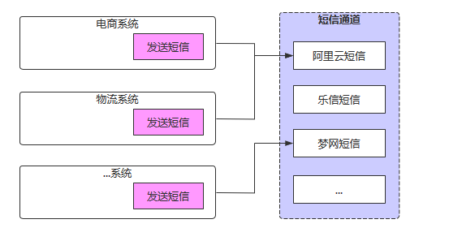
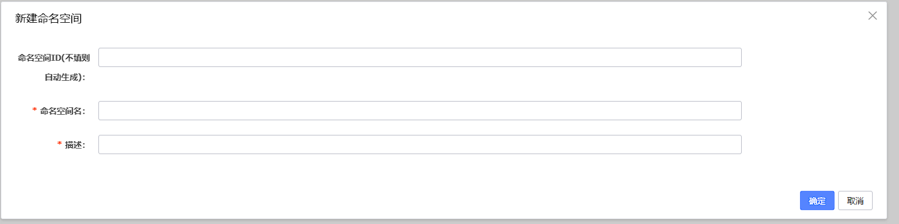
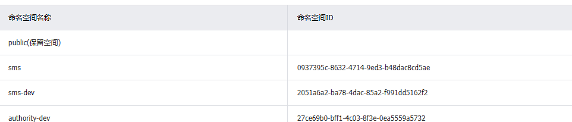
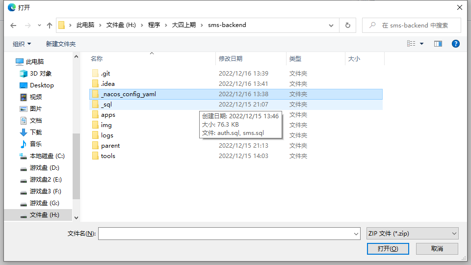
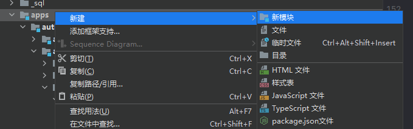
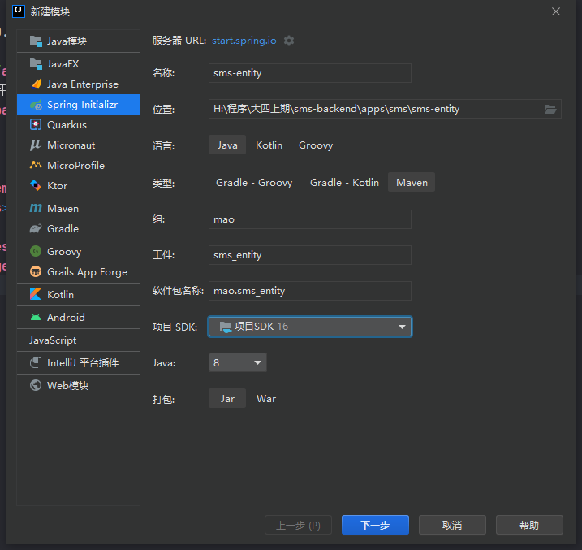
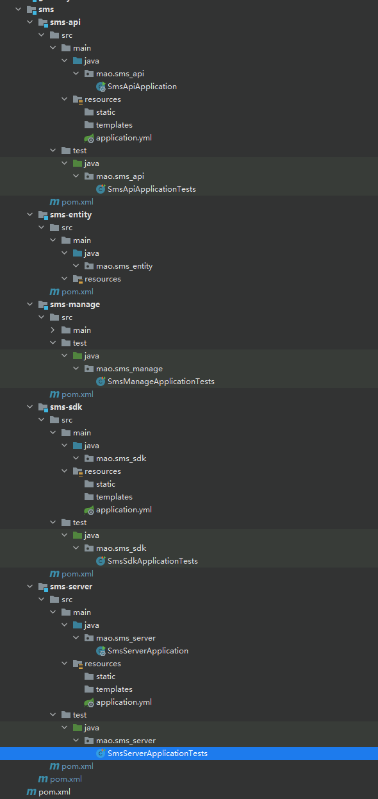
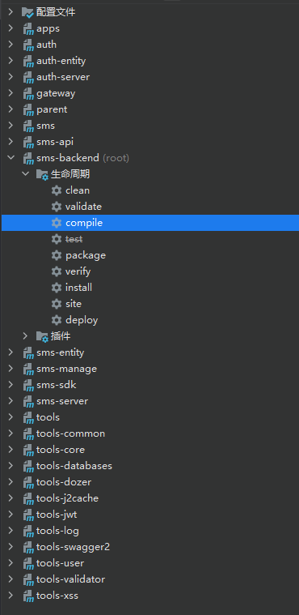
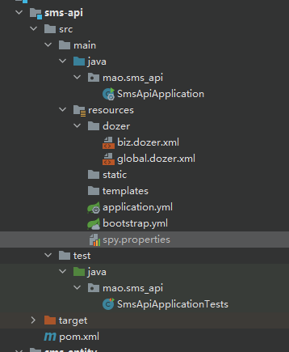

项目地址项目概述背景介绍整体架构业务架构项目模块介绍项目环境准备数据库Nacos命名空间配置文件common.ymlmysql.ymlredis.ymlsms-api.ymlsms-api-dev.ymlsms-manage.ymlsms-manage-dev.ymlpd-sms-server.ymlpd-sms-server-dev.yml导入配置后端工程脚手架初始化工程更改pom文件parent模块apps模块sms模块sms-api模块sms-dao模块sms-entity模块sms-manage模块sms-sdk模块sms-server模块配置文件sms-api模块sms-manage模块sms-server模块启动测试sms-api模块sms-manage模块sms-server模块后台管理服务项目结构基础工程管理端工程数据模型与类基础属性自动注入基础属性自定义注解定义切面类Redis发布订阅模式通道管理需求分析具体实现短信接收服务介绍项目结构数据模型与类消息存储TCP接口SDK说明项目结构关键代码使用SDK短信发送服务介绍需求分析功能需求处理过程项目结构核心代码功能实现服务注册器通道实例加载器定时短信业务处理器短信发送定时任务短信接收器通道消息监听器
项目地址
项目概述
背景介绍
随着企业业务扩张、应用成倍的增加、短信规模化使用，传统短信平台的接入方式和单一的信息发送功能，已经不能完全满足现代企业管理的需求，所以统一入口、减少对接成本、同时兼顾多种短信业务、简单易行的操作与维护、高稳定、高可靠的移动信息化应用成为短信平台发展趋势。

- 服务越来越多，每个服务都有可能发送短信，是否每个服务都需要对接一遍？
- 多应用对接短信，如何做到短信发送服务高效、稳定？
- 短信通道出现异常时，如何快速切换通道？
- 切换通道时，如何做到应用服务无感知？
- 如何统计各服务短信发送情况，以便进行后续营销分析？
本项目的核心在于保证短信高效、准确的送达、简单易操作的对接方式。通过对服务的解耦、通讯方式的升级来提升系统的吞吐量。同时在多通道的加持下，通过智能动态的通道评级、选举、降级、热插拔，增强了系统的健壮性，摆脱对单一通道的依赖。并且提供多种对接方式，满足企业内部的各种需求。
整体架构
业务架构

项目模块介绍
项目整体工程结构和模块功能如下：
xxxxxxxxxx271sms-backend # 聚合工程，用于聚合parent、apps、tools等模块2 ├── parent # 父工程，nacos配置及依赖包管理3 ├── apps # 应用目录4 ├── auth # 权限服务父工程5 ├── auth-entity # 权限实体6 ├── auth-server # 权限服务7 ├── gateway # 网关服务8 ├── sms # 短信平台父工程9 ├──sms-entity # 短信平台实体10 ├──sms-dao # 短信平台的数据持久化模块，主要包括mybatis plus的mapper文件和mapper接口11 ├──sms-manage # 系统管理服务12 ├──sms-api # 短信接收服务，应用系统调用接口、发送短信13 ├──sms-server # 短信发送服务，调用短信通道、发送短信14 └──sms-sdk # 短信SDK，应用系统引入、发送短信15 └── tools # 工具工程16 ├── tools-common # 基础组件：基础配置类、函数、常量、统一异常处理、undertow服务器17 ├── tools-core # 核心组件：基础实体、返回对象、上下文、异常处理、分布式锁、函数、树18 ├── tools-databases # 数据源组件：数据源配置、数据权限、查询条件等19 ├── tools-dozer # 对象转换：dozer配置、工具20 ├── tools-redis-cache # redis分布式缓存工具类和分布式锁服务，缓存工具类解决著名的3个缓存问题21 ├── tools-j2cache # 缓存组件：j2cache、redis缓存22 ├── tools-jwt # JWT组件：配置、属性、工具23 ├── tools-log # 日志组件：日志实体、事件、拦截器、工具24 ├── tools-swagger2 # 文档组件：knife4j文档25 ├── tools-user # 用户上下文：用户注解、模型和工具，当前登录用户信息注入模块26 ├── tools-validator # 表单验证： 后台表单规则验证27 ├── tools-xss # xss防注入组件
集信达短信服务有三个：后台管理服务，短信接收服务，短信发送服务：
| 应用 | 端口 | 说明 |
|---|---|---|
| sms-manage | 8770 | 后台管理服务 |
| sms-api | 8771 | 短信接收服务 |
| sms-server | 8772 | 短信发送服务 |
项目环境准备
数据库
xxxxxxxxxx2961SET NAMES utf8mb4;2SET FOREIGN_KEY_CHECKS = 0;3
4-- ----------------------------5-- Table structure for black_list6-- ----------------------------7DROP TABLE IF EXISTS `black_list`;8CREATE TABLE `black_list`9(10 `id` varchar(64) CHARACTER SET utf8mb4 COLLATE utf8mb4_bin NOT NULL COMMENT '主键',11 `type` varchar(10) CHARACTER SET utf8mb4 COLLATE utf8mb4_bin NOT NULL COMMENT '类型：1：短信、2：邮件、3：微信',12 `content` varchar(64) CHARACTER SET utf8mb4 COLLATE utf8mb4_bin NOT NULL COMMENT '内容：手机号',13 `remark` varchar(200) CHARACTER SET utf8mb4 COLLATE utf8mb4_bin NULL DEFAULT NULL COMMENT '备注',14 `create_time` datetime(0) NOT NULL DEFAULT CURRENT_TIMESTAMP COMMENT '创建时间',15 `create_user` varchar(64) CHARACTER SET utf8mb4 COLLATE utf8mb4_bin NOT NULL COMMENT '创建人',16 `update_time` datetime(0) NOT NULL DEFAULT CURRENT_TIMESTAMP ON UPDATE CURRENT_TIMESTAMP(0) COMMENT '修改时间',17 `update_user` varchar(64) CHARACTER SET utf8mb4 COLLATE utf8mb4_bin NULL DEFAULT NULL COMMENT '修改人',18 `is_delete` tinyint(0) NOT NULL DEFAULT 1 COMMENT '逻辑删除：0删除',19 PRIMARY KEY (`id`) USING BTREE,20 UNIQUE INDEX `black_list_content_type` (`type`, `content`) USING BTREE21) ENGINE = InnoDB22 CHARACTER SET = utf8mb423 COLLATE = utf8mb4_bin COMMENT = '黑名单'24 ROW_FORMAT = Dynamic;25
26-- ----------------------------27-- Table structure for config28-- ----------------------------29DROP TABLE IF EXISTS `config`;30CREATE TABLE `config`31(32 `id` varchar(64) CHARACTER SET utf8mb4 COLLATE utf8mb4_bin NOT NULL COMMENT '主键',33 `name` varchar(100) CHARACTER SET utf8mb4 COLLATE utf8mb4_bin NOT NULL COMMENT '名称',34 `platform` varchar(20) CHARACTER SET utf8mb4 COLLATE utf8mb4_bin NOT NULL COMMENT '平台',35 `domain` varchar(100) CHARACTER SET utf8mb4 COLLATE utf8mb4_bin NOT NULL COMMENT '域名',36 `access_key_id` varchar(100) CHARACTER SET utf8mb4 COLLATE utf8mb4_bin NULL DEFAULT NULL,37 `access_key_secret` varchar(100) CHARACTER SET utf8mb4 COLLATE utf8mb4_bin NULL DEFAULT NULL,38 `other` json NULL COMMENT '其他配置 json格式',39 `is_active` tinyint(0) NOT NULL COMMENT '是否可用：0不可用',40 `is_enable` tinyint(0) NOT NULL COMMENT '是否正常：0不正常',41 `remark` varchar(500) CHARACTER SET utf8mb4 COLLATE utf8mb4_bin NULL DEFAULT NULL COMMENT '备注',42 `level` tinyint(0) NULL DEFAULT NULL COMMENT '级别',43 `channel_type` tinyint(0) NOT NULL COMMENT '通道类型，1：文字，2：语音，3：推送',44 `create_time` datetime(0) NOT NULL DEFAULT CURRENT_TIMESTAMP COMMENT '创建时间',45 `create_user` varchar(64) CHARACTER SET utf8mb4 COLLATE utf8mb4_bin NOT NULL COMMENT '创建人',46 `update_time` datetime(0) NOT NULL DEFAULT CURRENT_TIMESTAMP ON UPDATE CURRENT_TIMESTAMP(0) COMMENT '修改时间',47 `update_user` varchar(64) CHARACTER SET utf8mb4 COLLATE utf8mb4_bin NULL DEFAULT NULL COMMENT '修改人',48 `is_delete` tinyint(0) NOT NULL DEFAULT 1 COMMENT '逻辑删除：0删除',49 PRIMARY KEY (`id`) USING BTREE,50 UNIQUE INDEX `config_name` (`name`) USING BTREE51) ENGINE = InnoDB52 CHARACTER SET = utf8mb453 COLLATE = utf8mb4_bin COMMENT = '配置表'54 ROW_FORMAT = Dynamic;55
56-- ----------------------------57-- Table structure for config_signature58-- ----------------------------59DROP TABLE IF EXISTS `config_signature`;60CREATE TABLE `config_signature`61(62 `id` varchar(64) CHARACTER SET utf8mb4 COLLATE utf8mb4_bin NOT NULL COMMENT '主键',63 `config_id` varchar(64) CHARACTER SET utf8mb4 COLLATE utf8mb4_bin NOT NULL COMMENT '配置主键',64 `signature_id` varchar(64) CHARACTER SET utf8mb4 COLLATE utf8mb4_bin NOT NULL COMMENT '签名主键',65 `config_signature_code` varchar(64) CHARACTER SET utf8mb4 COLLATE utf8mb4_bin NULL DEFAULT NULL COMMENT '通道签名（如果为空在不需要签名id）',66 `remark` varchar(255) CHARACTER SET utf8mb4 COLLATE utf8mb4_bin NULL DEFAULT NULL COMMENT '备注',67 `create_time` datetime(0) NOT NULL DEFAULT CURRENT_TIMESTAMP COMMENT '创建时间',68 `create_user` varchar(64) CHARACTER SET utf8mb4 COLLATE utf8mb4_bin NOT NULL COMMENT '创建人',69 `update_time` datetime(0) NOT NULL DEFAULT CURRENT_TIMESTAMP ON UPDATE CURRENT_TIMESTAMP(0) COMMENT '修改时间',70 `update_user` varchar(64) CHARACTER SET utf8mb4 COLLATE utf8mb4_bin NULL DEFAULT NULL COMMENT '修改人',71 `is_delete` tinyint(0) NOT NULL DEFAULT 1 COMMENT '逻辑删除：0删除',72 PRIMARY KEY (`id`) USING BTREE73) ENGINE = InnoDB74 CHARACTER SET = utf8mb475 COLLATE = utf8mb4_bin COMMENT = '配置—签名表'76 ROW_FORMAT = Dynamic;77-- ----------------------------78-- Table structure for config_template79-- ----------------------------80DROP TABLE IF EXISTS `config_template`;81CREATE TABLE `config_template`82(83 `id` varchar(64) CHARACTER SET utf8mb4 COLLATE utf8mb4_bin NOT NULL COMMENT '主键',84 `config_id` varchar(64) CHARACTER SET utf8mb4 COLLATE utf8mb4_bin NOT NULL COMMENT '配置主键',85 `template_id` varchar(64) CHARACTER SET utf8mb4 COLLATE utf8mb4_bin NOT NULL COMMENT '模板主键',86 `config_template_code` varchar(64) CHARACTER SET utf8mb4 COLLATE utf8mb4_bin NULL DEFAULT NULL COMMENT '通道模板（如果为空在不需要模板id）',87 `remark` varchar(255) CHARACTER SET utf8mb4 COLLATE utf8mb4_bin NULL DEFAULT NULL COMMENT '备注',88 `create_time` datetime(0) NOT NULL DEFAULT CURRENT_TIMESTAMP COMMENT '创建时间',89 `create_user` varchar(64) CHARACTER SET utf8mb4 COLLATE utf8mb4_bin NOT NULL COMMENT '创建人',90 `update_time` datetime(0) NOT NULL DEFAULT CURRENT_TIMESTAMP ON UPDATE CURRENT_TIMESTAMP(0) COMMENT '修改时间',91 `update_user` varchar(64) CHARACTER SET utf8mb4 COLLATE utf8mb4_bin NULL DEFAULT NULL COMMENT '修改人',92 `is_delete` tinyint(0) NOT NULL DEFAULT 1 COMMENT '逻辑删除：0删除',93 PRIMARY KEY (`id`) USING BTREE94) ENGINE = InnoDB95 CHARACTER SET = utf8mb496 COLLATE = utf8mb4_bin COMMENT = '配置—模板表'97 ROW_FORMAT = Dynamic;98
99-- ----------------------------100-- Table structure for manual_process101-- ----------------------------102DROP TABLE IF EXISTS `manual_process`;103CREATE TABLE `manual_process`104(105 `id` varchar(64) CHARACTER SET utf8mb4 COLLATE utf8mb4_bin NOT NULL COMMENT '主键',106 `template` varchar(64) CHARACTER SET utf8mb4 COLLATE utf8mb4_bin NULL DEFAULT NULL COMMENT '模板',107 `signature` varchar(64) CHARACTER SET utf8mb4 COLLATE utf8mb4_bin NULL DEFAULT NULL COMMENT '签名',108 `mobile` varchar(20) CHARACTER SET utf8mb4 COLLATE utf8mb4_bin NOT NULL COMMENT '手机号',109 `request` varchar(5000) CHARACTER SET utf8mb4 COLLATE utf8mb4_bin NULL DEFAULT NULL COMMENT '请求参数',110 `config_ids` varchar(500) CHARACTER SET utf8mb4 COLLATE utf8mb4_bin NULL DEFAULT NULL COMMENT '通道id集合',111 `status` tinyint(0) NOT NULL DEFAULT 0 COMMENT '状态 0新建，1处理中，2处理成功，3处理失败',112 `remark` varchar(255) CHARACTER SET utf8mb4 COLLATE utf8mb4_bin NULL DEFAULT NULL COMMENT '备注',113 `create_time` datetime(0) NOT NULL DEFAULT CURRENT_TIMESTAMP COMMENT '创建时间',114 `create_user` varchar(64) CHARACTER SET utf8mb4 COLLATE utf8mb4_bin NULL DEFAULT NULL COMMENT '创建人',115 `update_time` datetime(0) NOT NULL DEFAULT CURRENT_TIMESTAMP ON UPDATE CURRENT_TIMESTAMP(0) COMMENT '修改时间',116 `update_user` varchar(64) CHARACTER SET utf8mb4 COLLATE utf8mb4_bin NULL DEFAULT NULL COMMENT '修改人',117 `is_delete` tinyint(0) NOT NULL DEFAULT 1 COMMENT '逻辑删除：0删除',118 PRIMARY KEY (`id`) USING BTREE119) ENGINE = InnoDB120 CHARACTER SET = utf8mb4121 COLLATE = utf8mb4_bin COMMENT = '人工处理任务表'122 ROW_FORMAT = Dynamic;123
124-- ----------------------------125-- Table structure for platform126-- ----------------------------127DROP TABLE IF EXISTS `platform`;128CREATE TABLE `platform`129(130 `id` varchar(64) CHARACTER SET utf8mb4 COLLATE utf8mb4_bin NOT NULL COMMENT '主键',131 `name` varchar(20) CHARACTER SET utf8mb4 COLLATE utf8mb4_bin NOT NULL COMMENT '平台名称',132 `access_key_id` varchar(100) CHARACTER SET utf8mb4 COLLATE utf8mb4_bin NULL DEFAULT NULL,133 `access_key_secret` varchar(100) CHARACTER SET utf8mb4 COLLATE utf8mb4_bin NULL DEFAULT NULL,134 `ip_addr` varchar(100) CHARACTER SET utf8mb4 COLLATE utf8mb4_bin NULL DEFAULT NULL COMMENT 'ip绑定,多个用英文逗号分隔',135 `need_auth` tinyint(0) NOT NULL DEFAULT 0 COMMENT '是否鉴权：0不鉴权',136 `is_active` tinyint(0) NOT NULL DEFAULT 1 COMMENT '是否可用：0不可用',137 `remark` varchar(500) CHARACTER SET utf8mb4 COLLATE utf8mb4_bin NULL DEFAULT NULL COMMENT '备注',138 `level` tinyint(0) NULL DEFAULT NULL COMMENT '平台等级（预留）',139 `create_time` datetime(0) NOT NULL DEFAULT CURRENT_TIMESTAMP COMMENT '创建时间',140 `create_user` varchar(64) CHARACTER SET utf8mb4 COLLATE utf8mb4_bin NOT NULL COMMENT '创建人',141 `update_time` datetime(0) NOT NULL DEFAULT CURRENT_TIMESTAMP ON UPDATE CURRENT_TIMESTAMP(0) COMMENT '修改时间',142 `update_user` varchar(64) CHARACTER SET utf8mb4 COLLATE utf8mb4_bin NULL DEFAULT NULL COMMENT '修改人',143 `is_delete` tinyint(0) NOT NULL DEFAULT 1 COMMENT '逻辑删除：0删除',144 PRIMARY KEY (`id`) USING BTREE,145 UNIQUE INDEX `platform_name` (`name`) USING BTREE146) ENGINE = InnoDB147 CHARACTER SET = utf8mb4148 COLLATE = utf8mb4_bin COMMENT = '接入平台表'149 ROW_FORMAT = Dynamic;150
151-- ----------------------------152-- Table structure for signature153-- ----------------------------154DROP TABLE IF EXISTS `signature`;155CREATE TABLE `signature`156(157 `id` varchar(64) CHARACTER SET utf8mb4 COLLATE utf8mb4_bin NOT NULL COMMENT '主键',158 `name` varchar(64) CHARACTER SET utf8mb4 COLLATE utf8mb4_bin NOT NULL COMMENT '签名名称',159 `code` varchar(64) CHARACTER SET utf8mb4 COLLATE utf8mb4_bin NOT NULL COMMENT '签名编码',160 `content` varchar(64) CHARACTER SET utf8mb4 COLLATE utf8mb4_bin NOT NULL COMMENT '签名内容',161 `remark` varchar(255) CHARACTER SET utf8mb4 COLLATE utf8mb4_bin NULL DEFAULT NULL COMMENT '备注',162 `create_time` datetime(0) NOT NULL DEFAULT CURRENT_TIMESTAMP COMMENT '创建时间',163 `create_user` varchar(64) CHARACTER SET utf8mb4 COLLATE utf8mb4_bin NOT NULL COMMENT '创建人',164 `update_time` datetime(0) NOT NULL DEFAULT CURRENT_TIMESTAMP ON UPDATE CURRENT_TIMESTAMP(0) COMMENT '修改时间',165 `update_user` varchar(64) CHARACTER SET utf8mb4 COLLATE utf8mb4_bin NULL DEFAULT NULL COMMENT '修改人',166 `is_delete` tinyint(0) NOT NULL DEFAULT 1 COMMENT '逻辑删除：0删除',167 PRIMARY KEY (`id`) USING BTREE,168 UNIQUE INDEX `signature_code` (`code`) USING BTREE,169 UNIQUE INDEX `signature_name` (`name`) USING BTREE170) ENGINE = InnoDB171 CHARACTER SET = utf8mb4172 COLLATE = utf8mb4_bin COMMENT = '签名表'173 ROW_FORMAT = Dynamic;174
175-- ----------------------------176-- Table structure for template177-- ----------------------------178DROP TABLE IF EXISTS `template`;179CREATE TABLE `template`180(181 `id` varchar(64) CHARACTER SET utf8mb4 COLLATE utf8mb4_bin NOT NULL COMMENT '主键',182 `name` varchar(64) CHARACTER SET utf8mb4 COLLATE utf8mb4_bin NOT NULL COMMENT '模板名称',183 `code` varchar(64) CHARACTER SET utf8mb4 COLLATE utf8mb4_bin NOT NULL COMMENT '模板编码',184 `content` varchar(500) CHARACTER SET utf8mb4 COLLATE utf8mb4_bin NOT NULL COMMENT '模板内容',185 `type` tinyint(0) NULL DEFAULT NULL COMMENT '模板类型 1：验证码，2：营销类',186 `remark` varchar(255) CHARACTER SET utf8mb4 COLLATE utf8mb4_bin NULL DEFAULT NULL COMMENT '备注',187 `create_time` datetime(0) NOT NULL DEFAULT CURRENT_TIMESTAMP COMMENT '创建时间',188 `create_user` varchar(64) CHARACTER SET utf8mb4 COLLATE utf8mb4_bin NOT NULL COMMENT '创建人',189 `update_time` datetime(0) NOT NULL DEFAULT CURRENT_TIMESTAMP ON UPDATE CURRENT_TIMESTAMP(0) COMMENT '修改时间',190 `update_user` varchar(64) CHARACTER SET utf8mb4 COLLATE utf8mb4_bin NULL DEFAULT NULL COMMENT '修改人',191 `is_delete` tinyint(0) NOT NULL DEFAULT 1 COMMENT '逻辑删除：0删除',192 PRIMARY KEY (`id`) USING BTREE,193 UNIQUE INDEX `template_code` (`code`) USING BTREE,194 UNIQUE INDEX `template_name` (`name`) USING BTREE195) ENGINE = InnoDB196 CHARACTER SET = utf8mb4197 COLLATE = utf8mb4_bin COMMENT = '模板表'198 ROW_FORMAT = Dynamic;199
200-- ----------------------------201-- Table structure for timing_push202-- ----------------------------203DROP TABLE IF EXISTS `timing_push`;204CREATE TABLE `timing_push`205(206 `id` varchar(64) CHARACTER SET utf8mb4 COLLATE utf8mb4_bin NOT NULL COMMENT '主键',207 `template` varchar(64) CHARACTER SET utf8mb4 COLLATE utf8mb4_bin NOT NULL COMMENT '模板',208 `signature` varchar(64) CHARACTER SET utf8mb4 COLLATE utf8mb4_bin NOT NULL COMMENT '签名',209 `mobile` varchar(20) CHARACTER SET utf8mb4 COLLATE utf8mb4_bin NOT NULL COMMENT '手机号',210 `request` varchar(5000) CHARACTER SET utf8mb4 COLLATE utf8mb4_bin NOT NULL COMMENT '参数json',211 `timing` varchar(40) CHARACTER SET utf8mb4 COLLATE utf8mb4_bin NULL DEFAULT NULL COMMENT '发送时间',212 `status` tinyint(0) NOT NULL DEFAULT 0 COMMENT '状态 0：未处理 1：已处理',213 `remark` varchar(255) CHARACTER SET utf8mb4 COLLATE utf8mb4_bin NULL DEFAULT NULL COMMENT '备注',214 `create_time` datetime(0) NOT NULL DEFAULT CURRENT_TIMESTAMP COMMENT '创建时间',215 `create_user` varchar(64) CHARACTER SET utf8mb4 COLLATE utf8mb4_bin NULL DEFAULT NULL COMMENT '创建人',216 `update_time` datetime(0) NOT NULL DEFAULT CURRENT_TIMESTAMP ON UPDATE CURRENT_TIMESTAMP(0) COMMENT '修改时间',217 `update_user` varchar(64) CHARACTER SET utf8mb4 COLLATE utf8mb4_bin NULL DEFAULT NULL COMMENT '修改人',218 `is_delete` tinyint(0) NOT NULL DEFAULT 1 COMMENT '逻辑删除：0删除',219 PRIMARY KEY (`id`) USING BTREE,220 INDEX `timing_push_status` (`status`) USING BTREE221) ENGINE = InnoDB222 CHARACTER SET = utf8mb4223 COLLATE = utf8mb4_bin COMMENT = '定时发送'224 ROW_FORMAT = Dynamic;225
226
227-- ----------------------------228-- Table structure for receive_log229-- ----------------------------230DROP TABLE IF EXISTS `receive_log`;231CREATE TABLE `receive_log`232(233 `id` varchar(64) CHARACTER SET utf8mb4 COLLATE utf8mb4_bin NOT NULL COMMENT '主键',234 `platform_id` varchar(64) CHARACTER SET utf8mb4 COLLATE utf8mb4_bin NOT NULL COMMENT '请求平台id',235 `platform_name` varchar(64) CHARACTER SET utf8mb4 COLLATE utf8mb4_bin NOT NULL COMMENT '请求平台名称',236 `business` varchar(100) CHARACTER SET utf8mb4 COLLATE utf8mb4_bin NULL DEFAULT NULL COMMENT '请求平台业务信息',237 `config_ids` varchar(500) CHARACTER SET utf8mb4 COLLATE utf8mb4_bin NULL DEFAULT NULL COMMENT '配置主键集合',238 `template` varchar(64) CHARACTER SET utf8mb4 COLLATE utf8mb4_bin NOT NULL COMMENT '模板',239 `signature` varchar(64) CHARACTER SET utf8mb4 COLLATE utf8mb4_bin NOT NULL COMMENT '签名',240 `mobile` varchar(20) CHARACTER SET utf8mb4 COLLATE utf8mb4_bin NOT NULL COMMENT '手机号',241 `request` varchar(5000) CHARACTER SET utf8mb4 COLLATE utf8mb4_bin NOT NULL COMMENT '请求参数',242 `error` varchar(5000) CHARACTER SET utf8mb4 COLLATE utf8mb4_bin NULL DEFAULT NULL COMMENT '错误信息',243 `use_time` bigint(0) NOT NULL COMMENT '耗时',244 `status` tinyint(0) NOT NULL COMMENT '状态：0失败，1成功',245 `api_log_id` varchar(64) CHARACTER SET utf8mb4 COLLATE utf8mb4_bin NULL DEFAULT NULL COMMENT '日志id',246 `remark` varchar(255) CHARACTER SET utf8mb4 COLLATE utf8mb4_bin NULL DEFAULT NULL COMMENT '备注',247 `create_time` datetime(0) NOT NULL DEFAULT CURRENT_TIMESTAMP COMMENT '创建时间',248 `create_user` varchar(64) CHARACTER SET utf8mb4 COLLATE utf8mb4_bin NULL DEFAULT NULL COMMENT '创建人',249 `update_time` datetime(0) NOT NULL DEFAULT CURRENT_TIMESTAMP ON UPDATE CURRENT_TIMESTAMP(0) COMMENT '修改时间',250 `update_user` varchar(64) CHARACTER SET utf8mb4 COLLATE utf8mb4_bin NULL DEFAULT NULL COMMENT '修改人',251 `is_delete` tinyint(0) NOT NULL DEFAULT 1 COMMENT '逻辑删除：0删除',252 PRIMARY KEY (`id`) USING BTREE,253 INDEX `receive_log_api_log_id` (`api_log_id`) USING BTREE,254 INDEX `receive_log_template` (`template`) USING BTREE,255 INDEX `receive_log_signature` (`signature`) USING BTREE,256 INDEX `receive_log_business` (`business`) USING BTREE257) ENGINE = InnoDB258 CHARACTER SET = utf8mb4259 COLLATE = utf8mb4_bin COMMENT = '接收日志表'260 ROW_FORMAT = Dynamic;261
262-- ----------------------------263-- Table structure for send_log264-- ----------------------------265DROP TABLE IF EXISTS `send_log`;266CREATE TABLE `send_log`267(268 `id` varchar(64) CHARACTER SET utf8mb4 COLLATE utf8mb4_bin NOT NULL COMMENT '主键',269 `config_id` varchar(64) CHARACTER SET utf8mb4 COLLATE utf8mb4_bin NOT NULL COMMENT '配置主键',270 `config_platform` varchar(64) CHARACTER SET utf8mb4 COLLATE utf8mb4_bin NOT NULL COMMENT '配置平台',271 `config_name` varchar(64) CHARACTER SET utf8mb4 COLLATE utf8mb4_bin NOT NULL COMMENT '配置名称',272 `template` varchar(64) CHARACTER SET utf8mb4 COLLATE utf8mb4_bin NOT NULL COMMENT '模板',273 `signature` varchar(64) CHARACTER SET utf8mb4 COLLATE utf8mb4_bin NOT NULL COMMENT '签名',274 `mobile` varchar(20) CHARACTER SET utf8mb4 COLLATE utf8mb4_bin NOT NULL COMMENT '手机号',275 `request` varchar(5000) CHARACTER SET utf8mb4 COLLATE utf8mb4_bin NOT NULL COMMENT '请求参数',276 `response` varchar(5000) CHARACTER SET utf8mb4 COLLATE utf8mb4_bin NULL DEFAULT NULL COMMENT '返回参数',277 `error` varchar(5000) CHARACTER SET utf8mb4 COLLATE utf8mb4_bin NULL DEFAULT NULL COMMENT '错误信息',278 `use_time` bigint(0) NOT NULL COMMENT '耗时',279 `status` tinyint(0) NOT NULL COMMENT '状态：0失败，1成功',280 `api_log_id` varchar(64) CHARACTER SET utf8mb4 COLLATE utf8mb4_bin NULL DEFAULT NULL COMMENT 'api日志主键',281 `remark` varchar(255) CHARACTER SET utf8mb4 COLLATE utf8mb4_bin NULL DEFAULT NULL COMMENT '备注',282 `create_time` datetime(0) NOT NULL DEFAULT CURRENT_TIMESTAMP COMMENT '创建时间',283 `create_user` varchar(64) CHARACTER SET utf8mb4 COLLATE utf8mb4_bin NULL DEFAULT NULL COMMENT '创建人',284 `update_time` datetime(0) NOT NULL DEFAULT CURRENT_TIMESTAMP ON UPDATE CURRENT_TIMESTAMP(0) COMMENT '修改时间',285 `update_user` varchar(64) CHARACTER SET utf8mb4 COLLATE utf8mb4_bin NULL DEFAULT NULL COMMENT '修改人',286 `is_delete` tinyint(0) NOT NULL DEFAULT 1 COMMENT '逻辑删除：0删除',287 PRIMARY KEY (`id`) USING BTREE,288 INDEX `send_log_api_log_id` (`api_log_id`) USING BTREE,289 INDEX `send_log_signature` (`signature`) USING BTREE,290 INDEX `send_log_template` (`template`) USING BTREE291) ENGINE = InnoDB292 CHARACTER SET = utf8mb4293 COLLATE = utf8mb4_bin COMMENT = '日志表'294 ROW_FORMAT = Dynamic;295
296SET FOREIGN_KEY_CHECKS = 1;
导入示例：
xxxxxxxxxx4391PS C:\Users\mao\Desktop> mysql -u root -p2Enter password: ********3Welcome to the MySQL monitor. Commands end with ; or \g.4Your MySQL connection id is 85Server version: 8.0.27 MySQL Community Server - GPL6
7Copyright (c) 2000, 2021, Oracle and/or its affiliates.8
9Oracle is a registered trademark of Oracle Corporation and/or its10affiliates. Other names may be trademarks of their respective11owners.12
13Type 'help;' or '\h' for help. Type '\c' to clear the current input statement.14
15mysql> show databases;16+-----------------------+17| Database |18+-----------------------+19| authority |20| cloud_order |21| cloud_user |22| hotel |23| information_schema |24| mysql |25| nacos |26| performance_schema |27| sakila |28| seata |29| seata_demo |30| shop |31| spring_cloud_security |32| student |33| student1 |34| student_test |35| sys |36| test |37| tx |38| world |39+-----------------------+4020 rows in set (0.03 sec)41
42mysql> create database sms;43Query OK, 1 row affected (0.01 sec)44
45mysql> show databases;46+-----------------------+47| Database |48+-----------------------+49| authority |50| cloud_order |51| cloud_user |52| hotel |53| information_schema |54| mysql |55| nacos |56| performance_schema |57| sakila |58| seata |59| seata_demo |60| shop |61| sms |62| spring_cloud_security |63| student |64| student1 |65| student_test |66| sys |67| test |68| tx |69| world |70+-----------------------+7121 rows in set (0.00 sec)72
73mysql> use sms;74Database changed75mysql> SET NAMES utf8mb4;76Query OK, 0 rows affected (0.00 sec)77
78mysql> SET FOREIGN_KEY_CHECKS = 0;79Query OK, 0 rows affected (0.00 sec)80
81mysql>82mysql> -- ----------------------------83mysql> -- Table structure for black_list84mysql> -- ----------------------------85mysql> DROP TABLE IF EXISTS `black_list`;86Query OK, 0 rows affected, 1 warning (0.01 sec)87
88mysql> CREATE TABLE `black_list`89 -> (90 -> `id` varchar(64) CHARACTER SET utf8mb4 COLLATE utf8mb4_bin NOT NULL COMMENT '主键',91 -> `type` varchar(10) CHARACTER SET utf8mb4 COLLATE utf8mb4_bin NOT NULL COMMENT '类型：1：短信、2：邮件、3：微信',92 -> `content` varchar(64) CHARACTER SET utf8mb4 COLLATE utf8mb4_bin NOT NULL COMMENT '内容：手机号',93 -> `remark` varchar(200) CHARACTER SET utf8mb4 COLLATE utf8mb4_bin NULL DEFAULT NULL COMMENT '备注',94 -> `create_time` datetime(0) NOT NULL DEFAULT CURRENT_TIMESTAMP COMMENT '创建时间',95 -> `create_user` varchar(64) CHARACTER SET utf8mb4 COLLATE utf8mb4_bin NOT NULL COMMENT '创建人',96 -> `update_time` datetime(0) NOT NULL DEFAULT CURRENT_TIMESTAMP ON UPDATE CURRENT_TIMESTAMP(0) COMMENT '修改 时间',97 -> `update_user` varchar(64) CHARACTER SET utf8mb4 COLLATE utf8mb4_bin NULL DEFAULT NULL COMMENT '修改人',98 -> `is_delete` tinyint(0) NOT NULL DEFAULT 1 COMMENT '逻辑删除：0删除',99 -> PRIMARY KEY (`id`) USING BTREE,100 -> UNIQUE INDEX `black_list_content_type` (`type`, `content`) USING BTREE101 -> ) ENGINE = InnoDB102 -> CHARACTER SET = utf8mb4103 -> COLLATE = utf8mb4_bin COMMENT = '黑名单'104 -> ROW_FORMAT = Dynamic;105Query OK, 0 rows affected, 11 warnings (0.04 sec)106
107mysql>108mysql> -- ----------------------------109mysql> -- Table structure for config110mysql> -- ----------------------------111mysql> DROP TABLE IF EXISTS `config`;112Query OK, 0 rows affected, 1 warning (0.00 sec)113
114mysql> CREATE TABLE `config`115 -> (116 -> `id` varchar(64) CHARACTER SET utf8mb4 COLLATE utf8mb4_bin NOT NULL COMMENT '主键',117 -> `name` varchar(100) CHARACTER SET utf8mb4 COLLATE utf8mb4_bin NOT NULL COMMENT '名称',118 -> `platform` varchar(20) CHARACTER SET utf8mb4 COLLATE utf8mb4_bin NOT NULL COMMENT '平台',119 -> `domain` varchar(100) CHARACTER SET utf8mb4 COLLATE utf8mb4_bin NOT NULL COMMENT '域名',120 -> `access_key_id` varchar(100) CHARACTER SET utf8mb4 COLLATE utf8mb4_bin NULL DEFAULT NULL,121 -> `access_key_secret` varchar(100) CHARACTER SET utf8mb4 COLLATE utf8mb4_bin NULL DEFAULT NULL,122 -> `other` json NULL COMMENT '其他配置 json格式',123 -> `is_active` tinyint(0) NOT NULL COMMENT '是否可用：0不可用',124 -> `is_enable` tinyint(0) NOT NULL COMMENT '是否正常：0不正常',125 -> `remark` varchar(500) CHARACTER SET utf8mb4 COLLATE utf8mb4_bin NULL DEFAULT NULL COMMENT '备注',126 -> `level` tinyint(0) NULL DEFAULT NULL COMMENT '级别',127 -> `channel_type` tinyint(0) NOT NULL COMMENT '通道类型，1：文字，2：语音，3：推送',128 -> `create_time` datetime(0) NOT NULL DEFAULT CURRENT_TIMESTAMP COMMENT '创建时间',129 -> `create_user` varchar(64) CHARACTER SET utf8mb4 COLLATE utf8mb4_bin NOT NULL COMMENT '创建人',130 -> `update_time` datetime(0) NOT NULL DEFAULT CURRENT_TIMESTAMP ON UPDATE CURRENT_TIMESTAMP(0) COMMENT '修改时间',131 -> `update_user` varchar(64) CHARACTER SET utf8mb4 COLLATE utf8mb4_bin NULL DEFAULT NULL COMMENT '修改人',132 -> `is_delete` tinyint(0) NOT NULL DEFAULT 1 COMMENT '逻辑删除：0删除',133 -> PRIMARY KEY (`id`) USING BTREE,134 -> UNIQUE INDEX `config_name` (`name`) USING BTREE135 -> ) ENGINE = InnoDB136 -> CHARACTER SET = utf8mb4137 -> COLLATE = utf8mb4_bin COMMENT = '配置表'138 -> ROW_FORMAT = Dynamic;139Query OK, 0 rows affected, 20 warnings (0.03 sec)140
141mysql>142mysql> -- ----------------------------143mysql> -- Table structure for config_signature144mysql> -- ----------------------------145mysql> DROP TABLE IF EXISTS `config_signature`;146Query OK, 0 rows affected, 1 warning (0.00 sec)147
148mysql> CREATE TABLE `config_signature`149 -> (150 -> `id` varchar(64) CHARACTER SET utf8mb4 COLLATE utf8mb4_bin NOT NULL COMMENT '主键',151 -> `config_id` varchar(64) CHARACTER SET utf8mb4 COLLATE utf8mb4_bin NOT NULL COMMENT '配置主键',152 -> `signature_id` varchar(64) CHARACTER SET utf8mb4 COLLATE utf8mb4_bin NOT NULL COMMENT '签名主键',153 -> `config_signature_code` varchar(64) CHARACTER SET utf8mb4 COLLATE utf8mb4_bin NULL DEFAULT NULL COMMENT '通道签名（如果为空在不需要签名id）',154 -> `remark` varchar(255) CHARACTER SET utf8mb4 COLLATE utf8mb4_bin NULL DEFAULT NULL COMMENT '备注',155 -> `create_time` datetime(0) NOT NULL DEFAULT CURRENT_TIMESTAMP COMMENT '创建时间',156 -> `create_user` varchar(64) CHARACTER SET utf8mb4 COLLATE utf8mb4_bin NOT NULL COMMENT '创建人',157 -> `update_time` datetime(0) NOT NULL DEFAULT CURRENT_TIMESTAMP ON UPDATE CURRENT_TIMESTAMP(0) COMMENT '修改时间',158 -> `update_user` varchar(64) CHARACTER SET utf8mb4 COLLATE utf8mb4_bin NULL DEFAULT NULL COMMENT '修改人',159 -> `is_delete` tinyint(0) NOT NULL DEFAULT 1 COMMENT '逻辑删除：0删除',160 -> PRIMARY KEY (`id`) USING BTREE161 -> ) ENGINE = InnoDB162 -> CHARACTER SET = utf8mb4163 -> COLLATE = utf8mb4_bin COMMENT = '配置-签名表'164 -> ROW_FORMAT = Dynamic;165Query OK, 0 rows affected, 12 warnings (0.01 sec)166
167mysql> -- ----------------------------168mysql> -- Table structure for config_template169mysql> -- ----------------------------170mysql> DROP TABLE IF EXISTS `config_template`;171Query OK, 0 rows affected, 1 warning (0.00 sec)172
173mysql> CREATE TABLE `config_template`174 -> (175 -> `id` varchar(64) CHARACTER SET utf8mb4 COLLATE utf8mb4_bin NOT NULL COMMENT '主键',176 -> `config_id` varchar(64) CHARACTER SET utf8mb4 COLLATE utf8mb4_bin NOT NULL COMMENT '配置主键',177 -> `template_id` varchar(64) CHARACTER SET utf8mb4 COLLATE utf8mb4_bin NOT NULL COMMENT '模板主键',178 -> `config_template_code` varchar(64) CHARACTER SET utf8mb4 COLLATE utf8mb4_bin NULL DEFAULT NULL COMMENT '通道模板（如果为空在不需要模板id）',179 -> `remark` varchar(255) CHARACTER SET utf8mb4 COLLATE utf8mb4_bin NULL DEFAULT NULL COMMENT '备注',180 -> `create_time` datetime(0) NOT NULL DEFAULT CURRENT_TIMESTAMP COMMENT '创建时间',181 -> `create_user` varchar(64) CHARACTER SET utf8mb4 COLLATE utf8mb4_bin NOT NULL COMMENT '创建人',182 -> `update_time` datetime(0) NOT NULL DEFAULT CURRENT_TIMESTAMP ON UPDATE CURRENT_TIMESTAMP(0) COMMENT '修改时间',183 -> `update_user` varchar(64) CHARACTER SET utf8mb4 COLLATE utf8mb4_bin NULL DEFAULT NULL COMMENT '修改人',184 -> `is_delete` tinyint(0) NOT NULL DEFAULT 1 COMMENT '逻辑删除：0删除',185 -> PRIMARY KEY (`id`) USING BTREE186 -> ) ENGINE = InnoDB187 -> CHARACTER SET = utf8mb4188 -> COLLATE = utf8mb4_bin COMMENT = '配置-模板表'189 -> ROW_FORMAT = Dynamic;190Query OK, 0 rows affected, 12 warnings (0.02 sec)191
192mysql>193mysql> -- ----------------------------194mysql> -- Table structure for manual_process195mysql> -- ----------------------------196mysql> DROP TABLE IF EXISTS `manual_process`;197Query OK, 0 rows affected, 1 warning (0.00 sec)198
199mysql> CREATE TABLE `manual_process`200 -> (201 -> `id` varchar(64) CHARACTER SET utf8mb4 COLLATE utf8mb4_bin NOT NULL COMMENT '主键',202 -> `template` varchar(64) CHARACTER SET utf8mb4 COLLATE utf8mb4_bin NULL DEFAULT NULL COMMENT '模板',203 -> `signature` varchar(64) CHARACTER SET utf8mb4 COLLATE utf8mb4_bin NULL DEFAULT NULL COMMENT '签名',204 -> `mobile` varchar(20) CHARACTER SET utf8mb4 COLLATE utf8mb4_bin NOT NULL COMMENT '手机号',205 -> `request` varchar(5000) CHARACTER SET utf8mb4 COLLATE utf8mb4_bin NULL DEFAULT NULL COMMENT '请求参数',206 -> `config_ids` varchar(500) CHARACTER SET utf8mb4 COLLATE utf8mb4_bin NULL DEFAULT NULL COMMENT '通道id集合',207 -> `status` tinyint(0) NOT NULL DEFAULT 0 COMMENT '状态 0新建，1处理中，2处理成功，3处理失败',208 -> `remark` varchar(255) CHARACTER SET utf8mb4 COLLATE utf8mb4_bin NULL DEFAULT NULL COMMENT '备注',209 -> `create_time` datetime(0) NOT NULL DEFAULT CURRENT_TIMESTAMP COMMENT '创建时间',210 -> `create_user` varchar(64) CHARACTER SET utf8mb4 COLLATE utf8mb4_bin NULL DEFAULT NULL COMMENT '创建人',211 -> `update_time` datetime(0) NOT NULL DEFAULT CURRENT_TIMESTAMP ON UPDATE CURRENT_TIMESTAMP(0) COMMENT '修改时间',212 -> `update_user` varchar(64) CHARACTER SET utf8mb4 COLLATE utf8mb4_bin NULL DEFAULT NULL COMMENT '修改人',213 -> `is_delete` tinyint(0) NOT NULL DEFAULT 1 COMMENT '逻辑删除：0删除',214 -> PRIMARY KEY (`id`) USING BTREE215 -> ) ENGINE = InnoDB216 -> CHARACTER SET = utf8mb4217 -> COLLATE = utf8mb4_bin COMMENT = '人工处理任务表'218 -> ROW_FORMAT = Dynamic;219Query OK, 0 rows affected, 16 warnings (0.01 sec)220
221mysql>222mysql> -- ----------------------------223mysql> -- Table structure for platform224mysql> -- ----------------------------225mysql> DROP TABLE IF EXISTS `platform`;226Query OK, 0 rows affected, 1 warning (0.00 sec)227
228mysql> CREATE TABLE `platform`229 -> (230 -> `id` varchar(64) CHARACTER SET utf8mb4 COLLATE utf8mb4_bin NOT NULL COMMENT '主键',231 -> `name` varchar(20) CHARACTER SET utf8mb4 COLLATE utf8mb4_bin NOT NULL COMMENT '平台名称',232 -> `access_key_id` varchar(100) CHARACTER SET utf8mb4 COLLATE utf8mb4_bin NULL DEFAULT NULL,233 -> `access_key_secret` varchar(100) CHARACTER SET utf8mb4 COLLATE utf8mb4_bin NULL DEFAULT NULL,234 -> `ip_addr` varchar(100) CHARACTER SET utf8mb4 COLLATE utf8mb4_bin NULL DEFAULT NULL COMMENT 'ip绑定,多个用英文逗号分隔',235 -> `need_auth` tinyint(0) NOT NULL DEFAULT 0 COMMENT '是否鉴权：0不鉴权',236 -> `is_active` tinyint(0) NOT NULL DEFAULT 1 COMMENT '是否可用：0不可用',237 -> `remark` varchar(500) CHARACTER SET utf8mb4 COLLATE utf8mb4_bin NULL DEFAULT NULL COMMENT '备注',238 -> `level` tinyint(0) NULL DEFAULT NULL COMMENT '平台等级（预留）',239 -> `create_time` datetime(0) NOT NULL DEFAULT CURRENT_TIMESTAMP COMMENT '创建时间',240 -> `create_user` varchar(64) CHARACTER SET utf8mb4 COLLATE utf8mb4_bin NOT NULL COMMENT '创建人',241 -> `update_time` datetime(0) NOT NULL DEFAULT CURRENT_TIMESTAMP ON UPDATE CURRENT_TIMESTAMP(0) COMMENT '修改时间',242 -> `update_user` varchar(64) CHARACTER SET utf8mb4 COLLATE utf8mb4_bin NULL DEFAULT NULL COMMENT '修改人',243 -> `is_delete` tinyint(0) NOT NULL DEFAULT 1 COMMENT '逻辑删除：0删除',244 -> PRIMARY KEY (`id`) USING BTREE,245 -> UNIQUE INDEX `platform_name` (`name`) USING BTREE246 -> ) ENGINE = InnoDB247 -> CHARACTER SET = utf8mb4248 -> COLLATE = utf8mb4_bin COMMENT = '接入平台表'249 -> ROW_FORMAT = Dynamic;250Query OK, 0 rows affected, 17 warnings (0.02 sec)251
252mysql>253mysql> -- ----------------------------254mysql> -- Table structure for signature255mysql> -- ----------------------------256mysql> DROP TABLE IF EXISTS `signature`;257Query OK, 0 rows affected, 1 warning (0.00 sec)258
259mysql> CREATE TABLE `signature`260 -> (261 -> `id` varchar(64) CHARACTER SET utf8mb4 COLLATE utf8mb4_bin NOT NULL COMMENT '主键',262 -> `name` varchar(64) CHARACTER SET utf8mb4 COLLATE utf8mb4_bin NOT NULL COMMENT '签名名称',263 -> `code` varchar(64) CHARACTER SET utf8mb4 COLLATE utf8mb4_bin NOT NULL COMMENT '签名编码',264 -> `content` varchar(64) CHARACTER SET utf8mb4 COLLATE utf8mb4_bin NOT NULL COMMENT '签名内容',265 -> `remark` varchar(255) CHARACTER SET utf8mb4 COLLATE utf8mb4_bin NULL DEFAULT NULL COMMENT '备注',266 -> `create_time` datetime(0) NOT NULL DEFAULT CURRENT_TIMESTAMP COMMENT '创建时间',267 -> `create_user` varchar(64) CHARACTER SET utf8mb4 COLLATE utf8mb4_bin NOT NULL COMMENT '创建人',268 -> `update_time` datetime(0) NOT NULL DEFAULT CURRENT_TIMESTAMP ON UPDATE CURRENT_TIMESTAMP(0) COMMENT '修改 时间',269 -> `update_user` varchar(64) CHARACTER SET utf8mb4 COLLATE utf8mb4_bin NULL DEFAULT NULL COMMENT '修改人',270 -> `is_delete` tinyint(0) NOT NULL DEFAULT 1 COMMENT '逻辑删除：0删除',271 -> PRIMARY KEY (`id`) USING BTREE,272 -> UNIQUE INDEX `signature_code` (`code`) USING BTREE,273 -> UNIQUE INDEX `signature_name` (`name`) USING BTREE274 -> ) ENGINE = InnoDB275 -> CHARACTER SET = utf8mb4276 -> COLLATE = utf8mb4_bin COMMENT = '签名表'277 -> ROW_FORMAT = Dynamic;278Query OK, 0 rows affected, 12 warnings (0.03 sec)279
280mysql>281mysql> -- ----------------------------282mysql> -- Table structure for template283mysql> -- ----------------------------284mysql> DROP TABLE IF EXISTS `template`;285Query OK, 0 rows affected, 1 warning (0.00 sec)286
287mysql> CREATE TABLE `template`288 -> (289 -> `id` varchar(64) CHARACTER SET utf8mb4 COLLATE utf8mb4_bin NOT NULL COMMENT '主键',290 -> `name` varchar(64) CHARACTER SET utf8mb4 COLLATE utf8mb4_bin NOT NULL COMMENT '模板名称',291 -> `code` varchar(64) CHARACTER SET utf8mb4 COLLATE utf8mb4_bin NOT NULL COMMENT '模板编码',292 -> `content` varchar(500) CHARACTER SET utf8mb4 COLLATE utf8mb4_bin NOT NULL COMMENT '模板内容',293 -> `type` tinyint(0) NULL DEFAULT NULL COMMENT '模板类型 1：验证码，2：营销类',294 -> `remark` varchar(255) CHARACTER SET utf8mb4 COLLATE utf8mb4_bin NULL DEFAULT NULL COMMENT '备注',295 -> `create_time` datetime(0) NOT NULL DEFAULT CURRENT_TIMESTAMP COMMENT '创建时间',296 -> `create_user` varchar(64) CHARACTER SET utf8mb4 COLLATE utf8mb4_bin NOT NULL COMMENT '创建人',297 -> `update_time` datetime(0) NOT NULL DEFAULT CURRENT_TIMESTAMP ON UPDATE CURRENT_TIMESTAMP(0) COMMENT '修改 时间',298 -> `update_user` varchar(64) CHARACTER SET utf8mb4 COLLATE utf8mb4_bin NULL DEFAULT NULL COMMENT '修改人',299 -> `is_delete` tinyint(0) NOT NULL DEFAULT 1 COMMENT '逻辑删除：0删除',300 -> PRIMARY KEY (`id`) USING BTREE,301 -> UNIQUE INDEX `template_code` (`code`) USING BTREE,302 -> UNIQUE INDEX `template_name` (`name`) USING BTREE303 -> ) ENGINE = InnoDB304 -> CHARACTER SET = utf8mb4305 -> COLLATE = utf8mb4_bin COMMENT = '模板表'306 -> ROW_FORMAT = Dynamic;307Query OK, 0 rows affected, 14 warnings (0.03 sec)308
309mysql>310mysql> -- ----------------------------311mysql> -- Table structure for timing_push312mysql> -- ----------------------------313mysql> DROP TABLE IF EXISTS `timing_push`;314Query OK, 0 rows affected, 1 warning (0.00 sec)315
316mysql> CREATE TABLE `timing_push`317 -> (318 -> `id` varchar(64) CHARACTER SET utf8mb4 COLLATE utf8mb4_bin NOT NULL COMMENT '主键',319 -> `template` varchar(64) CHARACTER SET utf8mb4 COLLATE utf8mb4_bin NOT NULL COMMENT '模板',320 -> `signature` varchar(64) CHARACTER SET utf8mb4 COLLATE utf8mb4_bin NOT NULL COMMENT '签名',321 -> `mobile` varchar(20) CHARACTER SET utf8mb4 COLLATE utf8mb4_bin NOT NULL COMMENT '手机号',322 -> `request` varchar(5000) CHARACTER SET utf8mb4 COLLATE utf8mb4_bin NOT NULL COMMENT '参数json',323 -> `timing` varchar(40) CHARACTER SET utf8mb4 COLLATE utf8mb4_bin NULL DEFAULT NULL COMMENT '发送时间',324 -> `status` tinyint(0) NOT NULL DEFAULT 0 COMMENT '状态 0：未处理 1：已处理',325 -> `remark` varchar(255) CHARACTER SET utf8mb4 COLLATE utf8mb4_bin NULL DEFAULT NULL COMMENT '备注',326 -> `create_time` datetime(0) NOT NULL DEFAULT CURRENT_TIMESTAMP COMMENT '创建时间',327 -> `create_user` varchar(64) CHARACTER SET utf8mb4 COLLATE utf8mb4_bin NULL DEFAULT NULL COMMENT '创建人',328 -> `update_time` datetime(0) NOT NULL DEFAULT CURRENT_TIMESTAMP ON UPDATE CURRENT_TIMESTAMP(0) COMMENT '修改时间',329 -> `update_user` varchar(64) CHARACTER SET utf8mb4 COLLATE utf8mb4_bin NULL DEFAULT NULL COMMENT '修改人',330 -> `is_delete` tinyint(0) NOT NULL DEFAULT 1 COMMENT '逻辑删除：0删除',331 -> PRIMARY KEY (`id`) USING BTREE,332 -> INDEX `timing_push_status` (`status`) USING BTREE333 -> ) ENGINE = InnoDB334 -> CHARACTER SET = utf8mb4335 -> COLLATE = utf8mb4_bin COMMENT = '定时发送'336 -> ROW_FORMAT = Dynamic;337Query OK, 0 rows affected, 16 warnings (0.03 sec)338
339mysql>340mysql>341mysql> -- ----------------------------342mysql> -- Table structure for receive_log343mysql> -- ----------------------------344mysql> DROP TABLE IF EXISTS `receive_log`;345Query OK, 0 rows affected, 1 warning (0.00 sec)346
347mysql> CREATE TABLE `receive_log`348 -> (349 -> `id` varchar(64) CHARACTER SET utf8mb4 COLLATE utf8mb4_bin NOT NULL COMMENT '主键',350 -> `platform_id` varchar(64) CHARACTER SET utf8mb4 COLLATE utf8mb4_bin NOT NULL COMMENT '请求平台id',351 -> `platform_name` varchar(64) CHARACTER SET utf8mb4 COLLATE utf8mb4_bin NOT NULL COMMENT '请求平台名称',352 -> `business` varchar(100) CHARACTER SET utf8mb4 COLLATE utf8mb4_bin NULL DEFAULT NULL COMMENT '请求平台业务信息',353 -> `config_ids` varchar(500) CHARACTER SET utf8mb4 COLLATE utf8mb4_bin NULL DEFAULT NULL COMMENT '配置主键集合',354 -> `template` varchar(64) CHARACTER SET utf8mb4 COLLATE utf8mb4_bin NOT NULL COMMENT '模板',355 -> `signature` varchar(64) CHARACTER SET utf8mb4 COLLATE utf8mb4_bin NOT NULL COMMENT '签名',356 -> `mobile` varchar(20) CHARACTER SET utf8mb4 COLLATE utf8mb4_bin NOT NULL COMMENT '手机号',357 -> `request` varchar(5000) CHARACTER SET utf8mb4 COLLATE utf8mb4_bin NOT NULL COMMENT '请求参数',358 -> `error` varchar(5000) CHARACTER SET utf8mb4 COLLATE utf8mb4_bin NULL DEFAULT NULL COMMENT '错误信息',359 -> `use_time` bigint(0) NOT NULL COMMENT '耗时',360 -> `status` tinyint(0) NOT NULL COMMENT '状态：0失败，1成功',361 -> `api_log_id` varchar(64) CHARACTER SET utf8mb4 COLLATE utf8mb4_bin NULL DEFAULT NULL COMMENT '日志id',362 -> `remark` varchar(255) CHARACTER SET utf8mb4 COLLATE utf8mb4_bin NULL DEFAULT NULL COMMENT '备注',363 -> `create_time` datetime(0) NOT NULL DEFAULT CURRENT_TIMESTAMP COMMENT '创建时间',364 -> `create_user` varchar(64) CHARACTER SET utf8mb4 COLLATE utf8mb4_bin NULL DEFAULT NULL COMMENT '创建人',365 -> `update_time` datetime(0) NOT NULL DEFAULT CURRENT_TIMESTAMP ON UPDATE CURRENT_TIMESTAMP(0) COMMENT '修改时间',366 -> `update_user` varchar(64) CHARACTER SET utf8mb4 COLLATE utf8mb4_bin NULL DEFAULT NULL COMMENT '修改人',367 -> `is_delete` tinyint(0) NOT NULL DEFAULT 1 COMMENT '逻辑删除：0删除',368 -> PRIMARY KEY (`id`) USING BTREE,369 -> INDEX `receive_log_api_log_id` (`api_log_id`) USING BTREE,370 -> INDEX `receive_log_template` (`template`) USING BTREE,371 -> INDEX `receive_log_signature` (`signature`) USING BTREE,372 -> INDEX `receive_log_business` (`business`) USING BTREE373 -> ) ENGINE = InnoDB374 -> CHARACTER SET = utf8mb4375 -> COLLATE = utf8mb4_bin COMMENT = '接收日志表'376 -> ROW_FORMAT = Dynamic;377Query OK, 0 rows affected, 23 warnings (0.03 sec)378
379mysql>380mysql> -- ----------------------------381mysql> -- Table structure for send_log382mysql> -- ----------------------------383mysql> DROP TABLE IF EXISTS `send_log`;384Query OK, 0 rows affected, 1 warning (0.00 sec)385
386mysql> CREATE TABLE `send_log`387 -> (388 -> `id` varchar(64) CHARACTER SET utf8mb4 COLLATE utf8mb4_bin NOT NULL COMMENT '主键',389 -> `config_id` varchar(64) CHARACTER SET utf8mb4 COLLATE utf8mb4_bin NOT NULL COMMENT '配置主键',390 -> `config_platform` varchar(64) CHARACTER SET utf8mb4 COLLATE utf8mb4_bin NOT NULL COMMENT '配置平台',391 -> `config_name` varchar(64) CHARACTER SET utf8mb4 COLLATE utf8mb4_bin NOT NULL COMMENT '配置名称',392 -> `template` varchar(64) CHARACTER SET utf8mb4 COLLATE utf8mb4_bin NOT NULL COMMENT '模板',393 -> `signature` varchar(64) CHARACTER SET utf8mb4 COLLATE utf8mb4_bin NOT NULL COMMENT '签名',394 -> `mobile` varchar(20) CHARACTER SET utf8mb4 COLLATE utf8mb4_bin NOT NULL COMMENT '手机号',395 -> `request` varchar(5000) CHARACTER SET utf8mb4 COLLATE utf8mb4_bin NOT NULL COMMENT '请求参数',396 -> `response` varchar(5000) CHARACTER SET utf8mb4 COLLATE utf8mb4_bin NULL DEFAULT NULL COMMENT '返回参数',397 -> `error` varchar(5000) CHARACTER SET utf8mb4 COLLATE utf8mb4_bin NULL DEFAULT NULL COMMENT '错误信息',398 -> `use_time` bigint(0) NOT NULL COMMENT '耗时',399 -> `status` tinyint(0) NOT NULL COMMENT '状态：0失败，1成功',400 -> `api_log_id` varchar(64) CHARACTER SET utf8mb4 COLLATE utf8mb4_bin NULL DEFAULT NULL COMMENT 'api日志主键',401 -> `remark` varchar(255) CHARACTER SET utf8mb4 COLLATE utf8mb4_bin NULL DEFAULT NULL COMMENT '备注',402 -> `create_time` datetime(0) NOT NULL DEFAULT CURRENT_TIMESTAMP COMMENT '创建时间',403 -> `create_user` varchar(64) CHARACTER SET utf8mb4 COLLATE utf8mb4_bin NULL DEFAULT NULL COMMENT '创建人',404 -> `update_time` datetime(0) NOT NULL DEFAULT CURRENT_TIMESTAMP ON UPDATE CURRENT_TIMESTAMP(0) COMMENT '修改时间',405 -> `update_user` varchar(64) CHARACTER SET utf8mb4 COLLATE utf8mb4_bin NULL DEFAULT NULL COMMENT '修改人',406 -> `is_delete` tinyint(0) NOT NULL DEFAULT 1 COMMENT '逻辑删除：0删除',407 -> PRIMARY KEY (`id`) USING BTREE,408 -> INDEX `send_log_api_log_id` (`api_log_id`) USING BTREE,409 -> INDEX `send_log_signature` (`signature`) USING BTREE,410 -> INDEX `send_log_template` (`template`) USING BTREE411 -> ) ENGINE = InnoDB412 -> CHARACTER SET = utf8mb4413 -> COLLATE = utf8mb4_bin COMMENT = '日志表'414 -> ROW_FORMAT = Dynamic;415Query OK, 0 rows affected, 23 warnings (0.03 sec)416
417mysql>418mysql> SET FOREIGN_KEY_CHECKS = 1;419Query OK, 0 rows affected (0.00 sec)420
421mysql> show tables;422+------------------+423| Tables_in_sms |424+------------------+425| black_list |426| config |427| config_signature |428| config_template |429| manual_process |430| platform |431| receive_log |432| send_log |433| signature |434| template |435| timing_push |436+------------------+43711 rows in set (0.01 sec)438
439mysql>
Nacos
命名空间
进入控制台，新建一个命名空间





配置文件
common.yml
xxxxxxxxxx771server2 undertow# jetty undertow3 io-threads8 # 设置IO线程数, 它主要执行非阻塞的任务,它们会负责多个连接, 默认设置每个CPU核心一个线程4 worker-threads120 # 阻塞任务线程池, 当执行类似servlet请求阻塞操作, undertow会从这个线程池中取得线程,它的值设置取决于系统的负载5 buffer-size2048 # 以下的配置会影响buffer,这些buffer会用于服务器连接的IO操作,有点类似netty的池化内存管理 , 每块buffer的空间大小,越小的空间被利用越充分6 direct-bufferstrue # 是否分配的直接内存7
8spring9 http10 encoding11 charsetUTF-812 forcetrue13 enabledtrue14 servlet15 multipart16 max-file-size512MB # Max file size，默认1M17 max-request-size512MB # Max request size，默认10M18
19dozer20 mappingFiles21classpath:dozer/global.dozer.xml22classpath:dozer/biz.dozer.xml23management24 endpoints25 web26 base-path/actuator27 exposure28 include'*'29 endpoint30 health31 show-detailsALWAYS32 enabledtrue33
34feign35 httpclient36 enabledfalse37 okhttp38 enabledtrue39 hystrix40 enabledtrue # feign 熔断机制是否开启41 #支持压缩的mime types42 compression# 请求压缩43 request44 enabledtrue45 mime-typestext/xml,application/xml,application/json46 min-request-size204847 response# 响应压缩48 enabledtrue49
50ribbon51 httpclient52 enabledfalse53 okhttp54 enabledtrue55 eureka56 enabledtrue57 ReadTimeout30000 #58 ConnectTimeout30000 # [ribbon超时时间]大于[熔断超时],那么会先走熔断，相当于你配的ribbon超时就不生效了 ribbon和hystrix是同时生效的，哪个值小哪个生效59 MaxAutoRetries0 # 最大自动重试60 MaxAutoRetriesNextServer1 # 最大自动像下一个服务重试61 OkToRetryOnAllOperationsfalse #无论是请求超时或者socket read timeout都进行重试，62
63hystrix64 threadpool65 default66 coreSize1000 # #并发执行的最大线程数，默认1067 maxQueueSize1000 # #BlockingQueue的最大队列数68 queueSizeRejectionThreshold500 # #即使maxQueueSize没有达到，达到queueSizeRejectionThreshold该值后，请求也会被拒绝69 command70 default71 execution72 isolation73 thread74 timeoutInMilliseconds120000 # 熔断超时 ribbon和hystrix是同时生效的，哪个值小哪个生效75
76id-generator77 machine-code1 # id生成器机器掩码
mysql.yml
xxxxxxxxxx781# mysql 个性化配置， 不同的环境，需要配置不同的链接信息，只需要将这段信息复制2# 到具体环境的配置文件中进行修改即可3# 如：复制到auth-server-dev.yml中将数据库名和ip改掉4
5mysql6 ip127.0.0.17 port33068 driverClassNamecom.mysql.cj.jdbc.Driver9 databasesms10 usernameroot11 password2001071312database13 isBlockAttackfalse # 是否启用 攻击 SQL 阻断解析器14
15
16# mysql 通用配置17spring18 datasource19 druid20 username$mysql.username21 password$mysql.password22 driver-class-name$mysql.driverClassName23 urljdbcmysql//$mysql.ip$mysql.port/$mysql.database?serverTimezone=GMT&characterEncoding=utf824 # &useUnicode=true&useSSL=false&autoReconnect=true&zeroDateTimeBehavior=convertToNull&allowMultiQueries=true25 db-typemysql26 initialSize1027 minIdle1028 maxActive50029 max-wait6000030 pool-prepared-statementstrue31 max-pool-prepared-statement-per-connection-size2032 validation-querySELECT 'x'33 test-on-borrowfalse34 test-on-returnfalse35 test-while-idletrue36 time-between-eviction-runs-millis60000 #配置间隔多久才进行一次检测，检测需要关闭的空闲连接，单位是毫秒37 min-evictable-idle-time-millis300000 #配置一个连接在池中最小生存的时间，单位是毫秒38 filtersstat,wall39 filter40 wall41 enabledtrue42 config43 commentAllowtrue44 multiStatementAllowtrue45 noneBaseStatementAllowtrue46 web-stat-filter# WebStatFilter配置，说明请参考Druid Wiki，配置_配置WebStatFilter47 enabledtrue48 url-pattern/*49 exclusions"*.js , *.gif ,*.jpg ,*.png ,*.css ,*.ico , /druid/*"50 session-stat-max-count100051 profile-enabletrue52 session-stat-enablefalse53 stat-view-servlet#展示Druid的统计信息,StatViewServlet的用途包括：1.提供监控信息展示的html页面 2.提供监控信息的JSON API54 enabledtrue55 url-pattern/druid/* #根据配置中的url-pattern来访问内置监控页面，如果是上面的配置，内置监控页面的首页是/druid/index.html例如：http://127.0.0.1:9000/druid/index.html56 reset-enabletrue #允许清空统计数据57 login-usernameroot58 login-password12345659
60mybatis-plus61 mapper-locations62classpath*:mapper/*.xml63 #实体扫描，多个package用逗号或者分号分隔64 typeAliasesPackagemao65 global-config66 db-config67 id-typeINPUT68 insert-strategyNOT_NULL69 update-strategyNOT_NULL70 select-strategyNOT_EMPTY71 configuration72 #配置返回数据库(column下划线命名&&返回java实体是驼峰命名)，73 #自动匹配无需as（没开启这个，SQL需要写as： select user_id as userId）74 map-underscore-to-camel-casetrue75 cache-enabledfalse76 #配置JdbcTypeForNull, oracle数据库必须配置77 jdbc-type-for-null'null'78
redis.yml
xxxxxxxxxx511# redis 通用配置， 不同的环境，需要配置不同的链接信息，2# 只需要将这段信息复制到具体环境的配置文件中进行修改即可3# 如：复制到auth-server-dev.yml中将数据库名和ip改掉4
5redis6 hosts127.0.0.163797 password1234568 database09
10spring11 cache12 typeGENERIC13 redis14 hosts$redis.hosts15 password$redis.password16 database$redis.database17
18j2cache19 # config-location: /j2cache.properties20 open-spring-cachetrue21 cache-clean-modepassive22 allow-null-valuestrue23 redis-clientlettuce24 l2-cache-opentrue25 # l2-cache-open: false # 关闭二级缓存26 broadcastnet.oschina.j2cache.cache.support.redis.SpringRedisPubSubPolicy27 # broadcast: jgroups # 关闭二级缓存28 L129 provider_classcaffeine30 L231 provider_classnet.oschina.j2cache.cache.support.redis.SpringRedisProvider32 config_sectionlettuce33 sync_ttl_to_redistrue34 default_cache_null_objectfalse35 serializationfst36caffeine37 properties/j2cache/caffeine.properties # 这个配置文件需要放在项目中38lettuce39 modesingle40 namespace41 storagegeneric42 channelj2cache43 schemeredis44 hosts$redis.hosts45 password$redis.password46 database$redis.database47 sentinelMasterId48 maxTotal10049 maxIdle1050 minIdle1051 timeout10000
sms-api.yml
xxxxxxxxxx191# 在这里配置 权限服务 所有环境都能使用的配置2
3mysql4 databasesms5
6swagger7 enabledtrue8 docket9 sms10 title短信接收服务11 base-packagemao.sms_api.controller12
13
14authentication15 user16 header-nametoken17 expire43200 # 外部token有效期为12小时18 pri-keyclient/pri.key # 加密19 pub-keyclient/pub.key # 解密
sms-api-dev.yml
xxxxxxxxxx161# p6spy是一个开源项目，通常使用它来跟踪数据库操作，查看程序运行过程中执行的sql语句2# 开发环境需要使用p6spy进行sql语句输出3# 但p6spy会有性能损耗，不适合在生产线使用，故其他环境无需配置4spring5 datasource6 driver-class-namecom.p6spy.engine.spy.P6SpyDriver7 urljdbcp6spymysql//$mysql.ip$mysql.port/$mysql.database?serverTimezone=CTT&characterEncoding=utf8&useUnicode=true&useSSL=false&autoReconnect=true&zeroDateTimeBehavior=convertToNull&allowMultiQueries=true8 db-typemysql9
10
11# 设置日志级别，root表示根节点，即整体应用日志级别12logging13 level14 rootinfo15 # 为对应组设置日志级别16 maodebug
sms-manage.yml
xxxxxxxxxx271# 在这里配置 权限服务 所有环境都能使用的配置2
3mysql4 databasesms5 6 # 服务端使用sdk配置信息7 sms8 authfalse9 domainhttp//localhost877110 accessKeyId7fea0419ea7c435887f996cfecda5a3a11 accessKeySecret842ce103df7b4117bb47c888cc52851612
13
14swagger15 enabledtrue16 docket17 sms18 title短信平台管理服务19 base-packagemao.sms_manage.controller20
21
22authentication23 user24 header-nametoken25 expire43200 # 外部token有效期为12小时26 pri-keyclient/pri.key # 加密27 pub-keyclient/pub.key # 解密
sms-manage-dev.yml
xxxxxxxxxx161# p6spy是一个开源项目，通常使用它来跟踪数据库操作，查看程序运行过程中执行的sql语句2# 开发环境需要使用p6spy进行sql语句输出3# 但p6spy会有性能损耗，不适合在生产线使用，故其他环境无需配置4spring5 datasource6 driver-class-namecom.p6spy.engine.spy.P6SpyDriver7 urljdbcp6spymysql//$mysql.ip$mysql.port/$mysql.database?serverTimezone=CTT&characterEncoding=utf8&useUnicode=true&useSSL=false&autoReconnect=true&zeroDateTimeBehavior=convertToNull&allowMultiQueries=true8 db-typemysql9
10
11# 设置日志级别，root表示根节点，即整体应用日志级别12logging13 level14 rootinfo15 # 为对应组设置日志级别16 maodebug
pd-sms-server.yml
xxxxxxxxxx251# 在这里配置 权限服务 所有环境都能使用的配置2
3mysql4 databasesms5 6 sms7 messageErrorNum38 configLevelFailNum109 configBuildScale0.7510
11
12swagger13 enabledtrue14 docket15 sms16 title短信发送服务17 base-packagemao.sms_server.controller18
19
20authentication21 user22 header-nametoken23 expire43200 # 外部token有效期为12小时24 pri-keyclient/pri.key # 加密25 pub-keyclient/pub.key # 解密
pd-sms-server-dev.yml
xxxxxxxxxx161# p6spy是一个开源项目，通常使用它来跟踪数据库操作，查看程序运行过程中执行的sql语句2# 开发环境需要使用p6spy进行sql语句输出3# 但p6spy会有性能损耗，不适合在生产线使用，故其他环境无需配置4spring5 datasource6 driver-class-namecom.p6spy.engine.spy.P6SpyDriver7 urljdbcp6spymysql//$mysql.ip$mysql.port/$mysql.database?serverTimezone=CTT&characterEncoding=utf8&useUnicode=true&useSSL=false&autoReconnect=true&zeroDateTimeBehavior=convertToNull&allowMultiQueries=true8 db-typemysql9
10
11# 设置日志级别，root表示根节点，即整体应用日志级别12logging13 level14 rootinfo15 # 为对应组设置日志级别16 maodebug
导入配置
点击导入配置

点击上传文件

选择项目根目录下的_nacos_config_yaml目录



后端工程
脚手架
https://github.com/maomao124/authority
xxxxxxxxxx201authority #聚合工程，用于聚合parent、apps、tools等模块2├── parent # 父工程，nacos配置及依赖包管理3├── apps # 应用目录4 ├── auth # 权限服务父工程5 ├── auth-entity # 权限实体6 ├── auth-server # 权限服务7 ├── gateway # 网关服务8└── tools # 工具工程9 ├── tools-common # 基础组件：基础配置类、函数、常量、统一异常处理、undertow服务器10 ├── tools-core # 核心组件：基础实体、返回对象、上下文、异常处理、分布式锁、函数、树11 ├── tools-databases # 数据源组件：数据源配置、数据权限、查询条件等12 ├── tools-dozer # 对象转换：dozer配置、工具13 ├── tools-redis-cache # redis分布式缓存工具类和分布式锁服务，缓存工具类解决著名的3个缓存问题14 ├── tools-j2cache # 缓存组件：j2cache、redis缓存15 ├── tools-jwt # JWT组件：配置、属性、工具16 ├── tools-log # 日志组件：日志实体、事件、拦截器、工具17 ├── tools-swagger2 # 文档组件：knife4j文档18 ├── tools-user # 用户上下文：用户注解、模型和工具，当前登录用户信息注入模块19 ├── tools-validator # 表单验证： 后台表单规则验证20 ├── tools-xss # xss防注入组件
不项目只需要使用到脚手架的部分tools模块为父模块的子模块，其它的暂时都不需要

初始化工程
在apps目录下创建一个名字为sms的子工程


创建sms项目的子项目sms-entity

创建sms项目的子项目sms-manage

创建sms项目的子项目sms-api

创建sms项目的子项目sms-server

创建sms项目的子项目sms-sdk

最后的项目结构如下

还有一个sms-dao模块是后来添加上去的
更改pom文件
parent模块
xxxxxxxxxx5161 2<project xmlns="http://maven.apache.org/POM/4.0.0"3 xmlns:xsi="http://www.w3.org/2001/XMLSchema-instance"4 xsi:schemaLocation="http://maven.apache.org/POM/4.0.0 http://maven.apache.org/xsd/maven-4.0.0.xsd">5
6 <parent>7 <groupId>org.springframework.boot</groupId>8 <artifactId>spring-boot-starter-parent</artifactId>9 <version>2.2.9.RELEASE</version>10 <relativePath/> <!-- lookup parent from repository -->11 </parent>12
13 <groupId>mao</groupId>14 <modelVersion>4.0.0</modelVersion>15 <artifactId>parent</artifactId>16 <version>1.0-SNAPSHOT</version>17 <name>${project.artifactId}</name>18 <description>Spring Boot 2.0项目依赖管理</description>19 <packaging>pom</packaging>20
21
22 <!-- 环境 -->23 <profiles>24 <!-- 开发 -->25 <profile>26 <id>dev</id>27 <activation>28 <!--默认激活配置-->29 <activeByDefault>true</activeByDefault>30 </activation>31 <properties>32 <!--当前环境-->33 <pom.profile.name>dev</pom.profile.name>34 <!--Nacos配置中心地址-->35 <pom.nacos.ip>127.0.0.1</pom.nacos.ip>36 <pom.nacos.port>8848</pom.nacos.port>37 <!--Nacos配置中心命名空间,用于支持多环境.这里必须使用ID，不能使用名称,默认为空-->38 <pom.nacos.namespace>2051a6a2-ba78-4dac-85a2-f991dd5162f2</pom.nacos.namespace>39 </properties>40 </profile>41 <!-- 测试 环境 -->42 <profile>43 <id>test</id>44 <properties>45 <pom.profile.name>test</pom.profile.name>46 <!--Nacos配置中心地址-->47 <pom.nacos.ip>192.168.1.34</pom.nacos.ip>48 <pom.nacos.port>8848</pom.nacos.port>49 <!--Nacos配置中心命名空间,用于支持多环境.这里必须使用ID，不能使用名称,默认为空-->50 <pom.nacos.namespace>2051a6a2-ba78-4dac-85a2-f991dd5162f2</pom.nacos.namespace>51 </properties>52 </profile>53 <!-- 生产 -->54 <profile>55 <id>pro</id>56 <properties>57 <pom.profile.name>pro</pom.profile.name>58 <!--Nacos配置中心地址-->59 <pom.nacos.ip>127.0.0.1</pom.nacos.ip>60 <pom.nacos.port>8848</pom.nacos.port>61 <!--Nacos配置中心命名空间,用于支持多环境.这里必须使用ID，不能使用名称,默认为空-->62 <pom.nacos.namespace>0937395c-8632-4714-9ed3-b48dac8cd5ae</pom.nacos.namespace>63 </properties>64 </profile>65 </profiles>66
67
68 <properties>69 <java.version>1.8</java.version>70 <project.build.sourceEncoding>UTF-8</project.build.sourceEncoding>71 <project.reporting.outputEncoding>UTF-8</project.reporting.outputEncoding>72 <spring.boot.version>2.3.9.RELEASE</spring.boot.version>73 <spring.cloud.version>Hoxton.SR10</spring.cloud.version>74 <spring-cloud-alibaba-dependencies.version>2.2.6.RELEASE</spring-cloud-alibaba-dependencies.version>75 <spring.version>5.2.2.RELEASE</spring.version>76 <spring-boot-admin.version>2.2.0</spring-boot-admin.version>77 <maven.compiler.plugin.version>3.8.1</maven.compiler.plugin.version>78 <mybatis.version>3.5.9</mybatis.version>79 <mybatis.typehandlers.version>1.0.2</mybatis.typehandlers.version>80 <mybatisplus.version>3.2.0</mybatisplus.version>81 <p6spy.version>3.8.7</p6spy.version>82 <fastjson.version>1.2.79</fastjson.version>83 <druid.version>1.2.8</druid.version>84 <mysql.version>8.0.27</mysql.version>85 <knife4j.version>2.0.1</knife4j.version>86 <springfox.swagger2.version>2.9.2</springfox.swagger2.version>87 <swagger.version>1.5.21</swagger.version>88 <dozer.version>6.5.0</dozer.version>89 <easy-captcha.version>1.6.2</easy-captcha.version>90 <guava.version>20.0</guava.version>91 <tobato-fastdfs-client.version>1.26.6</tobato-fastdfs-client.version>92 <qiniu-java-sdk>7.2.18</qiniu-java-sdk>93 <j2cache.version>2.8.0-release</j2cache.version>94 <hibernate.validator.version>6.1.0.Final</hibernate.validator.version>95 <commons-exec.version>1.3</commons-exec.version>96 <commons-email.version>1.5</commons-email.version>97 <commons.collections4.version>4.4</commons.collections4.version>98 <commons-lang.version>2.6</commons-lang.version>99 <commons-io.version>2.6</commons-io.version>100 <maven.test.skip>true</maven.test.skip>101 <asm.version>5.0.4</asm.version>102 <groovy-all.version>2.5.5</groovy-all.version>103 <jjwt.version>0.7.0</jjwt.version>104 <qcloudsms.version>1.0.6</qcloudsms.version>105 <bce-java-sdk.version>0.10.21</bce-java-sdk.version>106 <lombok.version>1.18.20</lombok.version>107 <junit.version>RELEASE</junit.version>108 <jackson.version>2.9.2</jackson.version>109 <j2cache.version>2.8.0-release</j2cache.version>110 <redisson.version>3.17.0</redisson.version>111
112
113 <hutool.version>5.1.0</hutool.version>114 <antisamy.version>1.5.7</antisamy.version>115 <caffeine.version>2.8.0</caffeine.version>116 <ip2region.version>1.7.2</ip2region.version>117 <bitwalker.version>1.21</bitwalker.version>118
119 <!-- <dockerfile-maven-plugin.version>1.4.12</dockerfile-maven-plugin.version>-->120 <!-- <!–私有镜像仓库–>-->121 <!-- <docker.registry>127.0.0.1:5000</docker.registry>-->122 <!-- <!–镜像前缀–>-->123 <!-- <docker.image.prefix></docker.image.prefix>-->124
125 </properties>126
127
128 <dependencyManagement>129
130 <dependencies>131
132 <dependency>133 <groupId>org.springframework.cloud</groupId>134 <artifactId>spring-cloud-dependencies</artifactId>135 <version>${spring.cloud.version}</version>136 <type>pom</type>137 <scope>import</scope>138 </dependency>139
140 <dependency>141 <groupId>org.springframework</groupId>142 <artifactId>spring-framework-bom</artifactId>143 <version>${spring.version}</version>144 <type>pom</type>145 <scope>import</scope>146 </dependency>147
148 <dependency>149 <groupId>com.alibaba.cloud</groupId>150 <artifactId>spring-cloud-alibaba-dependencies</artifactId>151 <version>${spring-cloud-alibaba-dependencies.version}</version>152 <type>pom</type>153 <scope>import</scope>154 </dependency>155
156 <dependency>157 <groupId>org.lionsoul</groupId>158 <artifactId>ip2region</artifactId>159 <version>${ip2region.version}</version>160 </dependency>161
162 <dependency>163 <groupId>eu.bitwalker</groupId>164 <artifactId>UserAgentUtils</artifactId>165 <version>${bitwalker.version}</version>166 </dependency>167
168
169 <!-- 持久层相关 -->170 <dependency>171 <groupId>com.baomidou</groupId>172 <artifactId>mybatis-plus-boot-starter</artifactId>173 <version>${mybatisplus.version}</version>174 </dependency>175
176 <dependency>177 <groupId>com.baomidou</groupId>178 <artifactId>mybatis-plus</artifactId>179 <version>${mybatisplus.version}</version>180 </dependency>181
182 <dependency>183 <groupId>org.mybatis</groupId>184 <artifactId>mybatis-typehandlers-jsr310</artifactId>185 <version>${mybatis.typehandlers.version}</version>186 </dependency>187
188 <dependency>189 <groupId>com.alibaba</groupId>190 <artifactId>druid-spring-boot-starter</artifactId>191 <version>${druid.version}</version>192 </dependency>193
194 <dependency>195 <groupId>p6spy</groupId>196 <artifactId>p6spy</artifactId>197 <version>${p6spy.version}</version>198 </dependency>199
200 <dependency>201 <groupId>mysql</groupId>202 <artifactId>mysql-connector-java</artifactId>203 <version>${mysql.version}</version>204 </dependency>205
206 <dependency>207 <groupId>net.oschina.j2cache</groupId>208 <artifactId>j2cache-core</artifactId>209 <version>${j2cache.version}</version>210 <exclusions>211 <exclusion>212 <groupId>org.slf4j</groupId>213 <artifactId>slf4j-simple</artifactId>214 </exclusion>215 </exclusions>216 </dependency>217
218
219 <!-- FastDFS文件 -->220 <dependency>221 <groupId>com.github.tobato</groupId>222 <artifactId>fastdfs-client</artifactId>223 <version>${tobato-fastdfs-client.version}</version>224 </dependency>225
226 <!-- 七牛依赖 -->227 <dependency>228 <groupId>com.qiniu</groupId>229 <artifactId>qiniu-java-sdk</artifactId>230 <version>${qiniu-java-sdk}</version>231 </dependency>232
233 <!-- 对象转换 -->234 <dependency>235 <groupId>com.github.dozermapper</groupId>236 <artifactId>dozer-spring-boot-starter</artifactId>237 <version>${dozer.version}</version>238 </dependency>239
240 <!-- swagger2 -->241 <dependency>242 <groupId>io.springfox</groupId>243 <artifactId>springfox-swagger2</artifactId>244 <version>${springfox.swagger2.version}</version>245 <exclusions>246 <exclusion>247 <groupId>io.swagger</groupId>248 <artifactId>swagger-models</artifactId>249 </exclusion>250 </exclusions>251 </dependency>252
253 <dependency>254 <groupId>io.swagger</groupId>255 <artifactId>swagger-annotations</artifactId>256 <version>${swagger.version}</version>257 </dependency>258
259 <dependency>260 <groupId>io.swagger</groupId>261 <artifactId>swagger-models</artifactId>262 <version>${swagger.version}</version>263 </dependency>264
265 <dependency>266 <groupId>io.springfox</groupId>267 <artifactId>springfox-bean-validators</artifactId>268 <version>${springfox.swagger2.version}</version>269 </dependency>270
271 <dependency>272 <groupId>io.springfox</groupId>273 <artifactId>springfox-core</artifactId>274 <version>${springfox.swagger2.version}</version>275 </dependency>276
277 <dependency>278 <groupId>com.github.xiaoymin</groupId>279 <artifactId>knife4j-spring-boot-starter</artifactId>280 <version>${knife4j.version}</version>281 </dependency>282 <dependency>283 <groupId>com.github.xiaoymin</groupId>284 <artifactId>knife4j-spring-ui</artifactId>285 <version>${knife4j.version}</version>286 </dependency>287
288
289 <dependency>290 <groupId>io.jsonwebtoken</groupId>291 <artifactId>jjwt</artifactId>292 <version>${jjwt.version}</version>293 </dependency>294
295 <!-- 腾讯云add -->296 <dependency>297 <groupId>com.github.qcloudsms</groupId>298 <artifactId>qcloudsms</artifactId>299 <version>${qcloudsms.version}</version>300 </dependency>301
302 <!-- 百度 -->303 <dependency>304 <groupId>com.baidubce</groupId>305 <artifactId>bce-java-sdk</artifactId>306 <version>${bce-java-sdk.version}</version>307 </dependency>308
309 <!-- jackson 序列化 -->310 <dependency>311 <groupId>com.fasterxml.jackson.datatype</groupId>312 <artifactId>jackson-datatype-jsr310</artifactId>313 <version>${jackson.version}</version>314 <scope>compile</scope>315 </dependency>316
317 <dependency>318 <groupId>com.fasterxml.jackson.module</groupId>319 <artifactId>jackson-module-parameter-names</artifactId>320 <version>${jackson.version}</version>321 <scope>compile</scope>322 </dependency>323
324 <dependency>325 <groupId>de.codecentric</groupId>326 <artifactId>spring-boot-admin-starter-server</artifactId>327 <version>${spring-boot-admin.version}</version>328 </dependency>329
330 <dependency>331 <groupId>de.codecentric</groupId>332 <artifactId>spring-boot-admin-server-ui</artifactId>333 <version>${spring-boot-admin.version}</version>334 </dependency>335
336 <!--<dependency>-->337 <!--<groupId>de.codecentric</groupId>-->338 <!--<artifactId>spring-boot-admin-starter-client</artifactId>-->339 <!--<version>${spring-boot-admin.version}</version>-->340 <!--</dependency>-->341
342 <dependency>343 <groupId>org.owasp.antisamy</groupId>344 <artifactId>antisamy</artifactId>345 <version>${antisamy.version}</version>346 </dependency>347
348 <dependency>349 <groupId>com.github.ben-manes.caffeine</groupId>350 <artifactId>caffeine</artifactId>351 <version>${caffeine.version}</version>352 </dependency>353
354 <dependency>355 <groupId>commons-io</groupId>356 <artifactId>commons-io</artifactId>357 <version>${commons-io.version}</version>358 </dependency>359
360 <dependency>361 <groupId>commons-lang</groupId>362 <artifactId>commons-lang</artifactId>363 <version>${commons-lang.version}</version>364 </dependency>365
366 <dependency>367 <groupId>com.github.whvcse</groupId>368 <artifactId>easy-captcha</artifactId>369 <version>${easy-captcha.version}</version>370 </dependency>371
372 <dependency>373 <groupId>org.hibernate.validator</groupId>374 <artifactId>hibernate-validator</artifactId>375 <version>${hibernate.validator.version}</version>376 </dependency>377
378 <dependency>379 <groupId>org.hibernate</groupId>380 <artifactId>hibernate-validator</artifactId>381 <version>${hibernate.validator.version}</version>382 </dependency>383
384
385 <!-- 测试框架 -->386 <dependency>387 <groupId>org.junit.jupiter</groupId>388 <artifactId>junit-jupiter</artifactId>389 <version>${junit.version}</version>390 <scope>test</scope>391 </dependency>392
393 <dependency>394 <groupId>net.oschina.j2cache</groupId>395 <artifactId>j2cache-spring-boot2-starter</artifactId>396 <version>${j2cache.version}</version>397 </dependency>398
399 <!--spring boot redisson 依赖-->400 <dependency>401 <groupId>org.redisson</groupId>402 <artifactId>redisson-spring-boot-starter</artifactId>403 <version>${redisson.version}</version>404
405 </dependency>406
407 </dependencies>408
409 </dependencyManagement>410
411
412 <dependencies>413
414 <dependency>415 <groupId>cn.hutool</groupId>416 <artifactId>hutool-all</artifactId>417 <version>${hutool.version}</version>418 </dependency>419
420 <!--Lombok-->421 <dependency>422 <groupId>org.projectlombok</groupId>423 <artifactId>lombok</artifactId>424 <version>${lombok.version}</version>425 <scope>provided</scope>426 </dependency>427
428
429 <dependency>430 <groupId>org.slf4j</groupId>431 <artifactId>slf4j-api</artifactId>432 <scope>compile</scope>433 </dependency>434
435 <dependency>436 <groupId>com.alibaba</groupId>437 <artifactId>fastjson</artifactId>438 <version>${fastjson.version}</version>439 </dependency>440
441 <dependency>442 <groupId>com.google.guava</groupId>443 <artifactId>guava</artifactId>444 <version>${guava.version}</version>445 </dependency>446
447 </dependencies>448
449
450 <build>451 <finalName>${project.artifactId}</finalName>452 <resources>453 <resource>454 <directory>src/main/resources</directory>455 <includes>456 <include>**/*</include>457 </includes>458 <filtering>true</filtering>459 </resource>460 </resources>461 <pluginManagement>462 <plugins>463 <!-- <plugin>-->464 <!-- <groupId>org.springframework.boot</groupId>-->465 <!-- <artifactId>spring-boot-maven-plugin</artifactId>-->466 <!-- <executions>-->467 <!-- <execution>-->468 <!-- <goals>-->469 <!-- <goal>repackage</goal>-->470 <!-- <goal>build-info</goal>-->471 <!-- </goals>-->472 <!-- </execution>-->473 <!-- </executions>-->474 <!-- </plugin>-->475 <plugin>476 <groupId>org.apache.maven.plugins</groupId>477 <artifactId>maven-compiler-plugin</artifactId>478 <version>${maven.compiler.plugin.version}</version>479 <configuration>480 <source>${java.version}</source>481 <target>${java.version}</target>482 <encoding>${project.build.sourceEncoding}</encoding>483 </configuration>484 </plugin>485
486 </plugins>487 </pluginManagement>488
489 <plugins>490 <!-- resources资源插件 -->491 <plugin>492 <groupId>org.apache.maven.plugins</groupId>493 <artifactId>maven-resources-plugin</artifactId>494 <configuration>495 <encoding>UTF-8</encoding>496 <!-- 后缀为pem、pfx的证书文件 -->497 <nonFilteredFileExtensions>498 <nonFilteredFileExtension>pem</nonFilteredFileExtension>499 <nonFilteredFileExtension>pfx</nonFilteredFileExtension>500 <nonFilteredFileExtension>p12</nonFilteredFileExtension>501 <nonFilteredFileExtension>key</nonFilteredFileExtension>502 </nonFilteredFileExtensions>503 </configuration>504 </plugin>505
506 <!-- java文档插件 -->507 <plugin>508 <groupId>org.apache.maven.plugins</groupId>509 <artifactId>maven-javadoc-plugin</artifactId>510 <version>3.0.0</version>511 </plugin>512 </plugins>513 </build>514
515
516</project>
apps模块
xxxxxxxxxx971 2<project xmlns="http://maven.apache.org/POM/4.0.0"3 xmlns:xsi="http://www.w3.org/2001/XMLSchema-instance"4 xsi:schemaLocation="http://maven.apache.org/POM/4.0.0 http://maven.apache.org/xsd/maven-4.0.0.xsd">5 <parent>6 <artifactId>parent</artifactId>7 <groupId>mao</groupId>8 <version>1.0-SNAPSHOT</version>9 <relativePath>./../parent/pom.xml</relativePath>10 </parent>11
12 <modelVersion>4.0.0</modelVersion>13
14 <artifactId>apps</artifactId>15 <packaging>pom</packaging>16 <name>${project.artifactId}</name>17 <description>业务系统服务父pom</description>18
19 <modules>20 <module>auth</module>21 <module>gateway</module>22 <module>sms</module>23 </modules>24
25 <dependencyManagement>26 <dependencies>27 <dependency>28 <groupId>mao</groupId>29 <artifactId>auth-entity</artifactId>30 <version>${project.version}</version>31 </dependency>32
33 <dependency>34 <groupId>mao</groupId>35 <artifactId>tools-user</artifactId>36 <version>${project.version}</version>37 </dependency>38 <dependency>39 <groupId>mao</groupId>40 <artifactId>tools-j2cache</artifactId>41 <version>${project.version}</version>42 </dependency>43 <dependency>44 <groupId>mao</groupId>45 <artifactId>tools-core</artifactId>46 <version>${project.version}</version>47 </dependency>48 <dependency>49 <groupId>mao</groupId>50 <artifactId>tools-common</artifactId>51 <version>${project.version}</version>52 </dependency>53 <dependency>54 <groupId>mao</groupId>55 <artifactId>tools-databases</artifactId>56 <version>${project.version}</version>57 </dependency>58 <dependency>59 <groupId>mao</groupId>60 <artifactId>tools-swagger2</artifactId>61 <version>${project.version}</version>62 </dependency>63 <dependency>64 <groupId>mao</groupId>65 <artifactId>tools-dozer</artifactId>66 <version>${project.version}</version>67 </dependency>68 <dependency>69 <groupId>mao</groupId>70 <artifactId>tools-log</artifactId>71 <version>${project.version}</version>72 </dependency>73 <dependency>74 <groupId>mao</groupId>75 <artifactId>tools-validator</artifactId>76 <version>${project.version}</version>77 </dependency>78 <dependency>79 <groupId>mao</groupId>80 <artifactId>tools-jwt</artifactId>81 <version>${project.version}</version>82 </dependency>83 <dependency>84 <groupId>mao</groupId>85 <artifactId>tools-xss</artifactId>86 <version>${project.version}</version>87 </dependency>88 <dependency>89 <groupId>mao</groupId>90 <artifactId>tools-redis-cache</artifactId>91 <version>${project.version}</version>92 </dependency>93 </dependencies>94 </dependencyManagement>95
96
97</project>
sms模块
xxxxxxxxxx651 2<project xmlns="http://maven.apache.org/POM/4.0.0"3 xmlns:xsi="http://www.w3.org/2001/XMLSchema-instance"4 xsi:schemaLocation="http://maven.apache.org/POM/4.0.0 http://maven.apache.org/xsd/maven-4.0.0.xsd">5 <parent>6 <artifactId>apps</artifactId>7 <groupId>mao</groupId>8 <version>1.0-SNAPSHOT</version>9 </parent>10 <modelVersion>4.0.0</modelVersion>11
12 <artifactId>sms</artifactId>13 <description>短信平台</description>14 <packaging>pom</packaging>15
16
17 <modules>18 <module>sms-api</module>19 <module>sms-dao</module>20 <module>sms-entity</module>21 <module>sms-manage</module>22 <module>sms-sdk</module>23 <module>sms-server</module>24 </modules>25
26
27
28
29 <dependencyManagement>30 <dependencies>31
32 <dependency>33 <groupId>mao</groupId>34 <artifactId>sms-entity</artifactId>35 <version>${project.version}</version>36 </dependency>37 <dependency>38 <groupId>mao</groupId>39 <artifactId>sms-sdk</artifactId>40 <version>${project.version}</version>41 </dependency>42 <dependency>43 <groupId>mao</groupId>44 <artifactId>sms-api</artifactId>45 <version>${project.version}</version>46 </dependency>47 <dependency>48 <groupId>mao</groupId>49 <artifactId>sms-manage</artifactId>50 <version>${project.version}</version>51 </dependency>52 <dependency>53 <groupId>mao</groupId>54 <artifactId>sms-dao</artifactId>55 <version>${project.version}</version>56 </dependency>57
58 </dependencies>59 </dependencyManagement>60
61 <dependencies>62
63 </dependencies>64
65</project>
sms-api模块
xxxxxxxxxx1781 2<project xmlns="http://maven.apache.org/POM/4.0.0" xmlns:xsi="http://www.w3.org/2001/XMLSchema-instance"3 xsi:schemaLocation="http://maven.apache.org/POM/4.0.0 https://maven.apache.org/xsd/maven-4.0.0.xsd">4 <modelVersion>4.0.0</modelVersion>5
6 <parent>7 <artifactId>sms</artifactId>8 <groupId>mao</groupId>9 <version>1.0-SNAPSHOT</version>10 </parent>11
12 <artifactId>sms-api</artifactId>13 <name>sms-api</name>14 <description>短信API启动模块</description>15 <properties>16
17 </properties>18
19 <dependencies>20
21 <dependency>22 <groupId>org.springframework.boot</groupId>23 <artifactId>spring-boot-starter-web</artifactId>24 </dependency>25
26 <dependency>27 <groupId>org.springframework.boot</groupId>28 <artifactId>spring-boot-starter-test</artifactId>29 <scope>test</scope>30 </dependency>31
32
33 <dependency>34 <groupId>mao</groupId>35 <artifactId>tools-user</artifactId>36 </dependency>37 <dependency>38 <groupId>mao</groupId>39 <artifactId>tools-log</artifactId>40 </dependency>41
42 <dependency>43 <groupId>mao</groupId>44 <artifactId>tools-swagger2</artifactId>45 </dependency>46 <dependency>47 <groupId>mao</groupId>48 <artifactId>tools-validator</artifactId>49 </dependency>50 <dependency>51 <groupId>mao</groupId>52 <artifactId>tools-xss</artifactId>53 </dependency>54 <dependency>55 <groupId>mao</groupId>56 <artifactId>tools-databases</artifactId>57 </dependency>58 <dependency>59 <groupId>mao</groupId>60 <artifactId>tools-dozer</artifactId>61 </dependency>62<!-- <dependency>-->63<!-- <groupId>mao</groupId>-->64<!-- <artifactId>tools-j2cache</artifactId>-->65<!-- </dependency>-->66 <dependency>67 <groupId>mao</groupId>68 <artifactId>tools-redis-cache</artifactId>69 </dependency>70
71 <dependency>72 <groupId>com.alibaba.cloud</groupId>73 <artifactId>spring-cloud-starter-alibaba-nacos-discovery</artifactId>74 <exclusions>75 <exclusion>76 <artifactId>fastjson</artifactId>77 <groupId>com.alibaba</groupId>78 </exclusion>79 <exclusion>80 <groupId>com.google.guava</groupId>81 <artifactId>guava</artifactId>82 </exclusion>83 </exclusions>84 </dependency>85
86
87 <dependency>88 <groupId>org.springframework.cloud</groupId>89 <artifactId>spring-cloud-starter-netflix-hystrix</artifactId>90 <exclusions>91 <exclusion>92 <groupId>com.google.guava</groupId>93 <artifactId>guava</artifactId>94 </exclusion>95 </exclusions>96 </dependency>97
98 <dependency>99 <groupId>org.ow2.asm</groupId>100 <artifactId>asm</artifactId>101 <version>${asm.version}</version>102 </dependency>103
104 <dependency>105 <groupId>org.springframework.boot</groupId>106 <artifactId>spring-boot-starter-aop</artifactId>107 </dependency>108 <dependency>109 <groupId>org.springframework.boot</groupId>110 <artifactId>spring-boot-starter-actuator</artifactId>111 </dependency>112
113 <dependency>114 <groupId>org.springframework.boot</groupId>115 <artifactId>spring-boot-starter-json</artifactId>116 </dependency>117
118 <dependency>119 <groupId>org.springframework.cloud</groupId>120 <artifactId>spring-cloud-context</artifactId>121 </dependency>122
123 <dependency>124 <groupId>com.baomidou</groupId>125 <artifactId>mybatis-plus-boot-starter</artifactId>126 </dependency>127
128 <dependency>129 <groupId>org.springframework.boot</groupId>130 <artifactId>spring-boot-configuration-processor</artifactId>131 <optional>true</optional>132 <scope>compile</scope>133 </dependency>134
135 <!--redis-->136<!-- <dependency>-->137<!-- <groupId>org.springframework.boot</groupId>-->138<!-- <artifactId>spring-boot-starter-data-redis</artifactId>-->139<!-- </dependency>-->140
141
142 <dependency>143 <groupId>mao</groupId>144 <artifactId>sms-entity</artifactId>145 </dependency>146 <dependency>147 <groupId>mao</groupId>148 <artifactId>sms-dao</artifactId>149 </dependency>150
151 </dependencies>152
153 <build>154 <plugins>155 <plugin>156 <groupId>org.springframework.boot</groupId>157 <artifactId>spring-boot-maven-plugin</artifactId>158 <executions>159 <execution>160 <goals>161 <goal>repackage</goal>162 </goals>163 </execution>164 </executions>165 </plugin>166 <plugin>167 <groupId>org.apache.maven.plugins</groupId>168 <artifactId>maven-deploy-plugin</artifactId>169 <version>3.0.0-M1</version>170 <configuration>171 <skip>true</skip>172 </configuration>173 </plugin>174 </plugins>175 </build>176
177</project>178
sms-dao模块
xxxxxxxxxx621 2<project xmlns="http://maven.apache.org/POM/4.0.0" xmlns:xsi="http://www.w3.org/2001/XMLSchema-instance"3 xsi:schemaLocation="http://maven.apache.org/POM/4.0.0 https://maven.apache.org/xsd/maven-4.0.0.xsd">4 <modelVersion>4.0.0</modelVersion>5
6 <parent>7 <artifactId>sms</artifactId>8 <groupId>mao</groupId>9 <version>1.0-SNAPSHOT</version>10 </parent>11
12 <artifactId>sms-dao</artifactId>13 <name>sms-dao</name>14 <description>短信平台数据库操作相关模块</description>15
16 <properties>17
18 </properties>19
20 <dependencies>21
22 <dependency>23 <groupId>org.springframework.boot</groupId>24 <artifactId>spring-boot-starter</artifactId>25 </dependency>26
27 <dependency>28 <groupId>org.springframework.boot</groupId>29 <artifactId>spring-boot-starter-test</artifactId>30 <scope>test</scope>31 </dependency>32
33 <dependency>34 <groupId>mao</groupId>35 <artifactId>sms-entity</artifactId>36 </dependency>37
38 <dependency>39 <groupId>com.baomidou</groupId>40 <artifactId>mybatis-plus-boot-starter</artifactId>41 </dependency>42
43 <dependency>44 <groupId>mao</groupId>45 <artifactId>tools-databases</artifactId>46 </dependency>47
48 </dependencies>49
50 <build>51 <plugins>52 <plugin>53 <groupId>org.springframework.boot</groupId>54 <artifactId>spring-boot-maven-plugin</artifactId>55 <configuration>56 <skip>true</skip>57 </configuration>58 </plugin>59 </plugins>60 </build>61
62</project>
sms-entity模块
xxxxxxxxxx511 2<project xmlns="http://maven.apache.org/POM/4.0.0" xmlns:xsi="http://www.w3.org/2001/XMLSchema-instance"3 xsi:schemaLocation="http://maven.apache.org/POM/4.0.0 https://maven.apache.org/xsd/maven-4.0.0.xsd">4 <modelVersion>4.0.0</modelVersion>5
6 <parent>7 <artifactId>sms</artifactId>8 <groupId>mao</groupId>9 <version>1.0-SNAPSHOT</version>10 </parent>11
12 <artifactId>sms-entity</artifactId>13 <name>sms-entity</name>14 <description>短信服务实体模块</description>15
16 <properties>17
18 </properties>19
20 <dependencies>21
22 <dependency>23 <groupId>mao</groupId>24 <artifactId>tools-common</artifactId>25 </dependency>26
27 <dependency>28 <groupId>io.springfox</groupId>29 <artifactId>springfox-core</artifactId>30 </dependency>31
32 <dependency>33 <groupId>com.baomidou</groupId>34 <artifactId>mybatis-plus</artifactId>35 </dependency>36
37 </dependencies>38
39<!-- <build>-->40<!-- <resources>-->41<!-- <resource>-->42<!-- <directory>src/main/resources</directory>-->43<!-- <includes>-->44<!-- <include>**/*.xml</include>-->45<!-- </includes>-->46<!-- </resource>-->47<!-- </resources>-->48<!-- </build>-->49
50</project>51
sms-manage模块
xxxxxxxxxx1841 2<project xmlns="http://maven.apache.org/POM/4.0.0" xmlns:xsi="http://www.w3.org/2001/XMLSchema-instance"3 xsi:schemaLocation="http://maven.apache.org/POM/4.0.0 https://maven.apache.org/xsd/maven-4.0.0.xsd">4 <modelVersion>4.0.0</modelVersion>5
6 <parent>7 <artifactId>sms</artifactId>8 <groupId>mao</groupId>9 <version>1.0-SNAPSHOT</version>10 </parent>11
12 <artifactId>sms-manage</artifactId>13 <name>sms-manage</name>14 <description>短信管理启动模块</description>15
16
17 <properties>18
19 </properties>20
21 <dependencies>22
23 <dependency>24 <groupId>org.springframework.boot</groupId>25 <artifactId>spring-boot-starter-web</artifactId>26 </dependency>27
28 <dependency>29 <groupId>org.springframework.boot</groupId>30 <artifactId>spring-boot-starter-test</artifactId>31 <scope>test</scope>32 </dependency>33
34 <dependency>35 <groupId>mao</groupId>36 <artifactId>tools-user</artifactId>37 </dependency>38 <dependency>39 <groupId>mao</groupId>40 <artifactId>tools-log</artifactId>41 </dependency>42 <dependency>43 <groupId>mao</groupId>44 <artifactId>tools-swagger2</artifactId>45 </dependency>46 <dependency>47 <groupId>mao</groupId>48 <artifactId>tools-validator</artifactId>49 </dependency>50 <dependency>51 <groupId>mao</groupId>52 <artifactId>tools-xss</artifactId>53 </dependency>54 <dependency>55 <groupId>mao</groupId>56 <artifactId>tools-databases</artifactId>57 </dependency>58 <dependency>59 <groupId>mao</groupId>60 <artifactId>tools-dozer</artifactId>61 </dependency>62
63 <dependency>64 <groupId>com.alibaba.cloud</groupId>65 <artifactId>spring-cloud-starter-alibaba-nacos-discovery</artifactId>66 <exclusions>67 <exclusion>68 <artifactId>fastjson</artifactId>69 <groupId>com.alibaba</groupId>70 </exclusion>71 <exclusion>72 <groupId>com.google.guava</groupId>73 <artifactId>guava</artifactId>74 </exclusion>75 </exclusions>76 </dependency>77
78 <dependency>79 <groupId>org.springframework.cloud</groupId>80 <artifactId>spring-cloud-starter-netflix-hystrix</artifactId>81 <exclusions>82 <exclusion>83 <groupId>com.google.guava</groupId>84 <artifactId>guava</artifactId>85 </exclusion>86 </exclusions>87 </dependency>88
89
90 <dependency>91 <groupId>org.ow2.asm</groupId>92 <artifactId>asm</artifactId>93 <version>${asm.version}</version>94 </dependency>95
96 <dependency>97 <groupId>org.springframework.boot</groupId>98 <artifactId>spring-boot-starter-aop</artifactId>99 </dependency>100
101 <dependency>102 <groupId>org.springframework.boot</groupId>103 <artifactId>spring-boot-starter-actuator</artifactId>104 </dependency>105
106 <dependency>107 <groupId>org.springframework.boot</groupId>108 <artifactId>spring-boot-starter-json</artifactId>109 </dependency>110
111 <dependency>112 <groupId>org.springframework.cloud</groupId>113 <artifactId>spring-cloud-context</artifactId>114 </dependency>115
116 <dependency>117 <groupId>com.baomidou</groupId>118 <artifactId>mybatis-plus-boot-starter</artifactId>119 </dependency>120
121 <dependency>122 <groupId>org.springframework.boot</groupId>123 <artifactId>spring-boot-configuration-processor</artifactId>124 <optional>true</optional>125 <scope>compile</scope>126 </dependency>127
128 <dependency>129 <groupId>cn.afterturn</groupId>130 <artifactId>easypoi-spring-boot-starter</artifactId>131 <version>4.1.3</version>132 </dependency>133
134 <dependency>135 <groupId>org.springframework.boot</groupId>136 <artifactId>spring-boot-starter-data-redis</artifactId>137 </dependency>138
139
140 <dependency>141 <groupId>mao</groupId>142 <artifactId>sms-entity</artifactId>143 </dependency>144
145 <dependency>146 <groupId>mao</groupId>147 <artifactId>sms-dao</artifactId>148 </dependency>149
150
151 </dependencies>152
153 <build>154<!-- <resources>-->155<!-- <resource>-->156<!-- <directory>src/main/resources</directory>-->157<!-- <filtering>true</filtering>-->158<!-- </resource>-->159<!-- </resources>-->160 <plugins>161 <plugin>162 <groupId>org.springframework.boot</groupId>163 <artifactId>spring-boot-maven-plugin</artifactId>164 <executions>165 <execution>166 <goals>167 <goal>repackage</goal>168 </goals>169 </execution>170 </executions>171 </plugin>172 <plugin>173 <groupId>org.apache.maven.plugins</groupId>174 <artifactId>maven-deploy-plugin</artifactId>175 <version>3.0.0-M1</version>176 <configuration>177 <skip>true</skip>178 </configuration>179 </plugin>180 </plugins>181 </build>182
183</project>184
sms-sdk模块
xxxxxxxxxx941 2<project xmlns="http://maven.apache.org/POM/4.0.0" xmlns:xsi="http://www.w3.org/2001/XMLSchema-instance"3 xsi:schemaLocation="http://maven.apache.org/POM/4.0.0 https://maven.apache.org/xsd/maven-4.0.0.xsd">4 <modelVersion>4.0.0</modelVersion>5
6 <parent>7 <artifactId>sms</artifactId>8 <groupId>mao</groupId>9 <version>1.0-SNAPSHOT</version>10 </parent>11
12 <artifactId>sms-sdk</artifactId>13 <name>sms-sdk</name>14 <description>短信SDK模块</description>15
16 <properties>17
18 </properties>19
20 <dependencies>21
22 <dependency>23 <groupId>org.springframework.boot</groupId>24 <artifactId>spring-boot-starter</artifactId>25 </dependency>26
27
28 <dependency>29 <groupId>commons-httpclient</groupId>30 <artifactId>commons-httpclient</artifactId>31 <version>3.1</version>32 </dependency>33
34 <dependency>35 <groupId>org.projectlombok</groupId>36 <artifactId>lombok</artifactId>37 <scope>provided</scope>38 <version>1.18.10</version>39 </dependency>40
41 <dependency>42 <groupId>org.springframework.cloud</groupId>43 <artifactId>spring-cloud-starter-openfeign</artifactId>44 </dependency>45
46 <dependency>47 <groupId>com.alibaba.cloud</groupId>48 <artifactId>spring-cloud-starter-alibaba-nacos-discovery</artifactId>49 <scope>compile</scope>50 <exclusions>51 <exclusion>52 <artifactId>fastjson</artifactId>53 <groupId>com.alibaba</groupId>54 </exclusion>55 <exclusion>56 <groupId>com.google.guava</groupId>57 <artifactId>guava</artifactId>58 </exclusion>59 </exclusions>60 </dependency>61
62 <dependency>63 <groupId>org.apache.httpcomponents</groupId>64 <artifactId>httpclient</artifactId>65 </dependency>66
67 <!--spring boot starter开发依赖-->68 <dependency>69 <groupId>org.springframework.boot</groupId>70 <artifactId>spring-boot-autoconfigure</artifactId>71 </dependency>72
73 <dependency>74 <groupId>org.springframework.boot</groupId>75 <artifactId>spring-boot-configuration-processor</artifactId>76 </dependency>77
78
79 </dependencies>80
81 <build>82 <plugins>83 <plugin>84 <groupId>org.springframework.boot</groupId>85 <artifactId>spring-boot-maven-plugin</artifactId>86 <configuration>87 <skip>true</skip>88 </configuration>89 </plugin>90 </plugins>91 </build>92
93</project>94
sms-server模块
xxxxxxxxxx1751 2<project xmlns="http://maven.apache.org/POM/4.0.0" xmlns:xsi="http://www.w3.org/2001/XMLSchema-instance"3 xsi:schemaLocation="http://maven.apache.org/POM/4.0.0 https://maven.apache.org/xsd/maven-4.0.0.xsd">4 <modelVersion>4.0.0</modelVersion>5
6 <parent>7 <artifactId>sms</artifactId>8 <groupId>mao</groupId>9 <version>1.0-SNAPSHOT</version>10 </parent>11
12 <artifactId>sms-server</artifactId>13 <name>sms-server</name>14 <description>短信服务启动模块</description>15
16 <properties>17
18 </properties>19
20 <dependencies>21
22 <dependency>23 <groupId>org.springframework.boot</groupId>24 <artifactId>spring-boot-starter-web</artifactId>25 </dependency>26
27 <dependency>28 <groupId>org.springframework.boot</groupId>29 <artifactId>spring-boot-starter-test</artifactId>30 <scope>test</scope>31 </dependency>32
33
34 <dependency>35 <groupId>mao</groupId>36 <artifactId>tools-log</artifactId>37 </dependency>38 <dependency>39 <groupId>mao</groupId>40 <artifactId>tools-swagger2</artifactId>41 </dependency>42 <dependency>43 <groupId>mao</groupId>44 <artifactId>tools-databases</artifactId>45 </dependency>46 <dependency>47 <groupId>mao</groupId>48 <artifactId>tools-redis-cache</artifactId>49 </dependency>50 <dependency>51 <groupId>mao</groupId>52 <artifactId>tools-dozer</artifactId>53 </dependency>54
55
56 <dependency>57 <groupId>com.alibaba.cloud</groupId>58 <artifactId>spring-cloud-starter-alibaba-nacos-discovery</artifactId>59 <exclusions>60 <exclusion>61 <artifactId>fastjson</artifactId>62 <groupId>com.alibaba</groupId>63 </exclusion>64 <exclusion>65 <groupId>com.google.guava</groupId>66 <artifactId>guava</artifactId>67 </exclusion>68 </exclusions>69 </dependency>70
71 <dependency>72 <groupId>org.springframework.cloud</groupId>73 <artifactId>spring-cloud-starter-netflix-hystrix</artifactId>74 <exclusions>75 <exclusion>76 <groupId>com.google.guava</groupId>77 <artifactId>guava</artifactId>78 </exclusion>79 </exclusions>80 </dependency>81
82 <dependency>83 <groupId>org.ow2.asm</groupId>84 <artifactId>asm</artifactId>85 <version>${asm.version}</version>86 </dependency>87
88 <dependency>89 <groupId>org.springframework.boot</groupId>90 <artifactId>spring-boot-starter-aop</artifactId>91 </dependency>92 <dependency>93 <groupId>org.springframework.boot</groupId>94 <artifactId>spring-boot-starter-actuator</artifactId>95 </dependency>96
97 <dependency>98 <groupId>org.springframework.boot</groupId>99 <artifactId>spring-boot-starter-json</artifactId>100 </dependency>101
102
103 <dependency>104 <groupId>org.springframework.cloud</groupId>105 <artifactId>spring-cloud-context</artifactId>106 </dependency>107
108 <dependency>109 <groupId>com.baomidou</groupId>110 <artifactId>mybatis-plus-boot-starter</artifactId>111 </dependency>112
113 <dependency>114 <groupId>org.springframework.boot</groupId>115 <artifactId>spring-boot-configuration-processor</artifactId>116 <optional>true</optional>117 <scope>compile</scope>118 </dependency>119
120 <dependency>121 <groupId>com.aliyun</groupId>122 <artifactId>aliyun-java-sdk-core</artifactId>123 <version>4.5.0</version>124 </dependency>125
126 <dependency>127 <groupId>org.springframework.boot</groupId>128 <artifactId>spring-boot-starter-data-redis</artifactId>129 </dependency>130
131 <!--京东云-->132 <dependency>133 <groupId>com.jdcloud.sdk</groupId>134 <artifactId>sms</artifactId>135 <version>1.3.2</version>136 </dependency>137
138
139 <dependency>140 <groupId>mao</groupId>141 <artifactId>sms-entity</artifactId>142 </dependency>143 <dependency>144 <groupId>mao</groupId>145 <artifactId>sms-dao</artifactId>146 </dependency>147
148 </dependencies>149
150 <build>151 <plugins>152 <plugin>153 <groupId>org.springframework.boot</groupId>154 <artifactId>spring-boot-maven-plugin</artifactId>155 <executions>156 <execution>157 <goals>158 <goal>repackage</goal>159 </goals>160 </execution>161 </executions>162 </plugin>163 <plugin>164 <groupId>org.apache.maven.plugins</groupId>165 <artifactId>maven-deploy-plugin</artifactId>166 <version>3.0.0-M1</version>167 <configuration>168 <skip>true</skip>169 </configuration>170 </plugin>171 </plugins>172 </build>173
174</project>175
项目结构：

编译一次，观察是否能通过

点击编译
xxxxxxxxxx3241[INFO] Scanning for projects...2[INFO] ------------------------------------------------------------------------3[INFO] Reactor Build Order:4[INFO] 5[INFO] parent [pom]6[INFO] tools [pom]7[INFO] tools-dozer [jar]8[INFO] tools-swagger2 [jar]9[INFO] tools-validator [jar]10[INFO] tools-xss [jar]11[INFO] tools-core [jar]12[INFO] tools-common [jar]13[INFO] tools-j2cache [jar]14[INFO] tools-log [jar]15[INFO] tools-jwt [jar]16[INFO] tools-user [jar]17[INFO] tools-databases [jar]18[INFO] apps [pom]19[INFO] auth [pom]20[INFO] auth-entity [jar]21[INFO] auth-server [jar]22[INFO] gateway [jar]23[INFO] sms [pom]24[INFO] sms-entity [jar]25[INFO] sms-api [jar]26[INFO] sms-sdk [jar]27[INFO] sms-manage [jar]28[INFO] sms-server [jar]29[INFO] sms-backend [pom]30[INFO] 31[INFO] -----------------------------< mao:parent >-----------------------------32[INFO] Building parent 1.0-SNAPSHOT [1/25]33[INFO] --------------------------------[ pom ]---------------------------------34[INFO] 35[INFO] -----------------------------< mao:tools >------------------------------36[INFO] Building tools 1.0-SNAPSHOT [2/25]37[INFO] --------------------------------[ pom ]---------------------------------38[INFO] 39[INFO] --------------------------< mao:tools-dozer >---------------------------40[INFO] Building tools-dozer 1.0-SNAPSHOT [3/25]41[INFO] --------------------------------[ jar ]---------------------------------42[INFO] 43[INFO] --- maven-resources-plugin:3.1.0:resources (default-resources) @ tools-dozer ---44[INFO] Using 'UTF-8' encoding to copy filtered resources.45[INFO] Copying 1 resource46[INFO] 47[INFO] --- maven-compiler-plugin:3.8.1:compile (default-compile) @ tools-dozer ---48[INFO] Changes detected - recompiling the module!49[INFO] Compiling 2 source files to H:\程序\大四上期\sms-backend\tools\tools-dozer\target\classes50[INFO] /H:/程序/大四上期/sms-backend/tools/tools-dozer/src/main/java/mao/toolsdozer/utils/DozerUtils.java: H:\程序\大四上期\sms-backend\tools\tools-dozer\src\main\java\mao\toolsdozer\utils\DozerUtils.java使用或覆盖了已过时的 API。51[INFO] /H:/程序/大四上期/sms-backend/tools/tools-dozer/src/main/java/mao/toolsdozer/utils/DozerUtils.java: 有关详细信息, 请使用 -Xlint:deprecation 重新编译。52[INFO] 53[INFO] -------------------------< mao:tools-swagger2 >-------------------------54[INFO] Building tools-swagger2 1.0-SNAPSHOT [4/25]55[INFO] --------------------------------[ jar ]---------------------------------56[INFO] 57[INFO] --- maven-resources-plugin:3.1.0:resources (default-resources) @ tools-swagger2 ---58[INFO] Using 'UTF-8' encoding to copy filtered resources.59[INFO] Copying 1 resource60[INFO] 61[INFO] --- maven-compiler-plugin:3.8.1:compile (default-compile) @ tools-swagger2 ---62[INFO] Changes detected - recompiling the module!63[INFO] Compiling 2 source files to H:\程序\大四上期\sms-backend\tools\tools-swagger2\target\classes64[INFO] 65[INFO] ------------------------< mao:tools-validator >-------------------------66[INFO] Building tools-validator 1.0-SNAPSHOT [5/25]67[INFO] --------------------------------[ jar ]---------------------------------68[WARNING] The artifact org.hibernate:hibernate-validator:jar:6.1.0.Final has been relocated to org.hibernate.validator:hibernate-validator:jar:6.1.0.Final69[INFO] 70[INFO] --- maven-resources-plugin:3.1.0:resources (default-resources) @ tools-validator ---71[INFO] Using 'UTF-8' encoding to copy filtered resources.72[INFO] Copying 0 resource73[INFO] 74[INFO] --- maven-compiler-plugin:3.8.1:compile (default-compile) @ tools-validator ---75[INFO] Changes detected - recompiling the module!76[INFO] Compiling 2 source files to H:\程序\大四上期\sms-backend\tools\tools-validator\target\classes77[INFO] 78[INFO] ---------------------------< mao:tools-xss >----------------------------79[INFO] Building tools-xss 1.0-SNAPSHOT [6/25]80[INFO] --------------------------------[ jar ]---------------------------------81[INFO] 82[INFO] --- maven-resources-plugin:3.1.0:resources (default-resources) @ tools-xss ---83[INFO] Using 'UTF-8' encoding to copy filtered resources.84[INFO] Copying 3 resources85[INFO] 86[INFO] --- maven-compiler-plugin:3.8.1:compile (default-compile) @ tools-xss ---87[INFO] Changes detected - recompiling the module!88[INFO] Compiling 6 source files to H:\程序\大四上期\sms-backend\tools\tools-xss\target\classes89[INFO] 90[INFO] ---------------------------< mao:tools-core >---------------------------91[INFO] Building tools-core 1.0-SNAPSHOT [7/25]92[INFO] --------------------------------[ jar ]---------------------------------93[INFO] 94[INFO] --- maven-resources-plugin:3.1.0:resources (default-resources) @ tools-core ---95[INFO] Using 'UTF-8' encoding to copy filtered resources.96[INFO] Copying 0 resource97[INFO] 98[INFO] --- maven-compiler-plugin:3.8.1:compile (default-compile) @ tools-core ---99[INFO] Changes detected - recompiling the module!100[INFO] Compiling 28 source files to H:\程序\大四上期\sms-backend\tools\tools-core\target\classes101[INFO] 102[INFO] --------------------------< mao:tools-common >--------------------------103[INFO] Building tools-common 1.0-SNAPSHOT [8/25]104[INFO] --------------------------------[ jar ]---------------------------------105[INFO] 106[INFO] --- maven-resources-plugin:3.1.0:resources (default-resources) @ tools-common ---107[INFO] Using 'UTF-8' encoding to copy filtered resources.108[INFO] Copying 0 resource109[INFO] 110[INFO] --- maven-compiler-plugin:3.8.1:compile (default-compile) @ tools-common ---111[INFO] Changes detected - recompiling the module!112[INFO] Compiling 12 source files to H:\程序\大四上期\sms-backend\tools\tools-common\target\classes113[INFO] /H:/程序/大四上期/sms-backend/tools/tools-common/src/main/java/mao/tools_common/converter/String2LocalTimeConverter.java: H:\程序\大四上期\sms-backend\tools\tools-common\src\main\java\mao\tools_common\converter\String2LocalTimeConverter.java使用了未经检查或不安全的操作。114[INFO] /H:/程序/大四上期/sms-backend/tools/tools-common/src/main/java/mao/tools_common/converter/String2LocalTimeConverter.java: 有关详细信息, 请使用 -Xlint:unchecked 重新编译。115[INFO] 116[INFO] -------------------------< mao:tools-j2cache >--------------------------117[INFO] Building tools-j2cache 1.0-SNAPSHOT [9/25]118[INFO] --------------------------------[ jar ]---------------------------------119[INFO] 120[INFO] --- maven-resources-plugin:3.1.0:resources (default-resources) @ tools-j2cache ---121[INFO] Using 'UTF-8' encoding to copy filtered resources.122[INFO] Copying 2 resources123[INFO] 124[INFO] --- maven-compiler-plugin:3.8.1:compile (default-compile) @ tools-j2cache ---125[INFO] Changes detected - recompiling the module!126[INFO] Compiling 21 source files to H:\程序\大四上期\sms-backend\tools\tools-j2cache\target\classes127[INFO] 128[INFO] ---------------------------< mao:tools-log >----------------------------129[INFO] Building tools-log 1.0-SNAPSHOT [10/25]130[INFO] --------------------------------[ jar ]---------------------------------131[INFO] 132[INFO] --- maven-resources-plugin:3.1.0:resources (default-resources) @ tools-log ---133[INFO] Using 'UTF-8' encoding to copy filtered resources.134[INFO] Copying 2 resources135[INFO] 136[INFO] --- maven-compiler-plugin:3.8.1:compile (default-compile) @ tools-log ---137[INFO] Changes detected - recompiling the module!138[INFO] Compiling 9 source files to H:\程序\大四上期\sms-backend\tools\tools-log\target\classes139[INFO] 140[INFO] ---------------------------< mao:tools-jwt >----------------------------141[INFO] Building tools-jwt 1.0-SNAPSHOT [11/25]142[INFO] --------------------------------[ jar ]---------------------------------143[INFO] 144[INFO] --- maven-resources-plugin:3.1.0:resources (default-resources) @ tools-jwt ---145[INFO] Using 'UTF-8' encoding to copy filtered resources.146[INFO] Copying 0 resource147[INFO] 148[INFO] --- maven-compiler-plugin:3.8.1:compile (default-compile) @ tools-jwt ---149[INFO] Changes detected - recompiling the module!150[INFO] Compiling 12 source files to H:\程序\大四上期\sms-backend\tools\tools-jwt\target\classes151[INFO] 152[INFO] ---------------------------< mao:tools-user >---------------------------153[INFO] Building tools-user 1.0-SNAPSHOT [12/25]154[INFO] --------------------------------[ jar ]---------------------------------155[INFO] 156[INFO] --- maven-resources-plugin:3.1.0:resources (default-resources) @ tools-user ---157[INFO] Using 'UTF-8' encoding to copy filtered resources.158[INFO] Copying 0 resource159[INFO] 160[INFO] --- maven-compiler-plugin:3.8.1:compile (default-compile) @ tools-user ---161[INFO] Changes detected - recompiling the module!162[INFO] Compiling 12 source files to H:\程序\大四上期\sms-backend\tools\tools-user\target\classes163[INFO] 164[INFO] ------------------------< mao:tools-databases >-------------------------165[INFO] Building tools-databases 1.0-SNAPSHOT [13/25]166[INFO] --------------------------------[ jar ]---------------------------------167[INFO] 168[INFO] --- maven-resources-plugin:3.1.0:resources (default-resources) @ tools-databases ---169[INFO] Using 'UTF-8' encoding to copy filtered resources.170[INFO] Copying 0 resource171[INFO] 172[INFO] --- maven-compiler-plugin:3.8.1:compile (default-compile) @ tools-databases ---173[INFO] Changes detected - recompiling the module!174[INFO] Compiling 13 source files to H:\程序\大四上期\sms-backend\tools\tools-databases\target\classes175[INFO] /H:/程序/大四上期/sms-backend/tools/tools-databases/src/main/java/mao/tools_databases/mybatis/conditions/query/LbqWrapper.java: H:\程序\大四上期\sms-backend\tools\tools-databases\src\main\java\mao\tools_databases\mybatis\conditions\query\LbqWrapper.java使用了未经检查或不安全的操作。176[INFO] /H:/程序/大四上期/sms-backend/tools/tools-databases/src/main/java/mao/tools_databases/mybatis/conditions/query/LbqWrapper.java: 有关详细信息, 请使用 -Xlint:unchecked 重新编译。177[INFO] 178[INFO] ------------------------------< mao:apps >------------------------------179[INFO] Building apps 1.0-SNAPSHOT [14/25]180[INFO] --------------------------------[ pom ]---------------------------------181[INFO] 182[INFO] ------------------------------< mao:auth >------------------------------183[INFO] Building auth 1.0-SNAPSHOT [15/25]184[INFO] --------------------------------[ pom ]---------------------------------185[INFO] 186[INFO] --------------------------< mao:auth-entity >---------------------------187[INFO] Building auth-entity 1.0-SNAPSHOT [16/25]188[INFO] --------------------------------[ jar ]---------------------------------189[INFO] 190[INFO] --- maven-resources-plugin:3.1.0:resources (default-resources) @ auth-entity ---191[INFO] Using 'UTF-8' encoding to copy filtered resources.192[INFO] Copying 0 resource193[INFO] 194[INFO] --- maven-compiler-plugin:3.8.1:compile (default-compile) @ auth-entity ---195[INFO] Changes detected - recompiling the module!196[INFO] Compiling 43 source files to H:\程序\大四上期\sms-backend\apps\auth\auth-entity\target\classes197[INFO] 198[INFO] --------------------------< mao:auth-server >---------------------------199[INFO] Building auth-server 1.0-SNAPSHOT [17/25]200[INFO] --------------------------------[ jar ]---------------------------------201[INFO] 202[INFO] --- maven-resources-plugin:3.1.0:resources (default-resources) @ auth-server ---203[INFO] Using 'UTF-8' encoding to copy filtered resources.204[INFO] Copying 28 resources205[INFO] 206[INFO] --- maven-compiler-plugin:3.8.1:compile (default-compile) @ auth-server ---207[INFO] Changes detected - recompiling the module!208[INFO] Compiling 65 source files to H:\程序\大四上期\sms-backend\apps\auth\auth-server\target\classes209[INFO] 210[INFO] ----------------------------< mao:gateway >-----------------------------211[INFO] Building gateway 1.0-SNAPSHOT [18/25]212[INFO] --------------------------------[ jar ]---------------------------------213[INFO] 214[INFO] --- maven-resources-plugin:3.1.0:resources (default-resources) @ gateway ---215[INFO] Using 'UTF-8' encoding to copy filtered resources.216[INFO] Copying 4 resources217[INFO] 218[INFO] --- maven-compiler-plugin:3.8.1:compile (default-compile) @ gateway ---219[INFO] Changes detected - recompiling the module!220[INFO] Compiling 7 source files to H:\程序\大四上期\sms-backend\apps\gateway\target\classes221[INFO] /H:/程序/大四上期/sms-backend/apps/gateway/src/main/java/mao/gateway/filter/AccessFilter.java: H:\程序\大四上期\sms-backend\apps\gateway\src\main\java\mao\gateway\filter\AccessFilter.java 使用或覆盖了标记为待删除的已过时 API。222[INFO] /H:/程序/大四上期/sms-backend/apps/gateway/src/main/java/mao/gateway/filter/AccessFilter.java: 有关详细信息, 请使用 -Xlint:removal 重新编译。223[INFO] /H:/程序/大四上期/sms-backend/apps/gateway/src/main/java/mao/gateway/filter/AccessFilter.java: H:\程序\大四上期\sms-backend\apps\gateway\src\main\java\mao\gateway\filter\AccessFilter.java使用了未经检查或不安全的操作。224[INFO] /H:/程序/大四上期/sms-backend/apps/gateway/src/main/java/mao/gateway/filter/AccessFilter.java: 有关详细信息, 请使用 -Xlint:unchecked 重新编译。225[INFO] 226[INFO] ------------------------------< mao:sms >-------------------------------227[INFO] Building sms 1.0-SNAPSHOT [19/25]228[INFO] --------------------------------[ pom ]---------------------------------229[INFO] 230[INFO] ---------------------------< mao:sms-entity >---------------------------231[INFO] Building sms-entity 1.0-SNAPSHOT [20/25]232[INFO] --------------------------------[ jar ]---------------------------------233[INFO] 234[INFO] --- maven-resources-plugin:3.1.0:resources (default-resources) @ sms-entity ---235[INFO] Using 'UTF-8' encoding to copy filtered resources.236[INFO] Copying 0 resource237[INFO] 238[INFO] --- maven-compiler-plugin:3.8.1:compile (default-compile) @ sms-entity ---239[INFO] Changes detected - recompiling the module!240[INFO] 241[INFO] ----------------------------< mao:sms-api >-----------------------------242[INFO] Building sms-api 1.0-SNAPSHOT [21/25]243[INFO] --------------------------------[ jar ]---------------------------------244[INFO] 245[INFO] --- maven-resources-plugin:3.1.0:resources (default-resources) @ sms-api ---246[INFO] Using 'UTF-8' encoding to copy filtered resources.247[INFO] Copying 1 resource248[INFO] 249[INFO] --- maven-compiler-plugin:3.8.1:compile (default-compile) @ sms-api ---250[INFO] Changes detected - recompiling the module!251[INFO] Compiling 1 source file to H:\程序\大四上期\sms-backend\apps\sms\sms-api\target\classes252[INFO] 253[INFO] ----------------------------< mao:sms-sdk >-----------------------------254[INFO] Building sms-sdk 1.0-SNAPSHOT [22/25]255[INFO] --------------------------------[ jar ]---------------------------------256[INFO] 257[INFO] --- maven-resources-plugin:3.1.0:resources (default-resources) @ sms-sdk ---258[INFO] Using 'UTF-8' encoding to copy filtered resources.259[INFO] Copying 1 resource260[INFO] 261[INFO] --- maven-compiler-plugin:3.8.1:compile (default-compile) @ sms-sdk ---262[INFO] Nothing to compile - all classes are up to date263[INFO] 264[INFO] ---------------------------< mao:sms-manage >---------------------------265[INFO] Building sms-manage 1.0-SNAPSHOT [23/25]266[INFO] --------------------------------[ jar ]---------------------------------267[INFO] 268[INFO] --- maven-resources-plugin:3.1.0:resources (default-resources) @ sms-manage ---269[INFO] Using 'UTF-8' encoding to copy filtered resources.270[INFO] Copying 1 resource271[INFO] 272[INFO] --- maven-compiler-plugin:3.8.1:compile (default-compile) @ sms-manage ---273[INFO] Changes detected - recompiling the module!274[INFO] Compiling 1 source file to H:\程序\大四上期\sms-backend\apps\sms\sms-manage\target\classes275[INFO] 276[INFO] ---------------------------< mao:sms-server >---------------------------277[INFO] Building sms-server 1.0-SNAPSHOT [24/25]278[INFO] --------------------------------[ jar ]---------------------------------279[INFO] 280[INFO] --- maven-resources-plugin:3.1.0:resources (default-resources) @ sms-server ---281[INFO] Using 'UTF-8' encoding to copy filtered resources.282[INFO] Copying 1 resource283[INFO] 284[INFO] --- maven-compiler-plugin:3.8.1:compile (default-compile) @ sms-server ---285[INFO] Changes detected - recompiling the module!286[INFO] Compiling 1 source file to H:\程序\大四上期\sms-backend\apps\sms\sms-server\target\classes287[INFO] 288[INFO] --------------------------< mao:sms-backend >---------------------------289[INFO] Building sms-backend 1.0-SNAPSHOT [25/25]290[INFO] --------------------------------[ pom ]---------------------------------291[INFO] ------------------------------------------------------------------------292[INFO] Reactor Summary for sms-backend 1.0-SNAPSHOT:293[INFO] 294[INFO] parent ............................................. SUCCESS [ 0.003 s]295[INFO] tools .............................................. SUCCESS [ 0.001 s]296[INFO] tools-dozer ........................................ SUCCESS [ 3.240 s]297[INFO] tools-swagger2 ..................................... SUCCESS [ 1.436 s]298[INFO] tools-validator .................................... SUCCESS [ 0.804 s]299[INFO] tools-xss .......................................... SUCCESS [ 1.105 s]300[INFO] tools-core ......................................... SUCCESS [ 2.047 s]301[INFO] tools-common ....................................... SUCCESS [ 1.651 s]302[INFO] tools-j2cache ...................................... SUCCESS [ 2.075 s]303[INFO] tools-log .......................................... SUCCESS [ 2.427 s]304[INFO] tools-jwt .......................................... SUCCESS [ 1.429 s]305[INFO] tools-user ......................................... SUCCESS [ 2.726 s]306[INFO] tools-databases .................................... SUCCESS [ 2.637 s]307[INFO] apps ............................................... SUCCESS [ 0.001 s]308[INFO] auth ............................................... SUCCESS [ 0.001 s]309[INFO] auth-entity ........................................ SUCCESS [ 3.119 s]310[INFO] auth-server ........................................ SUCCESS [ 3.352 s]311[INFO] gateway ............................................ SUCCESS [ 1.903 s]312[INFO] sms ................................................ SUCCESS [ 0.001 s]313[INFO] sms-entity ......................................... SUCCESS [ 0.160 s]314[INFO] sms-api ............................................ SUCCESS [ 1.643 s]315[INFO] sms-sdk ............................................ SUCCESS [ 0.136 s]316[INFO] sms-manage ......................................... SUCCESS [ 1.667 s]317[INFO] sms-server ......................................... SUCCESS [ 1.472 s]318[INFO] sms-backend ........................................ SUCCESS [ 0.000 s]319[INFO] ------------------------------------------------------------------------320[INFO] BUILD SUCCESS321[INFO] ------------------------------------------------------------------------322[INFO] Total time: 35.994 s323[INFO] Finished at: 2022-12-15T22:11:05+08:00324[INFO] ------------------------------------------------------------------------
编译能通过
配置文件
sms-api模块
biz.dozer.xml
xxxxxxxxxx71 2<mappings xmlns:xsi="http://www.w3.org/2001/XMLSchema-instance"3 xmlns="http://dozermapper.github.io/schema/bean-mapping"4 xsi:schemaLocation="http://dozermapper.github.io/schema/bean-mapping5 http://dozermapper.github.io/schema/bean-mapping.xsd">6
7</mappings>
global.dozer.xml
xxxxxxxxxx171 2<mappings xmlns:xsi="http://www.w3.org/2001/XMLSchema-instance"3 xmlns="http://dozermapper.github.io/schema/bean-mapping"4 xsi:schemaLocation="http://dozermapper.github.io/schema/bean-mapping http://dozermapper.github.io/schema/bean-mapping.xsd">5 <!--6 @see: http://www.jianshu.com/p/bf8f0e8aee237 @see: http://blog.csdn.net/whhahyy/article/details/485946578 全局配置:9 <date-format>表示日期格式10 <stop-on-errors>错误处理开关11 <wildcard>通配符12 <trim-strings>裁剪字符串开关13 -->14 <configuration>15 <date-format>yyyy-MM-dd HH:mm:ss</date-format>16 </configuration>17</mappings>
application.yml
xxxxxxxxxx21server2 port8771
bootstrap.yml
xxxxxxxxxx501# @xxx@ 从pom.xml中取值, 所以 @xx@ 标注的值，都不能从nacos中获取2def3 nacos4 ip$NACOS_IP@pom.nacos.ip@5 port$NACOS_PORT@pom.nacos.port@6 namespace$NACOS_ID@pom.nacos.namespace@7
8spring9 main10 allow-bean-definition-overridingtrue11 application12 name@project.artifactId@13 profiles14 active@pom.profile.name@15 cloud16 nacos17 config#配置中心相关18 server-addr$def.nacos.ip$def.nacos.port19 file-extensionyml20 namespace$def.nacos.namespace21 shared-dataidscommon.yml,redis.yml,mysql.yml22 refreshable-dataidscommon.yml23 enabledtrue24 discovery#服务注册中心相关25 # 是否为临时实例26 ephemeralfalse27 server-addr$def.nacos.ip$def.nacos.port28 namespace$def.nacos.namespace29 metadata# 元数据，用于权限服务实时获取各个服务的所有接口30 management.context-path$server.servlet.context-path$spring.mvc.servlet.path$management.endpoints.web.base-path31
32
33 aop34 proxy-target-classtrue35 autotrue36
37# 只能配置在bootstrap.yml ，否则会生成 log.path_IS_UNDEFINED 文件夹38# window会自动在 代码所在盘 根目录下自动创建文件夹， 如： D:/data/projects/logs39logging40 file41 path./logs42 name$logging.file.path/$spring.application.name/root.log43
44# 用于/actuator/info45info46 name'@project.name@'47 description'@project.description@'48 version'@project.version@'49 spring-boot-version'@spring.boot.version@'50 spring-cloud-version'@spring.cloud.version@'
spy.properties
xxxxxxxxxx211module.log=com.p6spy.engine.logging.P6LogFactory,com.p6spy.engine.outage.P6OutageFactory2# \u81EA\u5B9A\u4E49\u65E5\u5FD7\u6253\u53703logMessageFormat=com.baomidou.mybatisplus.extension.p6spy.P6SpyLogger4#\u65E5\u5FD7\u8F93\u51FA\u5230\u63A7\u5236\u53F05appender=com.baomidou.mybatisplus.extension.p6spy.StdoutLogger6# \u4F7F\u7528\u65E5\u5FD7\u7CFB\u7EDF\u8BB0\u5F55 sql7#appender=com.p6spy.engine.spy.appender.Slf4JLogger8# \u8BBE\u7F6E p6spy driver \u4EE3\u74069deregisterdrivers=true10# \u53D6\u6D88JDBC URL\u524D\u7F0011useprefix=true12# \u914D\u7F6E\u8BB0\u5F55 Log \u4F8B\u5916,\u53EF\u53BB\u6389\u7684\u7ED3\u679C\u96C6\u6709error,info,batch,debug,statement,commit,rollback,result,resultset.13excludecategories=info,debug,result,commit,resultset14# \u65E5\u671F\u683C\u5F0F15dateformat=yyyy-MM-dd HH:mm:ss16# \u5B9E\u9645\u9A71\u52A8\u53EF\u591A\u4E2A17driverlist=com.mysql.cj.jdbc.Driver18# \u662F\u5426\u5F00\u542F\u6162SQL\u8BB0\u5F5519outagedetection=true20# \u6162SQL\u8BB0\u5F55\u6807\u51C6 2 \u79D221outagedetectioninterval=2

sms-manage模块
biz.dozer.xml
xxxxxxxxxx71 2<mappings xmlns:xsi="http://www.w3.org/2001/XMLSchema-instance"3 xmlns="http://dozermapper.github.io/schema/bean-mapping"4 xsi:schemaLocation="http://dozermapper.github.io/schema/bean-mapping5 http://dozermapper.github.io/schema/bean-mapping.xsd">6
7</mappings>
global.dozer.xml
xxxxxxxxxx171 2<mappings xmlns:xsi="http://www.w3.org/2001/XMLSchema-instance"3 xmlns="http://dozermapper.github.io/schema/bean-mapping"4 xsi:schemaLocation="http://dozermapper.github.io/schema/bean-mapping http://dozermapper.github.io/schema/bean-mapping.xsd">5 <!--6 @see: http://www.jianshu.com/p/bf8f0e8aee237 @see: http://blog.csdn.net/whhahyy/article/details/485946578 全局配置:9 <date-format>表示日期格式10 <stop-on-errors>错误处理开关11 <wildcard>通配符12 <trim-strings>裁剪字符串开关13 -->14 <configuration>15 <date-format>yyyy-MM-dd HH:mm:ss</date-format>16 </configuration>17</mappings>
application.yml
xxxxxxxxxx21server2 port8770
bootstrap.yml
xxxxxxxxxx501# @xxx@ 从pom.xml中取值, 所以 @xx@ 标注的值，都不能从nacos中获取2def3 nacos4 ip$NACOS_IP@pom.nacos.ip@5 port$NACOS_PORT@pom.nacos.port@6 namespace$NACOS_ID@pom.nacos.namespace@7
8spring9 main10 allow-bean-definition-overridingtrue11 application12 name@project.artifactId@13 profiles14 active@pom.profile.name@15 cloud16 nacos17 config#配置中心相关18 server-addr$def.nacos.ip$def.nacos.port19 file-extensionyml20 namespace$def.nacos.namespace21 shared-dataidscommon.yml,redis.yml,mysql.yml22 refreshable-dataidscommon.yml23 enabledtrue24 discovery#服务注册中心相关25 # 是否为临时实例26 ephemeralfalse27 server-addr$def.nacos.ip$def.nacos.port28 namespace$def.nacos.namespace29 metadata# 元数据，用于权限服务实时获取各个服务的所有接口30 management.context-path$server.servlet.context-path$spring.mvc.servlet.path$management.endpoints.web.base-path31
32
33 aop34 proxy-target-classtrue35 autotrue36
37# 只能配置在bootstrap.yml ，否则会生成 log.path_IS_UNDEFINED 文件夹38# window会自动在 代码所在盘 根目录下自动创建文件夹， 如： D:/data/projects/logs39logging40 file41 path./logs42 name$logging.file.path/$spring.application.name/root.log43
44# 用于/actuator/info45info46 name'@project.name@'47 description'@project.description@'48 version'@project.version@'49 spring-boot-version'@spring.boot.version@'50 spring-cloud-version'@spring.cloud.version@'
spy.properties
xxxxxxxxxx211module.log=com.p6spy.engine.logging.P6LogFactory,com.p6spy.engine.outage.P6OutageFactory2# \u81EA\u5B9A\u4E49\u65E5\u5FD7\u6253\u53703logMessageFormat=com.baomidou.mybatisplus.extension.p6spy.P6SpyLogger4#\u65E5\u5FD7\u8F93\u51FA\u5230\u63A7\u5236\u53F05appender=com.baomidou.mybatisplus.extension.p6spy.StdoutLogger6# \u4F7F\u7528\u65E5\u5FD7\u7CFB\u7EDF\u8BB0\u5F55 sql7#appender=com.p6spy.engine.spy.appender.Slf4JLogger8# \u8BBE\u7F6E p6spy driver \u4EE3\u74069deregisterdrivers=true10# \u53D6\u6D88JDBC URL\u524D\u7F0011useprefix=true12# \u914D\u7F6E\u8BB0\u5F55 Log \u4F8B\u5916,\u53EF\u53BB\u6389\u7684\u7ED3\u679C\u96C6\u6709error,info,batch,debug,statement,commit,rollback,result,resultset.13excludecategories=info,debug,result,commit,resultset14# \u65E5\u671F\u683C\u5F0F15dateformat=yyyy-MM-dd HH:mm:ss16# \u5B9E\u9645\u9A71\u52A8\u53EF\u591A\u4E2A17driverlist=com.mysql.cj.jdbc.Driver18# \u662F\u5426\u5F00\u542F\u6162SQL\u8BB0\u5F5519outagedetection=true20# \u6162SQL\u8BB0\u5F55\u6807\u51C6 2 \u79D221outagedetectioninterval=2

sms-server模块
biz.dozer.xml
xxxxxxxxxx71 2<mappings xmlns:xsi="http://www.w3.org/2001/XMLSchema-instance"3 xmlns="http://dozermapper.github.io/schema/bean-mapping"4 xsi:schemaLocation="http://dozermapper.github.io/schema/bean-mapping5 http://dozermapper.github.io/schema/bean-mapping.xsd">6
7</mappings>
global.dozer.xml
xxxxxxxxxx171 2<mappings xmlns:xsi="http://www.w3.org/2001/XMLSchema-instance"3 xmlns="http://dozermapper.github.io/schema/bean-mapping"4 xsi:schemaLocation="http://dozermapper.github.io/schema/bean-mapping http://dozermapper.github.io/schema/bean-mapping.xsd">5 <!--6 @see: http://www.jianshu.com/p/bf8f0e8aee237 @see: http://blog.csdn.net/whhahyy/article/details/485946578 全局配置:9 <date-format>表示日期格式10 <stop-on-errors>错误处理开关11 <wildcard>通配符12 <trim-strings>裁剪字符串开关13 -->14 <configuration>15 <date-format>yyyy-MM-dd HH:mm:ss</date-format>16 </configuration>17</mappings>
application.yml
xxxxxxxxxx21server2 port8772
bootstrap.yml
xxxxxxxxxx501# @xxx@ 从pom.xml中取值, 所以 @xx@ 标注的值，都不能从nacos中获取2def3 nacos4 ip$NACOS_IP@pom.nacos.ip@5 port$NACOS_PORT@pom.nacos.port@6 namespace$NACOS_ID@pom.nacos.namespace@7
8spring9 main10 allow-bean-definition-overridingtrue11 application12 name@project.artifactId@13 profiles14 active@pom.profile.name@15 cloud16 nacos17 config#配置中心相关18 server-addr$def.nacos.ip$def.nacos.port19 file-extensionyml20 namespace$def.nacos.namespace21 shared-dataidscommon.yml,redis.yml,mysql.yml22 refreshable-dataidscommon.yml23 enabledtrue24 discovery#服务注册中心相关25 # 是否为临时实例26 ephemeralfalse27 server-addr$def.nacos.ip$def.nacos.port28 namespace$def.nacos.namespace29 metadata# 元数据，用于权限服务实时获取各个服务的所有接口30 management.context-path$server.servlet.context-path$spring.mvc.servlet.path$management.endpoints.web.base-path31
32
33 aop34 proxy-target-classtrue35 autotrue36
37# 只能配置在bootstrap.yml ，否则会生成 log.path_IS_UNDEFINED 文件夹38# window会自动在 代码所在盘 根目录下自动创建文件夹， 如： D:/data/projects/logs39logging40 file41 path./logs42 name$logging.file.path/$spring.application.name/root.log43
44# 用于/actuator/info45info46 name'@project.name@'47 description'@project.description@'48 version'@project.version@'49 spring-boot-version'@spring.boot.version@'50 spring-cloud-version'@spring.cloud.version@'
spy.properties
xxxxxxxxxx211module.log=com.p6spy.engine.logging.P6LogFactory,com.p6spy.engine.outage.P6OutageFactory2# \u81EA\u5B9A\u4E49\u65E5\u5FD7\u6253\u53703logMessageFormat=com.baomidou.mybatisplus.extension.p6spy.P6SpyLogger4#\u65E5\u5FD7\u8F93\u51FA\u5230\u63A7\u5236\u53F05appender=com.baomidou.mybatisplus.extension.p6spy.StdoutLogger6# \u4F7F\u7528\u65E5\u5FD7\u7CFB\u7EDF\u8BB0\u5F55 sql7#appender=com.p6spy.engine.spy.appender.Slf4JLogger8# \u8BBE\u7F6E p6spy driver \u4EE3\u74069deregisterdrivers=true10# \u53D6\u6D88JDBC URL\u524D\u7F0011useprefix=true12# \u914D\u7F6E\u8BB0\u5F55 Log \u4F8B\u5916,\u53EF\u53BB\u6389\u7684\u7ED3\u679C\u96C6\u6709error,info,batch,debug,statement,commit,rollback,result,resultset.13excludecategories=info,debug,result,commit,resultset14# \u65E5\u671F\u683C\u5F0F15dateformat=yyyy-MM-dd HH:mm:ss16# \u5B9E\u9645\u9A71\u52A8\u53EF\u591A\u4E2A17driverlist=com.mysql.cj.jdbc.Driver18# \u662F\u5426\u5F00\u542F\u6162SQL\u8BB0\u5F5519outagedetection=true20# \u6162SQL\u8BB0\u5F55\u6807\u51C6 2 \u79D221outagedetectioninterval=2

启动测试
sms-api模块
xxxxxxxxxx1311
2 . ____ _ __ _ _3 /\\ / ___'_ __ _ _(_)_ __ __ _ \ \ \ \4( ( )\___ | '_ | '_| | '_ \/ _` | \ \ \ \5 \\/ ___)| |_)| | | | | || (_| | ) ) ) )6 ' |____| .__|_| |_|_| |_\__, | / / / /7 =========|_|==============|___/=/_/_/_/8 :: Spring Boot :: (v2.2.9.RELEASE)9
102022-12-16 20:42:55.200 WARN 6156 --- [ main] c.a.c.n.c.NacosPropertySourceBuilder : Ignore the empty nacos configuration and get it based on dataId[sms-api] & group[DEFAULT_GROUP]112022-12-16 20:42:55.211 INFO 6156 --- [ main] b.c.PropertySourceBootstrapConfiguration : Located property source: [BootstrapPropertySource {name='bootstrapProperties-sms-api-dev.yml,DEFAULT_GROUP'}, BootstrapPropertySource {name='bootstrapProperties-sms-api.yml,DEFAULT_GROUP'}, BootstrapPropertySource {name='bootstrapProperties-sms-api,DEFAULT_GROUP'}, BootstrapPropertySource {name='bootstrapProperties-mysql.yml,DEFAULT_GROUP'}, BootstrapPropertySource {name='bootstrapProperties-redis.yml,DEFAULT_GROUP'}, BootstrapPropertySource {name='bootstrapProperties-common.yml,DEFAULT_GROUP'}]122022-12-16 20:42:55.254 INFO 6156 --- [ main] mao.sms_api.SmsApiApplication : The following profiles are active: dev132022-12-16 20:42:56.477 INFO 6156 --- [ main] .s.d.r.c.RepositoryConfigurationDelegate : Multiple Spring Data modules found, entering strict repository configuration mode!142022-12-16 20:42:56.481 INFO 6156 --- [ main] .s.d.r.c.RepositoryConfigurationDelegate : Bootstrapping Spring Data Redis repositories in DEFAULT mode.152022-12-16 20:42:56.505 INFO 6156 --- [ main] .s.d.r.c.RepositoryConfigurationDelegate : Finished Spring Data repository scanning in 7ms. Found 0 Redis repository interfaces.162022-12-16 20:42:56.603 WARN 6156 --- [ main] o.s.boot.actuate.endpoint.EndpointId : Endpoint ID 'service-registry' contains invalid characters, please migrate to a valid format.172022-12-16 20:42:56.706 WARN 6156 --- [ main] o.m.s.mapper.ClassPathMapperScanner : No MyBatis mapper was found in '[mao.sms_api]' package. Please check your configuration.182022-12-16 20:42:56.774 INFO 6156 --- [ main] o.s.cloud.context.scope.GenericScope : BeanFactory id=8d953c04-6eee-3eb4-9b75-8c994dd97c86192022-12-16 20:42:56.953 INFO 6156 --- [ main] trationDelegate$BeanPostProcessorChecker : Bean 'org.springframework.transaction.annotation.ProxyTransactionManagementConfiguration' of type [org.springframework.transaction.annotation.ProxyTransactionManagementConfiguration] is not eligible for getting processed by all BeanPostProcessors (for example: not eligible for auto-proxying)202022-12-16 20:42:57.431 INFO 6156 --- [ main] o.s.b.w.embedded.tomcat.TomcatWebServer : Tomcat initialized with port(s): 8771 (http)212022-12-16 20:42:57.440 INFO 6156 --- [ main] o.apache.catalina.core.StandardService : Starting service [Tomcat]222022-12-16 20:42:57.440 INFO 6156 --- [ main] org.apache.catalina.core.StandardEngine : Starting Servlet engine: [Apache Tomcat/9.0.37]232022-12-16 20:42:57.580 INFO 6156 --- [ main] o.a.c.c.C.[Tomcat].[localhost].[/] : Initializing Spring embedded WebApplicationContext242022-12-16 20:42:57.580 INFO 6156 --- [ main] w.s.c.ServletWebServerApplicationContext : Root WebApplicationContext: initialization completed in 2313 ms252022-12-16 20:42:57.602 INFO 6156 --- [ main] m.tools_xss.config.XssAuthConfiguration : 初始化 XssAuthConfiguration xss攻击配置262022-12-16 20:42:57.711 WARN 6156 --- [ main] c.n.c.sources.URLConfigurationSource : No URLs will be polled as dynamic configuration sources.272022-12-16 20:42:57.711 INFO 6156 --- [ main] c.n.c.sources.URLConfigurationSource : To enable URLs as dynamic configuration sources, define System property archaius.configurationSource.additionalUrls or make config.properties available on classpath.282022-12-16 20:42:57.722 INFO 6156 --- [ main] c.netflix.config.DynamicPropertyFactory : DynamicPropertyFactory is initialized with configuration sources: com.netflix.config.ConcurrentCompositeConfiguration@7f5614f9292022-12-16 20:42:57.812 DEBUG 6156 --- [ main] mao.tools_xss.filter.XssFilter : XSS fiter [XSSFilter] init start ...302022-12-16 20:42:57.862 DEBUG 6156 --- [ main] mao.tools_xss.filter.XssFilter : ignorePathList=null312022-12-16 20:42:57.865 DEBUG 6156 --- [ main] mao.tools_xss.filter.XssFilter : ignoreParamValueList=["samlp:LogoutRequest"]322022-12-16 20:42:57.865 DEBUG 6156 --- [ main] mao.tools_xss.filter.XssFilter : XSS fiter [XSSFilter] init end332022-12-16 20:42:58.577 INFO 6156 --- [ main] com.alibaba.nacos.client.naming : initializer namespace from System Property :null342022-12-16 20:42:58.578 INFO 6156 --- [ main] com.alibaba.nacos.client.naming : initializer namespace from System Environment :null352022-12-16 20:42:58.579 INFO 6156 --- [ main] com.alibaba.nacos.client.naming : initializer namespace from System Property :null362022-12-16 20:42:58.615 INFO 6156 --- [ main] c.a.d.s.b.a.DruidDataSourceAutoConfigure : Init DruidDataSource372022-12-16 20:42:59.297 INFO 6156 --- [ main] com.alibaba.druid.pool.DruidDataSource : {dataSource-1} inited382022-12-16 20:42:59.706 INFO 6156 --- [ main] o.s.b.a.e.web.EndpointLinksResolver : Exposing 20 endpoint(s) beneath base path '/actuator'392022-12-16 20:42:59.785 WARN 6156 --- [ main] c.n.c.sources.URLConfigurationSource : No URLs will be polled as dynamic configuration sources.402022-12-16 20:42:59.785 INFO 6156 --- [ main] c.n.c.sources.URLConfigurationSource : To enable URLs as dynamic configuration sources, define System property archaius.configurationSource.additionalUrls or make config.properties available on classpath.412022-12-16 20:42:59.961 INFO 6156 --- [ main] o.s.s.concurrent.ThreadPoolTaskExecutor : Initializing ExecutorService 'applicationTaskExecutor'422022-12-16 20:43:00.103 INFO 6156 --- [ main] o.s.s.c.ThreadPoolTaskScheduler : Initializing ExecutorService 'Nacos-Watch-Task-Scheduler'432022-12-16 20:43:00.550 INFO 6156 --- [ main] mao.tools_log.utils.AddressUtil : bean [org.lionsoul.ip2region.DbConfig@68c4db77]442022-12-16 20:43:00.550 INFO 6156 --- [ main] mao.tools_log.utils.AddressUtil : bean [org.lionsoul.ip2region.DbSearcher@775c4054]452022-12-16 20:43:00.603 DEBUG 6156 --- [ main] mao.tools_xss.utils.XssUtils : start read XSS configfile [antisamy-slashdot-1.4.4.xml]462022-12-16 20:43:00.612 DEBUG 6156 --- [ main] mao.tools_xss.utils.XssUtils : read XSS configfile [antisamy-slashdot-1.4.4.xml] success47 _ _ |_ _ _|_. ___ _ | _ 48| | |\/|_)(_| | |_\ |_)||_|_\ 49 / | 50 3.2.0 512022-12-16 20:43:00.675 INFO 6156 --- [ main] c.g.d.core.DozerBeanMapperBuilder : Initializing Dozer. Version: 6.5.0, Thread Name: main522022-12-16 20:43:00.676 INFO 6156 --- [ main] c.g.dozermapper.core.util.RuntimeUtils : OSGi support is false532022-12-16 20:43:00.682 INFO 6156 --- [ main] d.c.c.r.LegacyPropertiesSettingsResolver : Trying to find Dozer configuration file: dozer.properties542022-12-16 20:43:00.686 INFO 6156 --- [ main] d.c.c.r.LegacyPropertiesSettingsResolver : Failed to find dozer.properties via com.github.dozermapper.core.config.resolvers.LegacyPropertiesSettingsResolver.552022-12-16 20:43:00.692 INFO 6156 --- [ main] c.g.d.core.el.ELExpressionFactory : javax.el support is true562022-12-16 20:43:00.723 INFO 6156 --- [ main] c.g.d.c.b.xml.BeanMappingXMLBuilder : Using URL [file:/H:/%e7%a8%8b%e5%ba%8f/%e5%a4%a7%e5%9b%9b%e4%b8%8a%e6%9c%9f/sms-backend/apps/sms/sms-api/target/classes/dozer/global.dozer.xml] to load custom xml mappings572022-12-16 20:43:01.101 INFO 6156 --- [ main] c.g.d.c.b.xml.SchemaLSResourceResolver : Trying to resolve XML entity with public ID [null] and system ID [http://dozermapper.github.io/schema/bean-mapping.xsd]582022-12-16 20:43:01.104 INFO 6156 --- [ main] c.g.d.c.b.xml.SchemaLSResourceResolver : Resolved public ID [null] and system ID [http://dozermapper.github.io/schema/bean-mapping.xsd]592022-12-16 20:43:01.142 INFO 6156 --- [ main] c.g.d.c.b.xml.BeanMappingXMLBuilder : Successfully loaded custom xml mapping.602022-12-16 20:43:01.143 INFO 6156 --- [ main] c.g.d.c.b.xml.BeanMappingXMLBuilder : Using URL [file:/H:/%e7%a8%8b%e5%ba%8f/%e5%a4%a7%e5%9b%9b%e4%b8%8a%e6%9c%9f/sms-backend/apps/sms/sms-api/target/classes/dozer/biz.dozer.xml] to load custom xml mappings612022-12-16 20:43:01.145 INFO 6156 --- [ main] c.g.d.c.b.xml.SchemaLSResourceResolver : Trying to resolve XML entity with public ID [null] and system ID [http://dozermapper.github.io/schema/bean-mapping.xsd]622022-12-16 20:43:01.146 INFO 6156 --- [ main] c.g.d.c.b.xml.SchemaLSResourceResolver : Resolved public ID [null] and system ID [http://dozermapper.github.io/schema/bean-mapping.xsd]632022-12-16 20:43:01.151 INFO 6156 --- [ main] c.g.d.c.b.xml.BeanMappingXMLBuilder : Successfully loaded custom xml mapping.642022-12-16 20:43:01.163 INFO 6156 --- [ main] m.tools_log.config.LogAutoConfiguration : 初始化 LogAutoConfiguration652022-12-16 20:43:01.168 INFO 6156 --- [ main] m.t.config.DozerAutoConfiguration : 初始化 DozerAutoConfiguration662022-12-16 20:43:01.183 INFO 6156 --- [ main] pertySourcedRequestMappingHandlerMapping : Mapped URL path [/v2/api-docs] onto method [springfox.documentation.swagger2.web.Swagger2Controller#getDocumentation(String, HttpServletRequest)]672022-12-16 20:43:01.193 INFO 6156 --- [ main] m.t.config.SwaggerAutoConfiguration : 初始化swagger接口文档682022-12-16 20:43:01.193 INFO 6156 --- [ main] m.t.config.SwaggerAutoConfiguration : 69title：在线文档70group：71description：在线文档72version：1.073contact：Contact{name='', url='', email=''}74basePackage：75basePath：[]76excludePath：[]77docket：{sms=DocketInfo{title='短信接收服务', group='', description='在线文档', version='1.0', contact=Contact{name='', url='', email=''}, basePackage='mao.sms_api.controller', basePath=[], excludePath=[]}}78
792022-12-16 20:43:02.049 INFO 6156 --- [ main] com.alibaba.nacos.client.naming : new ips(1) service: DEFAULT_GROUP@@sms-api@@DEFAULT -> [{"instanceId":"192.168.3.143#8771#DEFAULT#DEFAULT_GROUP@@sms-api","ip":"192.168.3.143","port":8771,"weight":1.0,"healthy":true,"enabled":true,"ephemeral":false,"clusterName":"DEFAULT","serviceName":"DEFAULT_GROUP@@sms-api","metadata":{"preserved.register.source":"SPRING_CLOUD","management.endpoints.web.base-path":"/actuator","management.context-path":"/actuator"},"instanceHeartBeatInterval":5000,"instanceHeartBeatTimeOut":15000,"ipDeleteTimeout":30000}]802022-12-16 20:43:02.060 INFO 6156 --- [ main] com.alibaba.nacos.client.naming : current ips:(1) service: DEFAULT_GROUP@@sms-api@@DEFAULT -> [{"instanceId":"192.168.3.143#8771#DEFAULT#DEFAULT_GROUP@@sms-api","ip":"192.168.3.143","port":8771,"weight":1.0,"healthy":true,"enabled":true,"ephemeral":false,"clusterName":"DEFAULT","serviceName":"DEFAULT_GROUP@@sms-api","metadata":{"preserved.register.source":"SPRING_CLOUD","management.endpoints.web.base-path":"/actuator","management.context-path":"/actuator"},"instanceHeartBeatInterval":5000,"instanceHeartBeatTimeOut":15000,"ipDeleteTimeout":30000}]812022-12-16 20:43:02.062 INFO 6156 --- [ main] d.s.w.p.DocumentationPluginsBootstrapper : Context refreshed822022-12-16 20:43:02.086 INFO 6156 --- [ main] d.s.w.p.DocumentationPluginsBootstrapper : Found 1 custom documentation plugin(s)832022-12-16 20:43:02.135 INFO 6156 --- [ main] s.d.s.w.s.ApiListingReferenceScanner : Scanning for api listing references842022-12-16 20:43:02.193 INFO 6156 --- [ main] o.s.b.w.embedded.tomcat.TomcatWebServer : Tomcat started on port(s): 8771 (http) with context path ''852022-12-16 20:43:02.197 INFO 6156 --- [ main] com.alibaba.nacos.client.naming : [REGISTER-SERVICE] 2051a6a2-ba78-4dac-85a2-f991dd5162f2 registering service DEFAULT_GROUP@@sms-api with instance: Instance{instanceId='null', ip='192.168.3.143', port=8771, weight=1.0, healthy=true, enabled=true, ephemeral=false, clusterName='DEFAULT', serviceName='null', metadata={preserved.register.source=SPRING_CLOUD, management.endpoints.web.base-path=/actuator, management.context-path=/actuator}}862022-12-16 20:43:02.202 INFO 6156 --- [ main] c.a.c.n.registry.NacosServiceRegistry : nacos registry, DEFAULT_GROUP sms-api 192.168.3.143:8771 register finished872022-12-16 20:43:02.442 INFO 6156 --- [ main] mao.sms_api.SmsApiApplication : Started SmsApiApplication in 8.751 seconds (JVM running for 9.799)882022-12-16 20:43:02.452 INFO 6156 --- [ main] c.a.n.client.config.impl.ClientWorker : [fixed-127.0.0.1_8848-2051a6a2-ba78-4dac-85a2-f991dd5162f2] [subscribe] sms-api-dev.yml+DEFAULT_GROUP+2051a6a2-ba78-4dac-85a2-f991dd5162f2892022-12-16 20:43:02.453 INFO 6156 --- [ main] c.a.nacos.client.config.impl.CacheData : [fixed-127.0.0.1_8848-2051a6a2-ba78-4dac-85a2-f991dd5162f2] [add-listener] ok, tenant=2051a6a2-ba78-4dac-85a2-f991dd5162f2, dataId=sms-api-dev.yml, group=DEFAULT_GROUP, cnt=1902022-12-16 20:43:02.454 INFO 6156 --- [ main] c.a.n.client.config.impl.ClientWorker : [fixed-127.0.0.1_8848-2051a6a2-ba78-4dac-85a2-f991dd5162f2] [subscribe] sms-api+DEFAULT_GROUP+2051a6a2-ba78-4dac-85a2-f991dd5162f2912022-12-16 20:43:02.454 INFO 6156 --- [ main] c.a.nacos.client.config.impl.CacheData : [fixed-127.0.0.1_8848-2051a6a2-ba78-4dac-85a2-f991dd5162f2] [add-listener] ok, tenant=2051a6a2-ba78-4dac-85a2-f991dd5162f2, dataId=sms-api, group=DEFAULT_GROUP, cnt=1922022-12-16 20:43:02.455 INFO 6156 --- [ main] c.a.n.client.config.impl.ClientWorker : [fixed-127.0.0.1_8848-2051a6a2-ba78-4dac-85a2-f991dd5162f2] [subscribe] sms-api.yml+DEFAULT_GROUP+2051a6a2-ba78-4dac-85a2-f991dd5162f2932022-12-16 20:43:02.455 INFO 6156 --- [ main] c.a.nacos.client.config.impl.CacheData : [fixed-127.0.0.1_8848-2051a6a2-ba78-4dac-85a2-f991dd5162f2] [add-listener] ok, tenant=2051a6a2-ba78-4dac-85a2-f991dd5162f2, dataId=sms-api.yml, group=DEFAULT_GROUP, cnt=1942022-12-16 20:43:02.456 INFO 6156 --- [ main] c.a.n.client.config.impl.ClientWorker : [fixed-127.0.0.1_8848-2051a6a2-ba78-4dac-85a2-f991dd5162f2] [subscribe] common.yml+DEFAULT_GROUP+2051a6a2-ba78-4dac-85a2-f991dd5162f2952022-12-16 20:43:02.456 INFO 6156 --- [ main] c.a.nacos.client.config.impl.CacheData : [fixed-127.0.0.1_8848-2051a6a2-ba78-4dac-85a2-f991dd5162f2] [add-listener] ok, tenant=2051a6a2-ba78-4dac-85a2-f991dd5162f2, dataId=common.yml, group=DEFAULT_GROUP, cnt=1962022-12-16 20:43:02.457 INFO 6156 --- [ main] mao.sms_api.SmsApiApplication : 应用sms-api启动成功!swagger地址：http://192.168.80.1:8771/doc.html972022-12-16 20:43:02.457 INFO 6156 --- [ main] mao.sms_api.SmsApiApplication : 启动耗时：8866ms982022-12-16 20:43:02.910 INFO 6156 --- [1)-192.168.80.1] o.a.c.c.C.[Tomcat].[localhost].[/] : Initializing Spring DispatcherServlet 'dispatcherServlet'992022-12-16 20:43:02.910 INFO 6156 --- [1)-192.168.80.1] o.s.web.servlet.DispatcherServlet : Initializing Servlet 'dispatcherServlet'1002022-12-16 20:43:02.921 INFO 6156 --- [1)-192.168.80.1] o.s.web.servlet.DispatcherServlet : Completed initialization in 11 ms1012022-12-16 20:43:03.205 INFO 6156 --- [g.push.receiver] com.alibaba.nacos.client.naming : received push data: {"type":"dom","data":"{\"hosts\":[{\"ip\":\"192.168.3.143\",\"port\":8771,\"valid\":true,\"healthy\":true,\"marked\":false,\"instanceId\":\"192.168.3.143#8771#DEFAULT#DEFAULT_GROUP@@sms-api\",\"metadata\":{\"preserved.register.source\":\"SPRING_CLOUD\",\"management.endpoints.web.base-path\":\"/actuator\",\"management.context-path\":\"/actuator\"},\"enabled\":true,\"weight\":1.0,\"clusterName\":\"DEFAULT\",\"serviceName\":\"DEFAULT_GROUP@@sms-api\",\"ephemeral\":false}],\"dom\":\"DEFAULT_GROUP@@sms-api\",\"name\":\"DEFAULT_GROUP@@sms-api\",\"cacheMillis\":10000,\"lastRefTime\":1671194583204,\"checksum\":\"44eb8f187f8ace7510a83d8e45313c55\",\"useSpecifiedURL\":false,\"clusters\":\"DEFAULT\",\"env\":\"\",\"metadata\":{}}","lastRefTime":180640200237200} from /192.168.80.11022022-12-16 20:43:03.747 INFO 6156 --- [oundedElastic-1] io.lettuce.core.EpollProvider : Starting without optional epoll library1032022-12-16 20:43:03.749 INFO 6156 --- [oundedElastic-1] io.lettuce.core.KqueueProvider : Starting without optional kqueue library1042022-12-16 20:43:16.064 INFO 6156 --- [g.push.receiver] com.alibaba.nacos.client.naming : received push data: {"type":"dom","data":"{\"hosts\":[{\"ip\":\"192.168.3.143\",\"port\":8771,\"valid\":true,\"healthy\":true,\"marked\":false,\"instanceId\":\"192.168.3.143#8771#DEFAULT#DEFAULT_GROUP@@sms-api\",\"metadata\":{\"preserved.register.source\":\"SPRING_CLOUD\",\"management.endpoints.web.base-path\":\"/actuator\",\"management.context-path\":\"/actuator\"},\"enabled\":true,\"weight\":1.0,\"clusterName\":\"DEFAULT\",\"serviceName\":\"DEFAULT_GROUP@@sms-api\",\"ephemeral\":false}],\"dom\":\"DEFAULT_GROUP@@sms-api\",\"name\":\"DEFAULT_GROUP@@sms-api\",\"cacheMillis\":10000,\"lastRefTime\":1671194596064,\"checksum\":\"44eb8f187f8ace7510a83d8e45313c55\",\"useSpecifiedURL\":false,\"clusters\":\"DEFAULT\",\"env\":\"\",\"metadata\":{}}","lastRefTime":180653060181300} from /192.168.80.11052022-12-16 20:44:36.446 DEBUG 6156 --- [nio-8771-exec-9] mao.tools_xss.filter.XssFilter : XSS fiter [XSSFilter] starting1062022-12-16 20:44:36.446 DEBUG 6156 --- [nio-8771-exec-9] mao.tools_xss.filter.XssFilter : has xssfiter path[/doc.html] need XssFilter, go to XssRequestWrapper1072022-12-16 20:44:36.487 DEBUG 6156 --- [nio-8771-exec-9] mao.tools_xss.filter.XssFilter : XSS fiter [XSSFilter] stop1082022-12-16 20:44:36.567 DEBUG 6156 --- [nio-8771-exec-1] mao.tools_xss.filter.XssFilter : XSS fiter [XSSFilter] starting1092022-12-16 20:44:36.567 DEBUG 6156 --- [nio-8771-exec-1] mao.tools_xss.filter.XssFilter : has xssfiter path[/webjars/css/app.67f90c95.css] need XssFilter, go to XssRequestWrapper1102022-12-16 20:44:36.571 DEBUG 6156 --- [nio-8771-exec-2] mao.tools_xss.filter.XssFilter : XSS fiter [XSSFilter] starting1112022-12-16 20:44:36.571 DEBUG 6156 --- [nio-8771-exec-2] mao.tools_xss.filter.XssFilter : has xssfiter path[/webjars/js/app.b1be8429.js] need XssFilter, go to XssRequestWrapper1122022-12-16 20:44:36.575 DEBUG 6156 --- [nio-8771-exec-3] mao.tools_xss.filter.XssFilter : XSS fiter [XSSFilter] starting1132022-12-16 20:44:36.576 DEBUG 6156 --- [nio-8771-exec-3] mao.tools_xss.filter.XssFilter : has xssfiter path[/webjars/js/chunk-vendors.1e55988e.js] need XssFilter, go to XssRequestWrapper1142022-12-16 20:44:36.579 DEBUG 6156 --- [nio-8771-exec-2] mao.tools_xss.filter.XssFilter : XSS fiter [XSSFilter] stop1152022-12-16 20:44:36.579 DEBUG 6156 --- [nio-8771-exec-1] mao.tools_xss.filter.XssFilter : XSS fiter [XSSFilter] stop1162022-12-16 20:44:36.620 DEBUG 6156 --- [nio-8771-exec-3] mao.tools_xss.filter.XssFilter : XSS fiter [XSSFilter] stop1172022-12-16 20:44:37.018 DEBUG 6156 --- [nio-8771-exec-4] mao.tools_xss.filter.XssFilter : XSS fiter [XSSFilter] starting1182022-12-16 20:44:37.018 DEBUG 6156 --- [nio-8771-exec-6] mao.tools_xss.filter.XssFilter : XSS fiter [XSSFilter] starting1192022-12-16 20:44:37.018 DEBUG 6156 --- [nio-8771-exec-5] mao.tools_xss.filter.XssFilter : XSS fiter [XSSFilter] starting1202022-12-16 20:44:37.018 DEBUG 6156 --- [nio-8771-exec-4] mao.tools_xss.filter.XssFilter : has xssfiter path[/swagger-resources/configuration/ui] need XssFilter, go to XssRequestWrapper1212022-12-16 20:44:37.018 DEBUG 6156 --- [nio-8771-exec-5] mao.tools_xss.filter.XssFilter : has xssfiter path[/swagger-resources] need XssFilter, go to XssRequestWrapper1222022-12-16 20:44:37.018 DEBUG 6156 --- [nio-8771-exec-6] mao.tools_xss.filter.XssFilter : has xssfiter path[/favicon.ico] need XssFilter, go to XssRequestWrapper1232022-12-16 20:44:37.036 DEBUG 6156 --- [nio-8771-exec-6] mao.tools_xss.filter.XssFilter : XSS fiter [XSSFilter] stop1242022-12-16 20:44:37.054 DEBUG 6156 --- [nio-8771-exec-5] mao.tools_xss.filter.XssFilter : XSS fiter [XSSFilter] stop1252022-12-16 20:44:37.054 DEBUG 6156 --- [nio-8771-exec-4] mao.tools_xss.filter.XssFilter : XSS fiter [XSSFilter] stop1262022-12-16 20:44:37.085 DEBUG 6156 --- [nio-8771-exec-7] mao.tools_xss.filter.XssFilter : XSS fiter [XSSFilter] starting1272022-12-16 20:44:37.086 DEBUG 6156 --- [nio-8771-exec-7] mao.tools_xss.filter.XssFilter : has xssfiter path[/v2/api-docs] need XssFilter, go to XssRequestWrapper1282022-12-16 20:44:37.091 DEBUG 6156 --- [nio-8771-exec-7] mao.tools_xss.utils.XssUtils : raw value before xssClean: 短信接收服务1292022-12-16 20:44:37.140 DEBUG 6156 --- [nio-8771-exec-7] mao.tools_xss.utils.XssUtils : xssfilter value after xssClean: 短信接收服务1302022-12-16 20:44:37.178 DEBUG 6156 --- [nio-8771-exec-7] mao.tools_xss.filter.XssFilter : XSS fiter [XSSFilter] stop131
sms-manage模块
xxxxxxxxxx1311
2 . ____ _ __ _ _3 /\\ / ___'_ __ _ _(_)_ __ __ _ \ \ \ \4( ( )\___ | '_ | '_| | '_ \/ _` | \ \ \ \5 \\/ ___)| |_)| | | | | || (_| | ) ) ) )6 ' |____| .__|_| |_|_| |_\__, | / / / /7 =========|_|==============|___/=/_/_/_/8 :: Spring Boot :: (v2.2.9.RELEASE)9
102022-12-16 20:42:49.439 WARN 23296 --- [ main] c.a.c.n.c.NacosPropertySourceBuilder : Ignore the empty nacos configuration and get it based on dataId[sms-manage] & group[DEFAULT_GROUP]112022-12-16 20:42:49.450 INFO 23296 --- [ main] b.c.PropertySourceBootstrapConfiguration : Located property source: [BootstrapPropertySource {name='bootstrapProperties-sms-manage-dev.yml,DEFAULT_GROUP'}, BootstrapPropertySource {name='bootstrapProperties-sms-manage.yml,DEFAULT_GROUP'}, BootstrapPropertySource {name='bootstrapProperties-sms-manage,DEFAULT_GROUP'}, BootstrapPropertySource {name='bootstrapProperties-mysql.yml,DEFAULT_GROUP'}, BootstrapPropertySource {name='bootstrapProperties-redis.yml,DEFAULT_GROUP'}, BootstrapPropertySource {name='bootstrapProperties-common.yml,DEFAULT_GROUP'}]122022-12-16 20:42:49.494 INFO 23296 --- [ main] mao.sms_manage.SmsManageApplication : The following profiles are active: dev132022-12-16 20:42:50.828 INFO 23296 --- [ main] .s.d.r.c.RepositoryConfigurationDelegate : Multiple Spring Data modules found, entering strict repository configuration mode!142022-12-16 20:42:50.833 INFO 23296 --- [ main] .s.d.r.c.RepositoryConfigurationDelegate : Bootstrapping Spring Data Redis repositories in DEFAULT mode.152022-12-16 20:42:50.872 INFO 23296 --- [ main] .s.d.r.c.RepositoryConfigurationDelegate : Finished Spring Data repository scanning in 9ms. Found 0 Redis repository interfaces.162022-12-16 20:42:50.964 WARN 23296 --- [ main] o.s.boot.actuate.endpoint.EndpointId : Endpoint ID 'service-registry' contains invalid characters, please migrate to a valid format.172022-12-16 20:42:51.078 WARN 23296 --- [ main] o.m.s.mapper.ClassPathMapperScanner : No MyBatis mapper was found in '[mao.sms_manage]' package. Please check your configuration.182022-12-16 20:42:51.150 INFO 23296 --- [ main] o.s.cloud.context.scope.GenericScope : BeanFactory id=9457fa47-ac20-3993-bdfa-bbc998a4b9e4192022-12-16 20:42:51.326 INFO 23296 --- [ main] trationDelegate$BeanPostProcessorChecker : Bean 'org.springframework.transaction.annotation.ProxyTransactionManagementConfiguration' of type [org.springframework.transaction.annotation.ProxyTransactionManagementConfiguration] is not eligible for getting processed by all BeanPostProcessors (for example: not eligible for auto-proxying)202022-12-16 20:42:51.873 INFO 23296 --- [ main] o.s.b.w.embedded.tomcat.TomcatWebServer : Tomcat initialized with port(s): 8770 (http)212022-12-16 20:42:51.889 INFO 23296 --- [ main] o.apache.catalina.core.StandardService : Starting service [Tomcat]222022-12-16 20:42:51.889 INFO 23296 --- [ main] org.apache.catalina.core.StandardEngine : Starting Servlet engine: [Apache Tomcat/9.0.37]232022-12-16 20:42:52.044 INFO 23296 --- [ main] o.a.c.c.C.[Tomcat].[localhost].[/] : Initializing Spring embedded WebApplicationContext242022-12-16 20:42:52.044 INFO 23296 --- [ main] w.s.c.ServletWebServerApplicationContext : Root WebApplicationContext: initialization completed in 2537 ms252022-12-16 20:42:52.068 INFO 23296 --- [ main] m.tools_xss.config.XssAuthConfiguration : 初始化 XssAuthConfiguration xss攻击配置262022-12-16 20:42:52.184 WARN 23296 --- [ main] c.n.c.sources.URLConfigurationSource : No URLs will be polled as dynamic configuration sources.272022-12-16 20:42:52.184 INFO 23296 --- [ main] c.n.c.sources.URLConfigurationSource : To enable URLs as dynamic configuration sources, define System property archaius.configurationSource.additionalUrls or make config.properties available on classpath.282022-12-16 20:42:52.198 INFO 23296 --- [ main] c.netflix.config.DynamicPropertyFactory : DynamicPropertyFactory is initialized with configuration sources: com.netflix.config.ConcurrentCompositeConfiguration@37af24cb292022-12-16 20:42:52.309 DEBUG 23296 --- [ main] mao.tools_xss.filter.XssFilter : XSS fiter [XSSFilter] init start ...302022-12-16 20:42:52.408 DEBUG 23296 --- [ main] mao.tools_xss.filter.XssFilter : ignorePathList=null312022-12-16 20:42:52.412 DEBUG 23296 --- [ main] mao.tools_xss.filter.XssFilter : ignoreParamValueList=["samlp:LogoutRequest"]322022-12-16 20:42:52.413 DEBUG 23296 --- [ main] mao.tools_xss.filter.XssFilter : XSS fiter [XSSFilter] init end332022-12-16 20:42:53.218 INFO 23296 --- [ main] com.alibaba.nacos.client.naming : initializer namespace from System Property :null342022-12-16 20:42:53.218 INFO 23296 --- [ main] com.alibaba.nacos.client.naming : initializer namespace from System Environment :null352022-12-16 20:42:53.219 INFO 23296 --- [ main] com.alibaba.nacos.client.naming : initializer namespace from System Property :null362022-12-16 20:42:53.257 INFO 23296 --- [ main] c.a.d.s.b.a.DruidDataSourceAutoConfigure : Init DruidDataSource372022-12-16 20:42:54.130 INFO 23296 --- [ main] com.alibaba.druid.pool.DruidDataSource : {dataSource-1} inited382022-12-16 20:42:54.574 INFO 23296 --- [ main] o.s.b.a.e.web.EndpointLinksResolver : Exposing 20 endpoint(s) beneath base path '/actuator'392022-12-16 20:42:54.654 WARN 23296 --- [ main] c.n.c.sources.URLConfigurationSource : No URLs will be polled as dynamic configuration sources.402022-12-16 20:42:54.654 INFO 23296 --- [ main] c.n.c.sources.URLConfigurationSource : To enable URLs as dynamic configuration sources, define System property archaius.configurationSource.additionalUrls or make config.properties available on classpath.412022-12-16 20:42:54.813 INFO 23296 --- [ main] o.s.s.concurrent.ThreadPoolTaskExecutor : Initializing ExecutorService 'applicationTaskExecutor'422022-12-16 20:42:54.946 INFO 23296 --- [ main] o.s.s.c.ThreadPoolTaskScheduler : Initializing ExecutorService 'Nacos-Watch-Task-Scheduler'432022-12-16 20:42:55.449 INFO 23296 --- [ main] mao.tools_log.utils.AddressUtil : bean [org.lionsoul.ip2region.DbConfig@356f20b7]442022-12-16 20:42:55.449 INFO 23296 --- [ main] mao.tools_log.utils.AddressUtil : bean [org.lionsoul.ip2region.DbSearcher@6f4adaab]452022-12-16 20:42:55.500 DEBUG 23296 --- [ main] mao.tools_xss.utils.XssUtils : start read XSS configfile [antisamy-slashdot-1.4.4.xml]462022-12-16 20:42:55.509 DEBUG 23296 --- [ main] mao.tools_xss.utils.XssUtils : read XSS configfile [antisamy-slashdot-1.4.4.xml] success47 _ _ |_ _ _|_. ___ _ | _ 48| | |\/|_)(_| | |_\ |_)||_|_\ 49 / | 50 3.2.0 512022-12-16 20:42:55.588 INFO 23296 --- [ main] c.g.d.core.DozerBeanMapperBuilder : Initializing Dozer. Version: 6.5.0, Thread Name: main522022-12-16 20:42:55.590 INFO 23296 --- [ main] c.g.dozermapper.core.util.RuntimeUtils : OSGi support is false532022-12-16 20:42:55.596 INFO 23296 --- [ main] d.c.c.r.LegacyPropertiesSettingsResolver : Trying to find Dozer configuration file: dozer.properties542022-12-16 20:42:55.601 INFO 23296 --- [ main] d.c.c.r.LegacyPropertiesSettingsResolver : Failed to find dozer.properties via com.github.dozermapper.core.config.resolvers.LegacyPropertiesSettingsResolver.552022-12-16 20:42:55.609 INFO 23296 --- [ main] c.g.d.core.el.ELExpressionFactory : javax.el support is true562022-12-16 20:42:55.725 INFO 23296 --- [ main] c.g.d.c.b.xml.BeanMappingXMLBuilder : Using URL [file:/H:/%e7%a8%8b%e5%ba%8f/%e5%a4%a7%e5%9b%9b%e4%b8%8a%e6%9c%9f/sms-backend/apps/sms/sms-manage/target/classes/dozer/global.dozer.xml] to load custom xml mappings572022-12-16 20:42:56.145 INFO 23296 --- [ main] c.g.d.c.b.xml.SchemaLSResourceResolver : Trying to resolve XML entity with public ID [null] and system ID [http://dozermapper.github.io/schema/bean-mapping.xsd]582022-12-16 20:42:56.148 INFO 23296 --- [ main] c.g.d.c.b.xml.SchemaLSResourceResolver : Resolved public ID [null] and system ID [http://dozermapper.github.io/schema/bean-mapping.xsd]592022-12-16 20:42:56.190 INFO 23296 --- [ main] c.g.d.c.b.xml.BeanMappingXMLBuilder : Successfully loaded custom xml mapping.602022-12-16 20:42:56.191 INFO 23296 --- [ main] c.g.d.c.b.xml.BeanMappingXMLBuilder : Using URL [file:/H:/%e7%a8%8b%e5%ba%8f/%e5%a4%a7%e5%9b%9b%e4%b8%8a%e6%9c%9f/sms-backend/apps/sms/sms-manage/target/classes/dozer/biz.dozer.xml] to load custom xml mappings612022-12-16 20:42:56.193 INFO 23296 --- [ main] c.g.d.c.b.xml.SchemaLSResourceResolver : Trying to resolve XML entity with public ID [null] and system ID [http://dozermapper.github.io/schema/bean-mapping.xsd]622022-12-16 20:42:56.194 INFO 23296 --- [ main] c.g.d.c.b.xml.SchemaLSResourceResolver : Resolved public ID [null] and system ID [http://dozermapper.github.io/schema/bean-mapping.xsd]632022-12-16 20:42:56.199 INFO 23296 --- [ main] c.g.d.c.b.xml.BeanMappingXMLBuilder : Successfully loaded custom xml mapping.642022-12-16 20:42:56.212 INFO 23296 --- [ main] m.tools_log.config.LogAutoConfiguration : 初始化 LogAutoConfiguration652022-12-16 20:42:56.218 INFO 23296 --- [ main] m.t.config.DozerAutoConfiguration : 初始化 DozerAutoConfiguration662022-12-16 20:42:56.236 INFO 23296 --- [ main] pertySourcedRequestMappingHandlerMapping : Mapped URL path [/v2/api-docs] onto method [springfox.documentation.swagger2.web.Swagger2Controller#getDocumentation(String, HttpServletRequest)]672022-12-16 20:42:56.246 INFO 23296 --- [ main] m.t.config.SwaggerAutoConfiguration : 初始化swagger接口文档682022-12-16 20:42:56.247 INFO 23296 --- [ main] m.t.config.SwaggerAutoConfiguration : 69title：在线文档70group：71description：在线文档72version：1.073contact：Contact{name='', url='', email=''}74basePackage：75basePath：[]76excludePath：[]77docket：{sms=DocketInfo{title='短信平台管理服务', group='', description='在线文档', version='1.0', contact=Contact{name='', url='', email=''}, basePackage='mao.sms_manage.controller', basePath=[], excludePath=[]}}78
792022-12-16 20:42:57.173 INFO 23296 --- [ main] com.alibaba.nacos.client.naming : new ips(1) service: DEFAULT_GROUP@@sms-manage@@DEFAULT -> [{"instanceId":"192.168.3.143#8770#DEFAULT#DEFAULT_GROUP@@sms-manage","ip":"192.168.3.143","port":8770,"weight":1.0,"healthy":true,"enabled":true,"ephemeral":false,"clusterName":"DEFAULT","serviceName":"DEFAULT_GROUP@@sms-manage","metadata":{"preserved.register.source":"SPRING_CLOUD","management.endpoints.web.base-path":"/actuator","management.context-path":"/actuator"},"instanceHeartBeatInterval":5000,"ipDeleteTimeout":30000,"instanceHeartBeatTimeOut":15000}]802022-12-16 20:42:57.183 INFO 23296 --- [ main] com.alibaba.nacos.client.naming : current ips:(1) service: DEFAULT_GROUP@@sms-manage@@DEFAULT -> [{"instanceId":"192.168.3.143#8770#DEFAULT#DEFAULT_GROUP@@sms-manage","ip":"192.168.3.143","port":8770,"weight":1.0,"healthy":true,"enabled":true,"ephemeral":false,"clusterName":"DEFAULT","serviceName":"DEFAULT_GROUP@@sms-manage","metadata":{"preserved.register.source":"SPRING_CLOUD","management.endpoints.web.base-path":"/actuator","management.context-path":"/actuator"},"instanceHeartBeatInterval":5000,"ipDeleteTimeout":30000,"instanceHeartBeatTimeOut":15000}]812022-12-16 20:42:57.185 INFO 23296 --- [ main] d.s.w.p.DocumentationPluginsBootstrapper : Context refreshed822022-12-16 20:42:57.210 INFO 23296 --- [ main] d.s.w.p.DocumentationPluginsBootstrapper : Found 1 custom documentation plugin(s)832022-12-16 20:42:57.263 INFO 23296 --- [ main] s.d.s.w.s.ApiListingReferenceScanner : Scanning for api listing references842022-12-16 20:42:57.320 INFO 23296 --- [ main] o.s.b.w.embedded.tomcat.TomcatWebServer : Tomcat started on port(s): 8770 (http) with context path ''852022-12-16 20:42:57.324 INFO 23296 --- [ main] com.alibaba.nacos.client.naming : [REGISTER-SERVICE] 2051a6a2-ba78-4dac-85a2-f991dd5162f2 registering service DEFAULT_GROUP@@sms-manage with instance: Instance{instanceId='null', ip='192.168.3.143', port=8770, weight=1.0, healthy=true, enabled=true, ephemeral=false, clusterName='DEFAULT', serviceName='null', metadata={preserved.register.source=SPRING_CLOUD, management.endpoints.web.base-path=/actuator, management.context-path=/actuator}}862022-12-16 20:42:57.328 INFO 23296 --- [ main] c.a.c.n.registry.NacosServiceRegistry : nacos registry, DEFAULT_GROUP sms-manage 192.168.3.143:8770 register finished872022-12-16 20:42:57.576 INFO 23296 --- [ main] mao.sms_manage.SmsManageApplication : Started SmsManageApplication in 9.749 seconds (JVM running for 11.009)882022-12-16 20:42:57.584 INFO 23296 --- [ main] c.a.n.client.config.impl.ClientWorker : [fixed-127.0.0.1_8848-2051a6a2-ba78-4dac-85a2-f991dd5162f2] [subscribe] sms-manage-dev.yml+DEFAULT_GROUP+2051a6a2-ba78-4dac-85a2-f991dd5162f2892022-12-16 20:42:57.585 INFO 23296 --- [ main] c.a.nacos.client.config.impl.CacheData : [fixed-127.0.0.1_8848-2051a6a2-ba78-4dac-85a2-f991dd5162f2] [add-listener] ok, tenant=2051a6a2-ba78-4dac-85a2-f991dd5162f2, dataId=sms-manage-dev.yml, group=DEFAULT_GROUP, cnt=1902022-12-16 20:42:57.587 INFO 23296 --- [ main] c.a.n.client.config.impl.ClientWorker : [fixed-127.0.0.1_8848-2051a6a2-ba78-4dac-85a2-f991dd5162f2] [subscribe] sms-manage.yml+DEFAULT_GROUP+2051a6a2-ba78-4dac-85a2-f991dd5162f2912022-12-16 20:42:57.587 INFO 23296 --- [ main] c.a.nacos.client.config.impl.CacheData : [fixed-127.0.0.1_8848-2051a6a2-ba78-4dac-85a2-f991dd5162f2] [add-listener] ok, tenant=2051a6a2-ba78-4dac-85a2-f991dd5162f2, dataId=sms-manage.yml, group=DEFAULT_GROUP, cnt=1922022-12-16 20:42:57.589 INFO 23296 --- [ main] c.a.n.client.config.impl.ClientWorker : [fixed-127.0.0.1_8848-2051a6a2-ba78-4dac-85a2-f991dd5162f2] [subscribe] common.yml+DEFAULT_GROUP+2051a6a2-ba78-4dac-85a2-f991dd5162f2932022-12-16 20:42:57.589 INFO 23296 --- [ main] c.a.nacos.client.config.impl.CacheData : [fixed-127.0.0.1_8848-2051a6a2-ba78-4dac-85a2-f991dd5162f2] [add-listener] ok, tenant=2051a6a2-ba78-4dac-85a2-f991dd5162f2, dataId=common.yml, group=DEFAULT_GROUP, cnt=1942022-12-16 20:42:57.589 INFO 23296 --- [ main] c.a.n.client.config.impl.ClientWorker : [fixed-127.0.0.1_8848-2051a6a2-ba78-4dac-85a2-f991dd5162f2] [subscribe] sms-manage+DEFAULT_GROUP+2051a6a2-ba78-4dac-85a2-f991dd5162f2952022-12-16 20:42:57.589 INFO 23296 --- [ main] c.a.nacos.client.config.impl.CacheData : [fixed-127.0.0.1_8848-2051a6a2-ba78-4dac-85a2-f991dd5162f2] [add-listener] ok, tenant=2051a6a2-ba78-4dac-85a2-f991dd5162f2, dataId=sms-manage, group=DEFAULT_GROUP, cnt=1962022-12-16 20:42:57.590 INFO 23296 --- [ main] mao.sms_manage.SmsManageApplication : 应用sms-manage启动成功!swagger地址：http://192.168.80.1:8770/doc.html972022-12-16 20:42:57.590 INFO 23296 --- [ main] mao.sms_manage.SmsManageApplication : 启动耗时：9886ms982022-12-16 20:42:58.144 INFO 23296 --- [1)-192.168.80.1] o.a.c.c.C.[Tomcat].[localhost].[/] : Initializing Spring DispatcherServlet 'dispatcherServlet'992022-12-16 20:42:58.144 INFO 23296 --- [1)-192.168.80.1] o.s.web.servlet.DispatcherServlet : Initializing Servlet 'dispatcherServlet'1002022-12-16 20:42:58.155 INFO 23296 --- [1)-192.168.80.1] o.s.web.servlet.DispatcherServlet : Completed initialization in 11 ms1012022-12-16 20:42:58.345 INFO 23296 --- [g.push.receiver] com.alibaba.nacos.client.naming : received push data: {"type":"dom","data":"{\"hosts\":[{\"ip\":\"192.168.3.143\",\"port\":8770,\"valid\":true,\"healthy\":true,\"marked\":false,\"instanceId\":\"192.168.3.143#8770#DEFAULT#DEFAULT_GROUP@@sms-manage\",\"metadata\":{\"preserved.register.source\":\"SPRING_CLOUD\",\"management.endpoints.web.base-path\":\"/actuator\",\"management.context-path\":\"/actuator\"},\"enabled\":true,\"weight\":1.0,\"clusterName\":\"DEFAULT\",\"serviceName\":\"DEFAULT_GROUP@@sms-manage\",\"ephemeral\":false}],\"dom\":\"DEFAULT_GROUP@@sms-manage\",\"name\":\"DEFAULT_GROUP@@sms-manage\",\"cacheMillis\":10000,\"lastRefTime\":1671194578344,\"checksum\":\"beb7538730afb0f349225726f0d7e28f\",\"useSpecifiedURL\":false,\"clusters\":\"DEFAULT\",\"env\":\"\",\"metadata\":{}}","lastRefTime":180635340492800} from /192.168.80.11022022-12-16 20:42:58.659 INFO 23296 --- [oundedElastic-1] io.lettuce.core.EpollProvider : Starting without optional epoll library1032022-12-16 20:42:58.661 INFO 23296 --- [oundedElastic-1] io.lettuce.core.KqueueProvider : Starting without optional kqueue library1042022-12-16 20:43:10.379 INFO 23296 --- [g.push.receiver] com.alibaba.nacos.client.naming : received push data: {"type":"dom","data":"{\"hosts\":[{\"ip\":\"192.168.3.143\",\"port\":8770,\"valid\":true,\"healthy\":true,\"marked\":false,\"instanceId\":\"192.168.3.143#8770#DEFAULT#DEFAULT_GROUP@@sms-manage\",\"metadata\":{\"preserved.register.source\":\"SPRING_CLOUD\",\"management.endpoints.web.base-path\":\"/actuator\",\"management.context-path\":\"/actuator\"},\"enabled\":true,\"weight\":1.0,\"clusterName\":\"DEFAULT\",\"serviceName\":\"DEFAULT_GROUP@@sms-manage\",\"ephemeral\":false}],\"dom\":\"DEFAULT_GROUP@@sms-manage\",\"name\":\"DEFAULT_GROUP@@sms-manage\",\"cacheMillis\":10000,\"lastRefTime\":1671194590378,\"checksum\":\"beb7538730afb0f349225726f0d7e28f\",\"useSpecifiedURL\":false,\"clusters\":\"DEFAULT\",\"env\":\"\",\"metadata\":{}}","lastRefTime":180647374277700} from /192.168.80.11052022-12-16 20:44:45.445 DEBUG 23296 --- [nio-8770-exec-4] mao.tools_xss.filter.XssFilter : XSS fiter [XSSFilter] starting1062022-12-16 20:44:45.445 DEBUG 23296 --- [nio-8770-exec-4] mao.tools_xss.filter.XssFilter : has xssfiter path[/doc.html] need XssFilter, go to XssRequestWrapper1072022-12-16 20:44:45.491 DEBUG 23296 --- [nio-8770-exec-4] mao.tools_xss.filter.XssFilter : XSS fiter [XSSFilter] stop1082022-12-16 20:44:45.569 DEBUG 23296 --- [nio-8770-exec-5] mao.tools_xss.filter.XssFilter : XSS fiter [XSSFilter] starting1092022-12-16 20:44:45.570 DEBUG 23296 --- [nio-8770-exec-5] mao.tools_xss.filter.XssFilter : has xssfiter path[/webjars/css/app.67f90c95.css] need XssFilter, go to XssRequestWrapper1102022-12-16 20:44:45.571 DEBUG 23296 --- [nio-8770-exec-6] mao.tools_xss.filter.XssFilter : XSS fiter [XSSFilter] starting1112022-12-16 20:44:45.571 DEBUG 23296 --- [nio-8770-exec-6] mao.tools_xss.filter.XssFilter : has xssfiter path[/webjars/js/app.b1be8429.js] need XssFilter, go to XssRequestWrapper1122022-12-16 20:44:45.572 DEBUG 23296 --- [nio-8770-exec-7] mao.tools_xss.filter.XssFilter : XSS fiter [XSSFilter] starting1132022-12-16 20:44:45.572 DEBUG 23296 --- [nio-8770-exec-7] mao.tools_xss.filter.XssFilter : has xssfiter path[/webjars/js/chunk-vendors.1e55988e.js] need XssFilter, go to XssRequestWrapper1142022-12-16 20:44:45.579 DEBUG 23296 --- [nio-8770-exec-6] mao.tools_xss.filter.XssFilter : XSS fiter [XSSFilter] stop1152022-12-16 20:44:45.582 DEBUG 23296 --- [nio-8770-exec-5] mao.tools_xss.filter.XssFilter : XSS fiter [XSSFilter] stop1162022-12-16 20:44:45.616 DEBUG 23296 --- [nio-8770-exec-7] mao.tools_xss.filter.XssFilter : XSS fiter [XSSFilter] stop1172022-12-16 20:44:46.017 DEBUG 23296 --- [nio-8770-exec-9] mao.tools_xss.filter.XssFilter : XSS fiter [XSSFilter] starting1182022-12-16 20:44:46.017 DEBUG 23296 --- [nio-8770-exec-9] mao.tools_xss.filter.XssFilter : has xssfiter path[/swagger-resources/configuration/ui] need XssFilter, go to XssRequestWrapper1192022-12-16 20:44:46.032 DEBUG 23296 --- [io-8770-exec-10] mao.tools_xss.filter.XssFilter : XSS fiter [XSSFilter] starting1202022-12-16 20:44:46.032 DEBUG 23296 --- [io-8770-exec-10] mao.tools_xss.filter.XssFilter : has xssfiter path[/swagger-resources] need XssFilter, go to XssRequestWrapper1212022-12-16 20:44:46.039 DEBUG 23296 --- [nio-8770-exec-1] mao.tools_xss.filter.XssFilter : XSS fiter [XSSFilter] starting1222022-12-16 20:44:46.039 DEBUG 23296 --- [nio-8770-exec-1] mao.tools_xss.filter.XssFilter : has xssfiter path[/favicon.ico] need XssFilter, go to XssRequestWrapper1232022-12-16 20:44:46.050 DEBUG 23296 --- [io-8770-exec-10] mao.tools_xss.filter.XssFilter : XSS fiter [XSSFilter] stop1242022-12-16 20:44:46.050 DEBUG 23296 --- [nio-8770-exec-9] mao.tools_xss.filter.XssFilter : XSS fiter [XSSFilter] stop1252022-12-16 20:44:46.054 DEBUG 23296 --- [nio-8770-exec-1] mao.tools_xss.filter.XssFilter : XSS fiter [XSSFilter] stop1262022-12-16 20:44:46.081 DEBUG 23296 --- [nio-8770-exec-2] mao.tools_xss.filter.XssFilter : XSS fiter [XSSFilter] starting1272022-12-16 20:44:46.081 DEBUG 23296 --- [nio-8770-exec-2] mao.tools_xss.filter.XssFilter : has xssfiter path[/v2/api-docs] need XssFilter, go to XssRequestWrapper1282022-12-16 20:44:46.087 DEBUG 23296 --- [nio-8770-exec-2] mao.tools_xss.utils.XssUtils : raw value before xssClean: 短信平台管理服务1292022-12-16 20:44:46.133 DEBUG 23296 --- [nio-8770-exec-2] mao.tools_xss.utils.XssUtils : xssfilter value after xssClean: 短信平台管理服务1302022-12-16 20:44:46.171 DEBUG 23296 --- [nio-8770-exec-2] mao.tools_xss.filter.XssFilter : XSS fiter [XSSFilter] stop131
sms-server模块
xxxxxxxxxx831
2 . ____ _ __ _ _3 /\\ / ___'_ __ _ _(_)_ __ __ _ \ \ \ \4( ( )\___ | '_ | '_| | '_ \/ _` | \ \ \ \5 \\/ ___)| |_)| | | | | || (_| | ) ) ) )6 ' |____| .__|_| |_|_| |_\__, | / / / /7 =========|_|==============|___/=/_/_/_/8 :: Spring Boot :: (v2.2.9.RELEASE)9
102022-12-16 20:42:43.227 WARN 340 --- [ main] c.a.c.n.c.NacosPropertySourceBuilder : Ignore the empty nacos configuration and get it based on dataId[sms-server] & group[DEFAULT_GROUP]112022-12-16 20:42:43.237 INFO 340 --- [ main] b.c.PropertySourceBootstrapConfiguration : Located property source: [BootstrapPropertySource {name='bootstrapProperties-sms-server-dev.yml,DEFAULT_GROUP'}, BootstrapPropertySource {name='bootstrapProperties-sms-server.yml,DEFAULT_GROUP'}, BootstrapPropertySource {name='bootstrapProperties-sms-server,DEFAULT_GROUP'}, BootstrapPropertySource {name='bootstrapProperties-mysql.yml,DEFAULT_GROUP'}, BootstrapPropertySource {name='bootstrapProperties-redis.yml,DEFAULT_GROUP'}, BootstrapPropertySource {name='bootstrapProperties-common.yml,DEFAULT_GROUP'}]122022-12-16 20:42:43.276 INFO 340 --- [ main] mao.sms_server.SmsServerApplication : The following profiles are active: dev132022-12-16 20:42:44.411 INFO 340 --- [ main] .s.d.r.c.RepositoryConfigurationDelegate : Multiple Spring Data modules found, entering strict repository configuration mode!142022-12-16 20:42:44.414 INFO 340 --- [ main] .s.d.r.c.RepositoryConfigurationDelegate : Bootstrapping Spring Data Redis repositories in DEFAULT mode.152022-12-16 20:42:44.439 INFO 340 --- [ main] .s.d.r.c.RepositoryConfigurationDelegate : Finished Spring Data repository scanning in 7ms. Found 0 Redis repository interfaces.162022-12-16 20:42:44.516 WARN 340 --- [ main] o.s.boot.actuate.endpoint.EndpointId : Endpoint ID 'service-registry' contains invalid characters, please migrate to a valid format.172022-12-16 20:42:44.591 WARN 340 --- [ main] o.m.s.mapper.ClassPathMapperScanner : No MyBatis mapper was found in '[mao.sms_server]' package. Please check your configuration.182022-12-16 20:42:44.673 INFO 340 --- [ main] o.s.cloud.context.scope.GenericScope : BeanFactory id=90d521b8-4995-30fe-9181-9043e8d09894192022-12-16 20:42:44.844 INFO 340 --- [ main] trationDelegate$BeanPostProcessorChecker : Bean 'org.springframework.transaction.annotation.ProxyTransactionManagementConfiguration' of type [org.springframework.transaction.annotation.ProxyTransactionManagementConfiguration] is not eligible for getting processed by all BeanPostProcessors (for example: not eligible for auto-proxying)202022-12-16 20:42:45.263 INFO 340 --- [ main] o.s.b.w.embedded.tomcat.TomcatWebServer : Tomcat initialized with port(s): 8772 (http)212022-12-16 20:42:45.271 INFO 340 --- [ main] o.apache.catalina.core.StandardService : Starting service [Tomcat]222022-12-16 20:42:45.272 INFO 340 --- [ main] org.apache.catalina.core.StandardEngine : Starting Servlet engine: [Apache Tomcat/9.0.37]232022-12-16 20:42:45.405 INFO 340 --- [ main] o.a.c.c.C.[Tomcat].[localhost].[/] : Initializing Spring embedded WebApplicationContext242022-12-16 20:42:45.405 INFO 340 --- [ main] w.s.c.ServletWebServerApplicationContext : Root WebApplicationContext: initialization completed in 2118 ms252022-12-16 20:42:45.527 WARN 340 --- [ main] c.n.c.sources.URLConfigurationSource : No URLs will be polled as dynamic configuration sources.262022-12-16 20:42:45.527 INFO 340 --- [ main] c.n.c.sources.URLConfigurationSource : To enable URLs as dynamic configuration sources, define System property archaius.configurationSource.additionalUrls or make config.properties available on classpath.272022-12-16 20:42:45.537 INFO 340 --- [ main] c.netflix.config.DynamicPropertyFactory : DynamicPropertyFactory is initialized with configuration sources: com.netflix.config.ConcurrentCompositeConfiguration@3b9ac754282022-12-16 20:42:46.404 INFO 340 --- [ main] com.alibaba.nacos.client.naming : initializer namespace from System Property :null292022-12-16 20:42:46.405 INFO 340 --- [ main] com.alibaba.nacos.client.naming : initializer namespace from System Environment :null302022-12-16 20:42:46.406 INFO 340 --- [ main] com.alibaba.nacos.client.naming : initializer namespace from System Property :null312022-12-16 20:42:46.449 INFO 340 --- [ main] c.a.d.s.b.a.DruidDataSourceAutoConfigure : Init DruidDataSource322022-12-16 20:42:47.203 INFO 340 --- [ main] com.alibaba.druid.pool.DruidDataSource : {dataSource-1} inited332022-12-16 20:42:47.858 INFO 340 --- [ main] o.s.b.a.e.web.EndpointLinksResolver : Exposing 20 endpoint(s) beneath base path '/actuator'342022-12-16 20:42:47.967 WARN 340 --- [ main] c.n.c.sources.URLConfigurationSource : No URLs will be polled as dynamic configuration sources.352022-12-16 20:42:47.967 INFO 340 --- [ main] c.n.c.sources.URLConfigurationSource : To enable URLs as dynamic configuration sources, define System property archaius.configurationSource.additionalUrls or make config.properties available on classpath.362022-12-16 20:42:48.154 INFO 340 --- [ main] o.s.s.concurrent.ThreadPoolTaskExecutor : Initializing ExecutorService 'applicationTaskExecutor'372022-12-16 20:42:48.300 INFO 340 --- [ main] o.s.s.c.ThreadPoolTaskScheduler : Initializing ExecutorService 'Nacos-Watch-Task-Scheduler'382022-12-16 20:42:48.752 INFO 340 --- [ main] mao.tools_log.utils.AddressUtil : bean [org.lionsoul.ip2region.DbConfig@3c4059a]392022-12-16 20:42:48.752 INFO 340 --- [ main] mao.tools_log.utils.AddressUtil : bean [org.lionsoul.ip2region.DbSearcher@4b336cc8]40 _ _ |_ _ _|_. ___ _ | _ 41| | |\/|_)(_| | |_\ |_)||_|_\ 42 / | 43 3.2.0 442022-12-16 20:42:48.813 INFO 340 --- [ main] m.tools_log.config.LogAutoConfiguration : 初始化 LogAutoConfiguration452022-12-16 20:42:48.837 INFO 340 --- [ main] pertySourcedRequestMappingHandlerMapping : Mapped URL path [/v2/api-docs] onto method [springfox.documentation.swagger2.web.Swagger2Controller#getDocumentation(String, HttpServletRequest)]462022-12-16 20:42:48.850 INFO 340 --- [ main] m.t.config.SwaggerAutoConfiguration : 初始化swagger接口文档472022-12-16 20:42:48.851 INFO 340 --- [ main] m.t.config.SwaggerAutoConfiguration : 48title：在线文档49group：50description：在线文档51version：1.052contact：Contact{name='', url='', email=''}53basePackage：54basePath：[]55excludePath：[]56docket：{sms=DocketInfo{title='短信发送服务', group='', description='在线文档', version='1.0', contact=Contact{name='', url='', email=''}, basePackage='mao.sms_server.controller', basePath=[], excludePath=[]}}57
582022-12-16 20:42:49.897 INFO 340 --- [ main] com.alibaba.nacos.client.naming : new ips(1) service: DEFAULT_GROUP@@sms-server@@DEFAULT -> [{"instanceId":"192.168.3.143#8772#DEFAULT#DEFAULT_GROUP@@sms-server","ip":"192.168.3.143","port":8772,"weight":1.0,"healthy":true,"enabled":true,"ephemeral":false,"clusterName":"DEFAULT","serviceName":"DEFAULT_GROUP@@sms-server","metadata":{"preserved.register.source":"SPRING_CLOUD","management.endpoints.web.base-path":"/actuator","management.context-path":"/actuator"},"ipDeleteTimeout":30000,"instanceHeartBeatInterval":5000,"instanceHeartBeatTimeOut":15000}]592022-12-16 20:42:49.906 INFO 340 --- [ main] com.alibaba.nacos.client.naming : current ips:(1) service: DEFAULT_GROUP@@sms-server@@DEFAULT -> [{"instanceId":"192.168.3.143#8772#DEFAULT#DEFAULT_GROUP@@sms-server","ip":"192.168.3.143","port":8772,"weight":1.0,"healthy":true,"enabled":true,"ephemeral":false,"clusterName":"DEFAULT","serviceName":"DEFAULT_GROUP@@sms-server","metadata":{"preserved.register.source":"SPRING_CLOUD","management.endpoints.web.base-path":"/actuator","management.context-path":"/actuator"},"ipDeleteTimeout":30000,"instanceHeartBeatInterval":5000,"instanceHeartBeatTimeOut":15000}]602022-12-16 20:42:49.909 INFO 340 --- [ main] d.s.w.p.DocumentationPluginsBootstrapper : Context refreshed612022-12-16 20:42:49.934 INFO 340 --- [ main] d.s.w.p.DocumentationPluginsBootstrapper : Found 1 custom documentation plugin(s)622022-12-16 20:42:49.983 INFO 340 --- [ main] s.d.s.w.s.ApiListingReferenceScanner : Scanning for api listing references632022-12-16 20:42:50.037 INFO 340 --- [ main] o.s.b.w.embedded.tomcat.TomcatWebServer : Tomcat started on port(s): 8772 (http) with context path ''642022-12-16 20:42:50.040 INFO 340 --- [ main] com.alibaba.nacos.client.naming : [REGISTER-SERVICE] 2051a6a2-ba78-4dac-85a2-f991dd5162f2 registering service DEFAULT_GROUP@@sms-server with instance: Instance{instanceId='null', ip='192.168.3.143', port=8772, weight=1.0, healthy=true, enabled=true, ephemeral=false, clusterName='DEFAULT', serviceName='null', metadata={preserved.register.source=SPRING_CLOUD, management.endpoints.web.base-path=/actuator, management.context-path=/actuator}}652022-12-16 20:42:50.045 INFO 340 --- [ main] c.a.c.n.registry.NacosServiceRegistry : nacos registry, DEFAULT_GROUP sms-server 192.168.3.143:8772 register finished662022-12-16 20:42:50.315 INFO 340 --- [ main] mao.sms_server.SmsServerApplication : Started SmsServerApplication in 8.559 seconds (JVM running for 9.582)672022-12-16 20:42:50.324 INFO 340 --- [ main] c.a.n.client.config.impl.ClientWorker : [fixed-127.0.0.1_8848-2051a6a2-ba78-4dac-85a2-f991dd5162f2] [subscribe] sms-server.yml+DEFAULT_GROUP+2051a6a2-ba78-4dac-85a2-f991dd5162f2682022-12-16 20:42:50.325 INFO 340 --- [ main] c.a.nacos.client.config.impl.CacheData : [fixed-127.0.0.1_8848-2051a6a2-ba78-4dac-85a2-f991dd5162f2] [add-listener] ok, tenant=2051a6a2-ba78-4dac-85a2-f991dd5162f2, dataId=sms-server.yml, group=DEFAULT_GROUP, cnt=1692022-12-16 20:42:50.325 INFO 340 --- [ main] c.a.n.client.config.impl.ClientWorker : [fixed-127.0.0.1_8848-2051a6a2-ba78-4dac-85a2-f991dd5162f2] [subscribe] sms-server+DEFAULT_GROUP+2051a6a2-ba78-4dac-85a2-f991dd5162f2702022-12-16 20:42:50.325 INFO 340 --- [ main] c.a.nacos.client.config.impl.CacheData : [fixed-127.0.0.1_8848-2051a6a2-ba78-4dac-85a2-f991dd5162f2] [add-listener] ok, tenant=2051a6a2-ba78-4dac-85a2-f991dd5162f2, dataId=sms-server, group=DEFAULT_GROUP, cnt=1712022-12-16 20:42:50.331 INFO 340 --- [ main] c.a.n.client.config.impl.ClientWorker : [fixed-127.0.0.1_8848-2051a6a2-ba78-4dac-85a2-f991dd5162f2] [subscribe] sms-server-dev.yml+DEFAULT_GROUP+2051a6a2-ba78-4dac-85a2-f991dd5162f2722022-12-16 20:42:50.331 INFO 340 --- [ main] c.a.nacos.client.config.impl.CacheData : [fixed-127.0.0.1_8848-2051a6a2-ba78-4dac-85a2-f991dd5162f2] [add-listener] ok, tenant=2051a6a2-ba78-4dac-85a2-f991dd5162f2, dataId=sms-server-dev.yml, group=DEFAULT_GROUP, cnt=1732022-12-16 20:42:50.334 INFO 340 --- [ main] c.a.n.client.config.impl.ClientWorker : [fixed-127.0.0.1_8848-2051a6a2-ba78-4dac-85a2-f991dd5162f2] [subscribe] common.yml+DEFAULT_GROUP+2051a6a2-ba78-4dac-85a2-f991dd5162f2742022-12-16 20:42:50.334 INFO 340 --- [ main] c.a.nacos.client.config.impl.CacheData : [fixed-127.0.0.1_8848-2051a6a2-ba78-4dac-85a2-f991dd5162f2] [add-listener] ok, tenant=2051a6a2-ba78-4dac-85a2-f991dd5162f2, dataId=common.yml, group=DEFAULT_GROUP, cnt=1752022-12-16 20:42:50.334 INFO 340 --- [ main] mao.sms_server.SmsServerApplication : 应用sms-server启动成功!swagger地址：http://192.168.80.1:8772/doc.html762022-12-16 20:42:50.335 INFO 340 --- [ main] mao.sms_server.SmsServerApplication : 启动耗时：8670ms772022-12-16 20:42:50.576 INFO 340 --- [3)-192.168.80.1] o.a.c.c.C.[Tomcat].[localhost].[/] : Initializing Spring DispatcherServlet 'dispatcherServlet'782022-12-16 20:42:50.576 INFO 340 --- [3)-192.168.80.1] o.s.web.servlet.DispatcherServlet : Initializing Servlet 'dispatcherServlet'792022-12-16 20:42:50.589 INFO 340 --- [3)-192.168.80.1] o.s.web.servlet.DispatcherServlet : Completed initialization in 12 ms802022-12-16 20:42:51.046 INFO 340 --- [g.push.receiver] com.alibaba.nacos.client.naming : received push data: {"type":"dom","data":"{\"hosts\":[{\"ip\":\"192.168.3.143\",\"port\":8772,\"valid\":true,\"healthy\":true,\"marked\":false,\"instanceId\":\"192.168.3.143#8772#DEFAULT#DEFAULT_GROUP@@sms-server\",\"metadata\":{\"preserved.register.source\":\"SPRING_CLOUD\",\"management.endpoints.web.base-path\":\"/actuator\",\"management.context-path\":\"/actuator\"},\"enabled\":true,\"weight\":1.0,\"clusterName\":\"DEFAULT\",\"serviceName\":\"DEFAULT_GROUP@@sms-server\",\"ephemeral\":false}],\"dom\":\"DEFAULT_GROUP@@sms-server\",\"name\":\"DEFAULT_GROUP@@sms-server\",\"cacheMillis\":10000,\"lastRefTime\":1671194571045,\"checksum\":\"f7ab6dbdb923fe012871fa967df00e68\",\"useSpecifiedURL\":false,\"clusters\":\"DEFAULT\",\"env\":\"\",\"metadata\":{}}","lastRefTime":180628041518200} from /192.168.80.1812022-12-16 20:42:51.148 INFO 340 --- [oundedElastic-1] io.lettuce.core.EpollProvider : Starting without optional epoll library822022-12-16 20:42:51.149 INFO 340 --- [oundedElastic-1] io.lettuce.core.KqueueProvider : Starting without optional kqueue library832022-12-16 20:43:00.883 INFO 340 --- [g.push.receiver] com.alibaba.nacos.client.naming : received push data: {"type":"dom","data":"{\"hosts\":[{\"ip\":\"192.168.3.143\",\"port\":8772,\"valid\":true,\"healthy\":true,\"marked\":false,\"instanceId\":\"192.168.3.143#8772#DEFAULT#DEFAULT_GROUP@@sms-server\",\"metadata\":{\"preserved.register.source\":\"SPRING_CLOUD\",\"management.endpoints.web.base-path\":\"/actuator\",\"management.context-path\":\"/actuator\"},\"enabled\":true,\"weight\":1.0,\"clusterName\":\"DEFAULT\",\"serviceName\":\"DEFAULT_GROUP@@sms-server\",\"ephemeral\":false}],\"dom\":\"DEFAULT_GROUP@@sms-server\",\"name\":\"DEFAULT_GROUP@@sms-server\",\"cacheMillis\":10000,\"lastRefTime\":1671194580883,\"checksum\":\"f7ab6dbdb923fe012871fa967df00e68\",\"useSpecifiedURL\":false,\"clusters\":\"DEFAULT\",\"env\":\"\",\"metadata\":{}}","lastRefTime":180637878787400} from /192.168.80.1
后台管理服务
项目结构
基础工程
基础工程为sms-entity工程，主要是一些实体类、DTO、工具类、Mapper接口等，作为基础模块，其他几个服务都会依赖此基础模块
管理端工程
sms-manage作为后台管理服务的maven工程，主要功能是对基础数据进行维护操作，例如签名管理、模板管理、通道管理、通道优先级配置、数据统计等
数据模型与类
| 序号 | 表名 | 类名 | 说明 |
|---|---|---|---|
| 1 | signature | SignatureEntity | 短信签名 |
| 2 | template | TemplateEntity | 短信模板 |
| 3 | config | ConfigEntity | 短信通道配置 |
| 4 | config_signature | ConfigSignatureEntity | 通道与签名关系 |
| 5 | config_template | ConfigTemplateEntity | 通道与模板关系 |
| 6 | platform | PlatformEntity | 接入平台(应用管理) |
| 7 | receive_log | ReceiveLogEntity | 短信接收日志 |
| 8 | manual_process | ManualProcessEntity | 人工处理任务 |
| 9 | send_log | SendLogEntity | 短信发送日志 |
| 10 | black_list | BlackListEntity | 黑名单 |
| 11 | timing_push | TimingPushEntity | 定时发送 |
短信签名：是指主叫用户在发送短信过程中，附加主叫用户的个性化签名，发送到被叫手机用户的业务。例如：【百度账号】和【阿里云】
短信模板：即具体发送的短信内容，短信模版通常可以支持验证码、通知、推广三种短信类型。
举例：您的验证码为【变量】，打死不告诉别人！
短信通道：指第三方短信平台，例如阿里云短信、乐信短信、梦网短信等。
基础属性自动注入
基础属性
xxxxxxxxxx631package mao.sms_entity.entity.base;2
3import com.baomidou.mybatisplus.annotation.TableId;4import io.swagger.annotations.ApiModelProperty;5import lombok.Data;6
7import java.io.Serializable;8import java.time.LocalDateTime;9
10/**11 * Project name(项目名称)：sms-backend12 * Package(包名): mao.sms_entity.entity.base13 * Class(类名): BaseEntity14 * Author(作者）: mao15 * Author QQ：129619324516 * GitHub：https://github.com/maomao124/17 * Date(创建日期)： 2022/12/1618 * Time(创建时间)： 21:1419 * Version(版本): 1.020 * Description(描述)： 基础实体类21 */22
23public abstract class BaseEntity implements Serializable25{26 /**27 * id28 */29 30 (value = "主键")31 private String id;32
33 /**34 * 创建时间35 */36 (value = "创建时间")37 private LocalDateTime createTime;38
39 /**40 * 创建用户41 */42 (value = "创建人")43 private String createUser = "0";44
45 /**46 * 更新时间47 */48 (value = "修改时间")49 private LocalDateTime updateTime;50
51 /**52 * 更新用户53 */54 (value = "修改人")55 private String updateUser;56
57 /**58 * 是否为逻辑删除59 */60 (value = "逻辑删除：0删除")61 private Integer isDelete;62
63}
自定义注解
xxxxxxxxxx111package mao.sms_manage.annotation;2
3import java.lang.annotation.*;4
5(RetentionPolicy.RUNTIME)7(ElementType.METHOD)8public @interface DefaultParams9{10
11}
定义切面类
xxxxxxxxxx1121package mao.sms_manage.aspect;2
3import lombok.SneakyThrows;4import lombok.extern.slf4j.Slf4j;5import mao.tools_core.context.BaseContextHandler;6import org.aspectj.lang.JoinPoint;7import org.aspectj.lang.annotation.Aspect;8import org.aspectj.lang.annotation.Before;9import org.springframework.stereotype.Component;10
11import java.lang.reflect.Method;12import java.time.LocalDateTime;13
14/**15 * Project name(项目名称)：sms-backend16 * Package(包名): mao.sms_manage.aspect17 * Class(类名): DefaultParamsAspect18 * Author(作者）: mao19 * Author QQ：129619324520 * GitHub：https://github.com/maomao124/21 * Date(创建日期)： 2022/12/1722 * Time(创建时间)： 20:3923 * Version(版本): 1.024 * Description(描述)： 通过切面方式，自定义注解，实现实体基础数据的注入（创建者、创建时间、修改者、修改时间）25 */26
27
28public class DefaultParamsAspect32{33 34 ("@annotation(mao.sms_manage.annotation.DefaultParams)")35 public void beforeEvent(JoinPoint point)36 {37 //从ThreadLocal中获得当前登录用户的id38 Long userId = BaseContextHandler.getUserId();39 if (userId == null)40 {41 userId = 0L;42 }43
44 //获得Controller方法的参数45 Object[] args = point.getArgs();46 //变量参数47 for (Object entity : args)48 {49 //对于参数，通常是实体对象，例如SignatureEntity50 //获得参数类型,SignatureEntity.class51 Class<?> classes = entity.getClass();52
53 //获得实体中id属性值54
55 //获得getId方法对象56 Method method = getMethod(classes, "getId");57 if (method != null)58 {59 //通过反射调用方法（getId）60 Object id = method.invoke(entity);61 if (id == null)62 {63 //当前进行的是新增操作，需要设置创建人createUser和创建时间createTime64 method = getMethod(classes, "setCreateUser", String.class);65 if (method != null)66 {67 method.invoke(entity, userId.toString());68 }69 method = getMethod(classes, "setCreateTime", LocalDateTime.class);70 if (method != null)71 {72 method.invoke(entity, LocalDateTime.now());73 }74 }75
76 method = getMethod(classes, "setUpdateUser", String.class);77 if (method != null)78 {79 method.invoke(entity, userId.toString());80 }81
82 method = getMethod(classes, "setUpdateTime", LocalDateTime.class);83 if (method != null)84 {85 method.invoke(entity, LocalDateTime.now());86 }87 }88 }89
90 log.debug(point.toString());91 }92
93 /**94 * 获得方法对象95 *96 * @param classes 类97 * @param name 名字98 * @param types 类型99 * @return {@link Method}100 */101 private Method getMethod(Class<?> classes, String name, Class<?>... types)102 {103 try104 {105 return classes.getMethod(name, types);106 }107 catch (NoSuchMethodException e)108 {109 return null;110 }111 }112}
Redis发布订阅模式
Redis 发布订阅 (pub/sub) 是一种消息通信模式：发送者 (pub) 发送消息，订阅者 (sub) 接收消息。Redis 客户端可以订阅任意数量的频道。
Redis的发布订阅模式本质和传统的MQ的发布订阅类似，但是相对于其它几款MQ产品来说，redis的使用更加便捷，也更加轻量化，不需要单独去搭建集成一套繁重的MQ框架。但缺点也很明显，redis发布的消息不会持久化，所以当某一台服务器出现问题的时候，这个消息会丢失，所以在考虑使用之前要慎重，当前的业务是否对数据一致性要求很高，如果要求很高，还是建议使用MQ产品。
在发布者订阅者模式下，发布者将消息发布到指定的 channel 里面， 凡是监听该 channel 的消费者都会收到同样的一份消息，这种模式类似于是收音机模式，即凡是收听某个频道的听众都会收到主持人发布的相同的消息内容。 此模式常用于群聊天、 群通知、群公告等场景。
发布订阅模式下的几个概念：
- Publisher： 发布者
- Subscriber：订阅者
- Channel： 频道
当有新消息通过 PUBLISH 命令发送给频道 channel1 时， 这个消息就会被发送给订阅它的三个客户端：
通道管理
需求分析
- 通道信息增、删、改、查（分页、详情）
- 通道排序：通过拖动对前端通道进行排序
- 关联通道与短信签名：一个通道可以有多个签名
- 关联通道与短信模板：一个通道可以有多个模板
- 通道优先级排序后通知短信发送服务，更新缓存中的通道优先级
具体实现
管理端服务有一个场景使用了redis的发布订阅模式：短信通道的优先级发生变化（如人工设置）后，通过redis发布订阅模式通知短信发送服务，短信发送服务接收到消息后自动调整短信发送时使用的通道的优先级（短信发送服务缓存了短信通道的配置信息）。
基础代码都已经实现，此处只需要实现通道排序后通知短信发送服务的代码即可。也就是ConfigServiceImpl类的sendUpdateMessage方法。
短信发送服务业务逻辑说明：
1、为了保证短信发送服务的可用性，在短信发送服务启动时会自动生成当前服务实例的一个uuid作为服务标识保存到redis中，并且每隔3分钟上报服务信息证明服务状态正常
2、短信发送服务启动后会每隔10分钟检查redis中的服务上报信息，如果某个实例超过5分钟没有上报则认为此服务下线，就会从redis中将此服务实例信息删除
3、短信发送服务在启动时会从数据库中查询出可用通道列表并按照优先级排序，然后缓存到redis中
xxxxxxxxxx241public void sendUpdateMessage()3{4 Map map = redisTemplate.opsForHash().entries("SERVER_ID_HASH");5 log.info("所有的短信发送服务实例：" + map);6 //当前时间戳7 long currentTimeMillis = System.currentTimeMillis();8 //遍历9 for (Object key : map.keySet())10 {11 Object value = map.get(key);12 long parseLong = Long.parseLong(value.toString());13 if (currentTimeMillis - parseLong < (1000 * 60 * 5))14 {15 //删除redis中缓存的可用通道，因为通道优先级发生变化，redis中缓存的可用通道需要重新加载16 redisTemplate.delete("listForConnect");17 //说明当前这个实例状态正常18 ServerTopic serverTopic = ServerTopic.builder().option(ServerTopic.INIT_CONNECT).value(key.toString()).build();19 //发送消息20 redisTemplate.convertAndSend("TOPIC_HIGH_SERVER", serverTopic.toString());21 return;22 }23 }24}
短信接收服务
介绍
短信接收服务的作用就是为应用提供访问接口，应用需要发送短信时只需要调用短信接收服务，由短信接收服务将信息保存到消息缓冲区（Mysql、Redis）。后续会由短信发送服务从消息缓冲区获取消息并发送短信。
短信接收服务（sms-api）提供3种方式供业务系统调用：
- HTTP接口
- TCP
- SDK形式
短信接收服务通过资质验证（可开关）、短信内容校验后将短信信息发送到对应中间件中（Redis、MySQL）。
短信发送方式分为两种类型：
1、定时发送短信：将短信内容存储到MySQL数据库中，由短信发送服务通过定时任务获取并发送 2、普通短信：将短信内容推送到Redis队列中，由短信发送服务异步接收并发送
项目结构
数据模型与类
| 序号 | 表名 | 类名 | 说明 |
|---|---|---|---|
| 1 | signature | SignatureEntity | 短信签名 |
| 2 | template | TemplateEntity | 短信模板 |
| 3 | config | ConfigEntity | 短信通道配置 |
| 4 | config_signature | ConfigSignatureEntity | 通道与签名关系 |
| 5 | config_template | ConfigTemplateEntity | 通道与模板关系 |
| 6 | platform | PlatformEntity | 接入平台(应用管理) |
| 7 | receive_log | ReceiveLogEntity | 短信接收日志 |
| 8 | black_list | BlackListEntity | 黑名单 |
| 9 | timing_push | TimingPushEntity | 定时发送 |
消息存储
将消息保存到消息缓冲区的业务逻辑为：
1、进行短信分类，分为实时发送短信和定时发送短信
2、如果是定时发送短信则将消息保存到Mysql数据库
3、如果是实时发送短信则将消息保存到Redis队列，判断短信模板类型，如果是验证码类型则将消息保存到高优先级队列TOPIC_HIGH_SMS，如果是其他类型则将消息保存到普通队列TOPIC_GENERAL_SMS
4、保存短信接收日志到Mysql数据库
xxxxxxxxxx741/**2 * 根据短信模板分类 并分发3 *4 * @param templateEntity 模板实体5 * @param smsSendDTO 短信发送dto6 * @param platformEntity 平台实体7 */8private void pushSmsMessage(TemplateEntity templateEntity, SmsSendDTO smsSendDTO, PlatformEntity platformEntity)9{10 //短信接收日志11 ReceiveLogEntity receiveLogEntity = new ReceiveLogEntity();12 //设置日志id13 receiveLogEntity.setApiLogId(UUID.randomUUID().toString());14 //开始时间15 long start = System.currentTimeMillis();16 try17 {18 //获得短信发送时间，如果为空表示实时发送19 String sendTime = smsSendDTO.getSendTime();20 //smsSendDTO转json21 String smsJson = JSON.toJSONString(smsSendDTO);22 //判断发送时间是否为空23 if (StringUtils.isNotEmpty(sendTime))24 {25 //定时发送，需要将信息保存到MySQL26 TimingPushEntity timingPushEntity = new TimingPushEntity();27 timingPushEntity.setMobile(smsSendDTO.getMobile());28 timingPushEntity.setTemplate(smsSendDTO.getTemplate());29 timingPushEntity.setSignature(smsSendDTO.getSignature());30 timingPushEntity.setTiming(sendTime);31 timingPushEntity.setRequest(smsJson);32 //保存33 timingPushService.save(timingPushEntity);34 }35 else36 {37 //实时发送，将信息保存到Redis队列38 if (templateEntity.getType() == TemplateType.VERIFICATION.getCode())39 {40 //验证码类型的短信，保存到TOPIC_HIGH_SMS队列41 stringRedisTemplate.opsForList().leftPush("TOPIC_HIGH_SMS", smsJson);42 }43 else44 {45 //其他类型的短信，保存到TOPIC_GENERAL_SMS队列46 stringRedisTemplate.opsForList().leftPush("TOPIC_GENERAL_SMS", smsJson);47 }48 }49 //设置状态为成功50 receiveLogEntity.setStatus(1);51 }52 catch (Exception e)53 {54 //设置状态为失败55 receiveLogEntity.setStatus(0);56 //设置异常信息57 receiveLogEntity.setError(ExceptionUtils.getErrorStackTrace(e));58 }59 finally60 {61 //继续构建接收日志对象62 receiveLogEntity.setPlatformId(platformEntity.getId());63 receiveLogEntity.setPlatformName(platformEntity.getName());64 receiveLogEntity.setConfigIds(StringUtils.join(smsSendDTO.getConfigIds(), ","));65 receiveLogEntity.setTemplate(smsSendDTO.getTemplate());66 receiveLogEntity.setSignature(smsSendDTO.getSignature());67 receiveLogEntity.setMobile(smsSendDTO.getMobile());68 receiveLogEntity.setRequest(JSON.toJSONString(smsSendDTO.getParams()));69 receiveLogEntity.setUseTime(System.currentTimeMillis() - start);70 receiveLogEntity.setBusiness(smsSendDTO.getBatchCode());71 //日志保存到数据库72 receiveLogMapper.insert(receiveLogEntity);73 }74}
TCP接口
基于Netty进行网络编程，为短信接收服务提供TCP接口，应用系统可以通过TCP调用此接口来和短信接收服务对接
- Netty服务启动类：用于启动Netty服务
- 通道初始化器：主要目的是为程序员提供一个简单的工具，用于在某个Channel注册到EventLoop后，对这个Channel执行一些初始化操作，例如可以添加用户自定义的服务端处理器
- 服务端处理器：具体执行处理逻辑，例如读取消息
xxxxxxxxxx981package mao.sms_api.netty;2
3import com.alibaba.fastjson.JSON;4import io.netty.channel.ChannelHandlerContext;5import io.netty.channel.SimpleChannelInboundHandler;6import lombok.extern.slf4j.Slf4j;7import mao.sms_api.service.impl.SmsSendServiceImpl;8import mao.sms_entity.dto.SmsParamsDTO;9import mao.tools_core.utils.SpringUtils;10import org.apache.commons.lang.StringUtils;11
12import java.net.InetSocketAddress;13
14/**15 * Project name(项目名称)：sms-backend16 * Package(包名): mao.sms_api.netty17 * Class(类名): NettyServerHandler18 * Author(作者）: mao19 * Author QQ：129619324520 * GitHub：https://github.com/maomao124/21 * Date(创建日期)： 2022/12/2522 * Time(创建时间)： 19:3923 * Version(版本): 1.024 * Description(描述)： 服务端处理器25 */26
27public class NettyServerHandler extends SimpleChannelInboundHandler<String>29{30
31 32 protected void channelRead0(ChannelHandlerContext ctx, String msg)33 {34 //接收应用系统的报文并解析，调用Service将消息保存到消息缓冲区35 log.info("开始解析报文:{}", msg);36 String resp = "success";37 try38 {39 //开始将String类型的报文转换为SmsParamsDTO类型的对象40 SmsParamsDTO smsParamsDTO = parseMessage(msg);41 if (smsParamsDTO == null)42 {43 //报文解析失败，不能发送短信44 log.error("报文解析失败");45 return;46 }47 //从Spring容器中获取SmsSendServiceImpl,将信息保存到消息缓冲区48 SpringUtils.getBean(SmsSendServiceImpl.class).send(smsParamsDTO);49 }50 catch (Exception e)51 {52 resp = e.getMessage();53 }54 //向客户端写回数据55 ctx.writeAndFlush(resp + "\n");56 }57
58 59 public void channelActive(ChannelHandlerContext ctx)60 {61 InetSocketAddress inetSocketAddress = (InetSocketAddress) ctx.channel().remoteAddress();62 String clientIp = inetSocketAddress.getAddress().getHostAddress();63 log.info("收到客户端[ip:" + clientIp + "]连接");64 }65
66 67 public void exceptionCaught(ChannelHandlerContext ctx, Throwable cause)68 {69 //当出现异常就关闭连接70 ctx.close();71 }72
73 /**74 * 解析报文75 * 设备不同报文也不同，直接使用json格式传输76 */77 private SmsParamsDTO parseMessage(String body)78 {79 //判断报文是否为空80 if (org.apache.commons.lang.StringUtils.isBlank(body))81 {82 log.warn("报文为空");83 return null;84 }85 body = body.trim();86 // 其它格式的报文需要解析后放入SmsParamsDTO实体87 SmsParamsDTO message = JSON.parseObject(body, SmsParamsDTO.class);88 if (message == null || org.apache.commons.lang.StringUtils.isBlank(message.getMobile()) ||89 org.apache.commons.lang.StringUtils.isBlank(message.getSignature()) ||90 StringUtils.isBlank(message.getTemplate()))91 {92 log.warn("报文内容异常");93 return null;94 }95
96 return message;97 }98}
SDK
说明
SDK 是 Software Development Kit 的缩写，即软件开发工具包。SDK被开发出来是为了减少程序员工作量的，比如公司开发出某种软件的某一功能，把它封装成SDK，提供给其他公司和个人使用。
本小节需要开发短信接收服务SDK，通过SDK可以使应用系统更加方便的调用短信接收服务。
通过SDK方式调用短信接收服务，本质上还是调用的短信接收服务提供的HTTP接口（Controller），只不过是调用的过程在SDK中进行了封装。
项目结构
关键代码
xxxxxxxxxx1361package mao.sms_sdk.service.impl;2
3import com.alibaba.cloud.commons.lang.StringUtils;4import com.alibaba.fastjson.JSON;5import lombok.extern.slf4j.Slf4j;6import mao.sms_sdk.config.SmsConfigurationProperties;7import mao.sms_sdk.dto.BaseParamsDTO;8import mao.sms_sdk.dto.R;9import mao.sms_sdk.dto.SmsBatchParamsDTO;10import mao.sms_sdk.dto.SmsParamsDTO;11import mao.sms_sdk.service.SmsSendService;12import mao.sms_sdk.utils.SmsEncryptionUtils;13import org.apache.http.HttpEntity;14import org.apache.http.client.methods.CloseableHttpResponse;15import org.apache.http.client.methods.HttpPost;16import org.apache.http.entity.StringEntity;17import org.apache.http.impl.client.CloseableHttpClient;18import org.apache.http.impl.client.HttpClients;19import org.apache.http.util.EntityUtils;20
21/**22 * Project name(项目名称)：sms-backend23 * Package(包名): mao.sms_sdk.service.impl24 * Class(类名): SmsSendServiceImpl25 * Author(作者）: mao26 * Author QQ：129619324527 * GitHub：https://github.com/maomao124/28 * Date(创建日期)： 2022/12/2729 * Time(创建时间)： 21:4230 * Version(版本): 1.031 * Description(描述)： 无32 */33
34public class SmsSendServiceImpl implements SmsSendService36{37
38 /**39 * 短信配置属性40 */41 private final SmsConfigurationProperties smsConfigurationProperties;42
43 /**44 * 短信发送服务impl45 *46 * @param smsConfigurationProperties 短信配置属性47 */48 public SmsSendServiceImpl(SmsConfigurationProperties smsConfigurationProperties)49 {50 this.smsConfigurationProperties = smsConfigurationProperties;51 }52
53 54 public R<Boolean> sendSms(SmsParamsDTO smsParamsDTO)55 {56 String url = smsConfigurationProperties.getDomain() + smsConfigurationProperties.getSend();57 return send(smsParamsDTO,url);58 }59
60 61 public R<Boolean> batchSendSms(SmsBatchParamsDTO smsBatchParamsDTO)62 {63 String url = smsConfigurationProperties.getDomain() + smsConfigurationProperties.getBatchSend();64 return send(smsBatchParamsDTO,url);65 }66
67
68 /**69 * 发送短信70 *71 * @param baseParamsDTO 基础参数dto72 * @param url url73 * @return {@link R}<{@link Boolean}>74 */75 private R<Boolean> send(BaseParamsDTO baseParamsDTO, String url)76 {77 //设置accessKeyId78 baseParamsDTO.setAccessKeyId(smsConfigurationProperties.getAccessKeyId());79 if (smsConfigurationProperties.isAuth())80 {81 if (StringUtils.isBlank(smsConfigurationProperties.getAccessKeyId()) || StringUtils.isBlank(smsConfigurationProperties.getAccessKeySecret()))82 {83 R.fail("accessKey 不能为空");84 }85 baseParamsDTO.setTimestamp(String.valueOf(System.currentTimeMillis()));86 baseParamsDTO.setEncryption(SmsEncryptionUtils.encode(baseParamsDTO.getEncryption(), baseParamsDTO.getAccessKeyId(),87 smsConfigurationProperties.getAccessKeySecret()));88 }89
90 if (StringUtils.isBlank(smsConfigurationProperties.getDomain()))91 {92 R.fail("domain 不能为空");93 }94 //HTTP客户端95 CloseableHttpClient httpclient = HttpClients.createDefault();96 //Post请求对象97 HttpPost post = new HttpPost(url);98 //设置请求头99 post.setHeader("Content-Type", "application/json; charset=UTF-8");100 //构造请求体101 StringEntity stringEntity = new StringEntity(JSON.toJSONString(baseParamsDTO), "UTF-8");102 //设置请求体103 post.setEntity(stringEntity);104
105 try106 {107 //发送请求108 CloseableHttpResponse response = httpclient.execute(post);109 //获得响应信息110 HttpEntity entity = response.getEntity();111 //解析响应状态码112 if (200 == response.getStatusLine().getStatusCode())113 {114 log.info("httpRequest access success, StatusCode is:{}", response.getStatusLine()115 .getStatusCode());116 String responseContent = EntityUtils.toString(entity);117 log.info("responseContent is :" + responseContent);118 return JSON.parseObject(responseContent, R.class);119 }120 else121 {122 log.error("httpRequest access fail ,StatusCode is:{}", response.getStatusLine().getStatusCode());123 return R.fail("status is " + response.getStatusLine().getStatusCode());124 }125 }126 catch (Exception e)127 {128 log.error("error :", e);129 return R.fail(e.getMessage());130 }131 finally132 {133 post.releaseConnection();134 }135 }136}
使用SDK
第一步：引入SDK的maven坐标
xxxxxxxxxx51<dependency>2 <groupId>mao</groupId>3 <artifactId>sms-sdk</artifactId>4 <version>1.0-SNAPSHOT</version>5</dependency>
第二步：编写配置文件
xxxxxxxxxx51sms2 authfalse3 domainhttp//localhost87714 accessKeyIdxxxxxxxxxxxxxxxxxxxxx5 accessKeySecretxxxxxxxxxxxxxxxxxxxxx
第三步：编写业务类
部分代码如下：
xxxxxxxxxx101SmsParamsDTO dto = new SmsParamsDTO();2dto.setMobile("13812345678");3dto.setSignature("DXQM_000000001");4dto.setTemplate("DXMB_000000001");5Map<String, String> map = new HashMap<>();6map.put("code","1234");7dto.setParams(map);8dto.setSendTime("2022-12-27 22:00");9dto.setTimestamp(System.currentTimeMillis() +"");10smsSendService.sendSms(dto);
短信发送服务
介绍
短信发送服务的作用就是从消息缓冲区获取消息并和具体的短信通道(例如：阿里云短信、梦网短信、乐信短信等)对接来发送短信。
- 发送短信：实时发送、定时发送
- 通道降级：通道发送失败，选择下一通道发送短信
- 通道选举：同一通道多次发送失败，降级通道
- 服务注册：有且只有一台机器执行通道选举
需求分析
功能需求
- 和具体的短信通道对接（例如：阿里云短信、梦网短信等），发送短信
- 短信定时发送
- 短信实时发送
- 服务注册，保证短信发送服务高可用
- 通道自动选举、降级
处理过程
项目结构
核心代码
短信发送服务核心类：
- ServerRegister：服务注册器，用于将短信发送服务注册到Redis中，定时服务上报，定时服务检查
- ConfigServiceImpl：通道配置器，用于查询可用通道（阿里短信、华为短信等），通道选举、降级
- AbstractSmsService：短信发送器抽象父类，子类需要和具体的短信通道对接来完成发送短信的工作
- SmsConnectLoader：通道实例加载器，根据通道配置，初始化每个通道的Bean对象
- SmsFactory：短信发送工厂，获取具体的通道实例Bean对象（例如AliyunSmsService）来发送短信， 如果发送出现异常，触发通道选举和通道降级策略
- SendTimingSmsImpl：定时短信业务处理器，具体负责定时短信的发送
- SendSmsJob：短信发送定时任务，用于定时短信的发送，调用SendTimingSmsImpl发送定时短信
- GeneralSmsListener、HighSmsListener：短信接收器，Redis队列的消费者，监听队列中的消息，如果有消息则调用SmsFactory发送实时短信
- HighServerReceiver：通道消息监听器，通过Redis的发布订阅模式监听通道相关消息，调用SmsConnectLoader初始化通道和更新通道
- SubscriberConfig：订阅发布模式的容器配置，创建消息监听容器，并将HighServerReceiver加入容器中
功能实现
服务注册器
服务注册器对应的为ServerRegister类。
短信发送服务支持分布式集群部署，可以是多个实例，实例越多，发送短信的能力越强。但是对于通道选举、持久化通道等操作，只能有一个服务实例执行，其他服务实例通过redis的广播机制获得通道变化。
如果要实现这一功能，需要将所有短信发送服务实例注册到某个地方，当前实现是将所有服务实例注册到Redis中。并且为了能够监控每个服务实例运行状态，需要每个服务实例定时上报并且定时进行服务检查。
业务逻辑：
1、服务注册，项目启动时将当前服务实例id注册到redis
2、服务上报，每三分钟报告一次，并传入当前时间戳
3、服务检查，每十分钟检查一次服务列表，清空超过五分钟没有报告的服务
代码实现：
xxxxxxxxxx1081package mao.sms_server.factory;2
3import lombok.extern.slf4j.Slf4j;4import org.springframework.beans.factory.annotation.Autowired;5import org.springframework.boot.CommandLineRunner;6import org.springframework.core.annotation.Order;7import org.springframework.data.redis.core.StringRedisTemplate;8import org.springframework.scheduling.annotation.Scheduled;9import org.springframework.stereotype.Component;10
11import javax.annotation.Resource;12import java.util.ArrayList;13import java.util.List;14import java.util.Map;15import java.util.UUID;16
17/**18 * Project name(项目名称)：sms-backend19 * Package(包名): mao.sms_server.factory20 * Class(类名): ServerRegister21 * Author(作者）: mao22 * Author QQ：129619324523 * GitHub：https://github.com/maomao124/24 * Date(创建日期)： 2023/1/225 * Time(创建时间)： 14:2326 * Version(版本): 1.027 * Description(描述)： 服务注册器，将短信发送服务注册到Redis中，定时服务上报，定时服务检查28 */29
30(value = 100)33public class ServerRegister implements CommandLineRunner34{35 /**36 * 服务器id37 * 当前服务实例的唯一标识，可以使用UUID随机生成38 */39 public static String SERVER_ID = null;40
41 42 private StringRedisTemplate stringRedisTemplate;43
44 /**45 * 项目启动时自动执行此方法，将当前服务实例注册到redis46 *47 * @param args 参数48 */49 50 public void run(String... args)51 {52 //服务注册器，项目启动时将当前服务id注册到Redis中，使用Redis的Hash结构，key为SERVER_ID_HASH，Hash结构的key为服务id，value为时间戳53
54 //为当前服务实例生成一个服务唯一标识55 SERVER_ID = UUID.randomUUID().toString();56 log.info("生成当前服务实例id:" + SERVER_ID);57
58 stringRedisTemplate.opsForHash().put("SERVER_ID_HASH", SERVER_ID, String.valueOf(System.currentTimeMillis()));59 }60
61 /**62 * 定时服务报告63 * 报告服务信息证明服务存在 每三分钟报告一次，并传入当前时间戳64 */65 (cron = "1 0/3 * * * ?")66 public void serverReport()67 {68 //服务注册器，每三分钟报告一次，并传入当前时间戳69 log.info("定时上报，服务id：{}，时间戳：{}", SERVER_ID, System.currentTimeMillis());70 stringRedisTemplate.opsForHash().put("SERVER_ID_HASH", SERVER_ID, String.valueOf(System.currentTimeMillis()));71 }72
73 /**74 * 定时服务检查75 * 每十分钟检查一次服务列表，清空超过五分钟没有报告的服务76 */77 (cron = "30 0/10 * * * ?")78 public void checkServer()79 {80 //服务注册器，定时服务检查，每十分钟检查一次服务列表，清空超过五分钟没有报告的服务81
82 log.info("进行服务实例的检查，执行当前任务的服务为：{}", SERVER_ID);83
84 //获得Redis中注册的所有服务实例id85 Map<Object, Object> map = stringRedisTemplate.opsForHash().entries("SERVER_ID_HASH");86
87 //获取当前系统时间戳88 long current = System.currentTimeMillis();89 List<String> removeKeys = new ArrayList<>();90 map.forEach((key, value) ->91 {92 //key为服务实例id，value为上报的系统时间戳93 long parseLong = Long.parseLong(value.toString());94 if (current - parseLong > (1000 * 60 * 5))95 {96 //当前服务实例超过5分钟没有上报97 removeKeys.add(key.toString());98 }99 });100
101 //清理服务实例102 removeKeys.forEach(key ->103 {104 log.info("清理服务实例：{}", key);105 stringRedisTemplate.opsForHash().delete("SERVER_ID_HASH", key);106 });107 }108}
通道实例加载器
通道实例加载器对应的为SmsConnectLoader类。
短信发送服务存在多个通道（例如阿里云短信、梦网短信等），这些通道是通过后台管理系统设置的，包括通道的名称、签名、模板、连接方式等信息。当短信发送服务启动时，或者后台管理系统设置通道时，将会初始化短信通道。
通道实例加载器的作用就是根据通道配置，初始化每个通道的Bean对象（例如AliyunSmsService、MengWangSmsService等）。
业务逻辑：
1、查询数据库获得通道列表
2、遍历通道列表，通过反射创建每个通道的Bean对象（例如AliyunSmsService、MengWangSmsService等）
3、将每个通道的Bean对象保存到CONNECT_LIST集合中
具体代码如下：
xxxxxxxxxx2241package mao.sms_server.factory;2
3import com.alibaba.fastjson.JSON;4import lombok.SneakyThrows;5import lombok.extern.slf4j.Slf4j;6import mao.sms_entity.entity.ConfigEntity;7import mao.sms_entity.model.ServerTopic;8import mao.sms_server.entity.SmsConfig;9import mao.sms_server.service.ConfigService;10import mao.sms_server.service.impl.SignatureServiceImpl;11import mao.sms_server.service.impl.TemplateServiceImpl;12import mao.tools_core.utils.SpringUtils;13import mao.tools_redis_cache.entity.LockInfo;14import mao.tools_redis_cache.service.RedisLockService;15import org.apache.commons.lang3.StringUtils;16import org.springframework.boot.CommandLineRunner;17import org.springframework.core.annotation.Order;18import org.springframework.data.redis.core.StringRedisTemplate;19import org.springframework.stereotype.Component;20import org.springframework.util.CollectionUtils;21
22import javax.annotation.Resource;23import java.lang.reflect.Constructor;24import java.lang.reflect.Field;25import java.util.ArrayList;26import java.util.LinkedHashMap;27import java.util.List;28import java.util.concurrent.TimeUnit;29
30/**31 * Project name(项目名称)：sms-backend32 * Package(包名): mao.sms_server.factory33 * Class(类名): SmsConnectLoader34 * Author(作者）: mao35 * Author QQ：129619324536 * GitHub：https://github.com/maomao124/37 * Date(创建日期)： 2023/1/338 * Time(创建时间)： 13:3739 * Version(版本): 1.040 * Description(描述)： 通道实例加载器41 * 项目启动时、通道重新排序时执行42 */43
44(value = 101)47public class SmsConnectLoader implements CommandLineRunner48{49 /**50 * 连接列表51 */52 private static final List<Object> CONNECT_LIST = new ArrayList<>();53
54
55 /**56 * 未来配置列表57 */58 private static List<ConfigEntity> FUTURE_CONFIG_LIST;59
60 61 private ConfigService configService;62
63
64 65 private RedisLockService redisLockService;66
67 68 private StringRedisTemplate stringRedisTemplate;69
70 /**71 * 锁信息72 */73 private LockInfo lockInfo;74
75 76 public void run(String... args)77 {78 initConnect();79 }80
81 /**82 * 根据通道配置，初始化每个通道的bean对象83 */84 85 public void initConnect()86 {87 // 根据通道配置，初始化每个通道的bean对象88
89 //1、查询数据库获得通道列表90 List<ConfigEntity> configs = configService.listForConnect();91 log.info("查询到可用通道：{}", configs);92
93 List<Object> beanList = new ArrayList<>();94 //2、遍历通道列表，通过反射创建每个通道的Bean对象（例如AliyunSmsService、MengWangSmsService等）95 configs.forEach(config ->96 {97 try98 {99 //封装Bean对象所需的SmsConfig配置对象100 SmsConfig smsConfig = new SmsConfig();101 smsConfig.setId(config.getId());102 smsConfig.setDomain(config.getDomain().trim());103 smsConfig.setName(config.getName().trim());104 smsConfig.setPlatform(config.getPlatform().trim());105 smsConfig.setAccessKeyId(config.getAccessKeyId().trim());106 smsConfig.setAccessKeySecret(config.getAccessKeySecret().trim());107 if (StringUtils.isNotBlank(config.getOther()))108 {109 LinkedHashMap<String, String> linkedHashMap = JSON.parseObject(config.getOther(), LinkedHashMap.class);110 smsConfig.setOtherConfig(linkedHashMap);111 }112
113 //动态拼接要创建的bean实例的全类名114 String className = "mao.sms_server." + config.getPlatform().trim() + "SmsService";115 log.info("准备通过反射动态创建：{}", className);116
117 Class<?> aClass = Class.forName(className);118 //获得类的构造方法对象119 Constructor<?> constructor = aClass.getConstructor(SmsConfig.class);120 //创建bean对象121 Object beanService = constructor.newInstance(smsConfig);122
123 //bean对象中的signatureService和templateService属性需要进行赋值124 SignatureServiceImpl signatureService = SpringUtils.getBean(SignatureServiceImpl.class);125 TemplateServiceImpl templateService = SpringUtils.getBean(TemplateServiceImpl.class);126
127 //根据反射获得类中声明的属性对象128 Field signatureServiceField = aClass.getSuperclass().getDeclaredField("signatureService");129 Field templateServiceField = aClass.getSuperclass().getDeclaredField("templateService");130 //设置可以操作当前属性值131 signatureServiceField.setAccessible(true);132 templateServiceField.setAccessible(true);133
134 //为bean对象设置属性值135 signatureServiceField.set(beanService, signatureService);136 templateServiceField.set(beanService, templateService);137
138 beanList.add(beanService);139 }140 catch (Exception e)141 {142 e.printStackTrace();143 }144 });145
146 //3、将每个通道的Bean对象保存到CONNECT_LIST集合中147 if (!CONNECT_LIST.isEmpty())148 {149 CONNECT_LIST.clear();150 }151 CONNECT_LIST.addAll(beanList);152 log.info("将初始化的通道加载到集合中：{}", CONNECT_LIST);153
154 //解锁155 if (lockInfo != null)156 {157 redisLockService.unlock(lockInfo);158 }159
160 }161
162 public <T> T getConnectByLevel(Integer level)163 {164 return (T) CONNECT_LIST.get(level - 1);165 }166
167 public boolean checkConnectLevel(Integer level)168 {169 return CONNECT_LIST.size() <= level;170 }171
172 /**173 * 通道调整：174 * 通道初始化：构建新的通道配置175 * 只能有一台机器执行，所以需要加锁176 */177 public void buildNewConnect()178 {179 // 一小时内有效180 lockInfo = redisLockService.tryLock("sms:buildNewConnect:lock", 60 * 60, 30, TimeUnit.SECONDS);181
182 if (lockInfo.isSuccess())183 {184 List<ConfigEntity> list = configService.listForNewConnect();185 FUTURE_CONFIG_LIST = list;186 stringRedisTemplate.opsForValue().set("NEW_CONNECT_SERVER", ServerRegister.SERVER_ID);187 }188 // 获取不到锁 证明已经有服务在计算或者计算结果未得到使用189 }190
191 /**192 * 通道调整：193 * 发布订阅消息，通知其他服务：应用新的通道194 */195 public void changeNewConnectMessage()196 {197 stringRedisTemplate.convertAndSend("TOPIC_HIGH_SERVER", ServerTopic.builder().option(ServerTopic.USE_NEW_CONNECT).value(ServerRegister.SERVER_ID).build().toString());198 }199
200 /**201 * 通道调整202 * 发布订阅消息，通知其他服务：初始化新通道203 */204 public void changeNewConnect()205 {206 // 初始化通道207 Object newConnectServer = stringRedisTemplate.opsForValue().get("NEW_CONNECT_SERVER");208
209 /*210 * 为了通道调整发布的消息中，带有server id211 * 确保只有此server id的服务执行当前代码212 */213 if (null != newConnectServer && ServerRegister.SERVER_ID.equals(newConnectServer) &&214 !CollectionUtils.isEmpty(FUTURE_CONFIG_LIST))215 {216 // 配置列表不为空则执行数据库操作 并清空缓存217 boolean result = configService.updateBatchById(FUTURE_CONFIG_LIST);218 log.info("批量修改配置级别:{}", result);219 FUTURE_CONFIG_LIST.clear();220 stringRedisTemplate.convertAndSend("TOPIC_HIGH_SERVER", ServerTopic.builder()221 .option(ServerTopic.INIT_CONNECT).value(ServerRegister.SERVER_ID).build().toString());222 }223 }224}
定时短信业务处理器
定时短信业务处理器对应的是SendTimingSmsImpl类，具体负责定时短信的发送。
业务逻辑：
1、查询数据库获取本次需要发送的定时短信
2、调用短信工厂发送短信
3、更新短信发送状态为“已处理”
实现代码：
接口
xxxxxxxxxx251package mao.sms_server.job;2
3/**4 * Project name(项目名称)：sms-backend5 * Package(包名): mao.sms_server.job6 * Interface(接口名): SendTimingSms7 * Author(作者）: mao8 * Author QQ：12961932459 * GitHub：https://github.com/maomao124/10 * Date(创建日期)： 2023/1/311 * Time(创建时间)： 14:1512 * Version(版本): 1.013 * Description(描述)： 定时短信发送业务接口14 */15
16public interface SendTimingSms17{18 /**19 * 执行20 *21 * @param timing 时机22 * @throws InterruptedException 中断异常23 */24 void execute(String timing) throws InterruptedException;25}
实现类
xxxxxxxxxx651package mao.sms_server.job;2
3import lombok.extern.slf4j.Slf4j;4import mao.sms_dao.mapper.TimingPushMapper;5import mao.sms_entity.entity.TimingPushEntity;6import mao.sms_server.factory.SmsFactory;7import mao.tools_databases.mybatis.conditions.Wraps;8import org.springframework.scheduling.annotation.Async;9import org.springframework.stereotype.Component;10
11import javax.annotation.Resource;12import java.util.List;13
14/**15 * Project name(项目名称)：sms-backend16 * Package(包名): mao.sms_server.job17 * Class(类名): SendTimingSmsImpl18 * Author(作者）: mao19 * Author QQ：129619324520 * GitHub：https://github.com/maomao124/21 * Date(创建日期)： 2023/1/322 * Time(创建时间)： 14:1623 * Version(版本): 1.024 * Description(描述)： 定时短信业务处理器25 */26
27public class SendTimingSmsImpl implements SendTimingSms30{31 32 private TimingPushMapper timingPushMapper;33
34 35 private SmsFactory smsFactory;36
37
38 39 40 public void execute(String timing) throws InterruptedException41 {42 //查询数据库获取本次需要发送的定时短信43 List<TimingPushEntity> timingPushEntityList = timingPushMapper.selectList(Wraps.<TimingPushEntity>lbQ()44 //设置查询条件，状态为0，表示未处理45 .eq(TimingPushEntity::getStatus, 0)46 //设置查询条件，发送时间等值查询47 .eq(TimingPushEntity::getTiming, timing)48 //设置排序条件49 .orderByAsc(TimingPushEntity::getCreateTime));50
51 if (timingPushEntityList != null && timingPushEntityList.size() > 0)52 {53 log.info("本次定时任务需要发送的定时短信条数为：{}", timingPushEntityList.size());54 timingPushEntityList.forEach(timingPushEntity ->55 {56 //2、调用短信工厂发送短信57 smsFactory.send(timingPushEntity.getRequest());58
59 //3、更新短信发送状态为“已处理”60 timingPushEntity.setStatus(1);61 timingPushMapper.updateById(timingPushEntity);62 });63 }64 }65}
短信发送定时任务
短信发送定时任务对应的是SendSmsJob类，用于定时短信的发送，调用SendTimingSmsImpl发送定时短信。
业务逻辑：
1、每分钟触发一次定时任务
2、为了防止短信重复发送，需要使用分布式锁
3、调用SendTimingSmsImpl发送定时短信
代码实现：
xxxxxxxxxx611package mao.sms_server.job;2
3import lombok.extern.slf4j.Slf4j;4import mao.tools_core.utils.DateUtils;5import mao.tools_redis_cache.entity.LockInfo;6import mao.tools_redis_cache.service.RedisLockService;7import org.springframework.scheduling.annotation.Scheduled;8import org.springframework.stereotype.Component;9
10import javax.annotation.Resource;11import java.util.Date;12import java.util.concurrent.TimeUnit;13
14/**15 * Project name(项目名称)：sms-backend16 * Package(包名): mao.sms_server.job17 * Class(类名): SendSmsJob18 * Author(作者）: mao19 * Author QQ：129619324520 * GitHub：https://github.com/maomao124/21 * Date(创建日期)： 2023/1/322 * Time(创建时间)： 14:2223 * Version(版本): 1.024 * Description(描述)： 定时任务，用于发送定时短信25 */26
27public class SendSmsJob30{31 32 private SendTimingSms sendTimingSms;33
34 35 private RedisLockService redisLockService;36
37 /**38 * 定时发送短信39 * 每分钟的第10秒检查一次是否有定时短信需要发送40 *41 * @throws InterruptedException 中断异常42 */43 (cron = "10 0/1 * * * ?")44 public void sendTimingSms() throws InterruptedException45 {46 //定时任务，每分钟检查一次是否有定时短信需要发送47
48 //2、为了防止短信重复发送，需要使用分布式锁49 LockInfo lockInfo = redisLockService.tryLock("SEND_TIMING_SMS", 30, 30, TimeUnit.SECONDS);50
51 if (lockInfo.isSuccess())52 {53 log.info("准备执行定时发送短信任务");54 //当前实例抢到锁，可以执行定时短信的发送55 //3、调用SendTimingSmsImpl发送定时短信56 sendTimingSms.execute(DateUtils.format(new Date(), "yyyy-MM-dd HH:mm"));57 //释放锁58 redisLockService.unlock(lockInfo);59 }60 }61}
短信接收器
应用系统调用短信接收服务，短信接收服务将短信消息放入消息队列，实现短信的接收和发送的解耦，这种方案可以最大化提高短信接收服务性能，不会由于外部短信通道影响应用系统的响应，从而起到削峰填谷的效果。
本系统使用的Redis集群作为消息队列，在传输短信时，采用的是生产者消费者模式。
短信接收器对应的类为GeneralSmsListener和HighSmsListener，角色是Redis队列的消费者，监听队列中的消息，如果有消息则调用SmsFactory发送实时短信。
业务逻辑：
1、HighSmsListener监听TOPIC_HIGH_SMS队列，如果有消息则调用短信发送工厂SmsFactory发送实时短信
2、GeneralSmsListener监听TOPIC_GENERAL_SMS队列，如果有消息则调用短信发送工厂SmsFactory发送实时短信
HighSmsListener具体实现：
xxxxxxxxxx711package mao.sms_server.redismq;2
3import lombok.extern.slf4j.Slf4j;4import mao.sms_server.factory.SmsFactory;5import org.springframework.beans.factory.annotation.Value;6import org.springframework.data.redis.core.StringRedisTemplate;7import org.springframework.stereotype.Component;8
9import javax.annotation.PostConstruct;10import javax.annotation.Resource;11import java.util.concurrent.TimeUnit;12
13/**14 * Project name(项目名称)：sms-backend15 * Package(包名): mao.sms_server.redismq16 * Class(类名): HighSmsListener17 * Author(作者）: mao18 * Author QQ：129619324519 * GitHub：https://github.com/maomao124/20 * Date(创建日期)： 2023/1/321 * Time(创建时间)： 20:4422 * Version(版本): 1.023 * Description(描述)： 监听消息队列：TOPIC_HIGH_SMS，高优先级的短信，如验证码之类的短信24 */25
26public class HighSmsListener extends Thread29{30 31 private StringRedisTemplate stringRedisTemplate;32
33 34 private SmsFactory smsFactory;35
36
37 private final String queueKey = "TOPIC_HIGH_SMS";38
39 /**40 * 队列出队超时时间41 */42 ("${spring.redis.queue.pop.timeout:8000}")43 private Long popTimeout = 8000L;44
45 46 private void init()47 {48 this.start();49 }50
51 52 public void run()53 {54 //监听TOPIC_HIGH_SMS队列，如果有消息则调用短信发送工厂发送实时短信55
56 log.info("监听队列：{}中的短信消息", queueKey);57
58 //持续监听，所以需要使用死循环59 while (true)60 {61 String message = stringRedisTemplate.opsForList().rightPop(queueKey, popTimeout, TimeUnit.MILLISECONDS);62 if (message != null)63 {64 //队列中有消息，需要发送短信65 log.info("队列：{}中收到短信发送消息：{}", queueKey, message);66 //调用短信发送工厂发送短信67 smsFactory.send(message);68 }69 }70 }71}
GeneralSmsListener具体实现：
xxxxxxxxxx741package mao.sms_server.redismq;2
3import lombok.extern.slf4j.Slf4j;4import mao.sms_server.factory.SmsFactory;5import org.springframework.beans.factory.annotation.Value;6import org.springframework.data.redis.core.StringRedisTemplate;7import org.springframework.stereotype.Component;8
9import javax.annotation.PostConstruct;10import javax.annotation.Resource;11import java.util.concurrent.TimeUnit;12
13/**14 * Project name(项目名称)：sms-backend15 * Package(包名): mao.sms_server.redismq16 * Class(类名): GeneralSmsListener17 * Author(作者）: mao18 * Author QQ：129619324519 * GitHub：https://github.com/maomao124/20 * Date(创建日期)： 2023/1/321 * Time(创建时间)： 14:3722 * Version(版本): 1.023 * Description(描述)： Redis队列消费者，监听消息队列TOPIC_GENERAL_SMS，普通优先级的短信，如营销短信24 */25
26public class GeneralSmsListener extends Thread29{30 31 private StringRedisTemplate stringRedisTemplate;32
33 34 private SmsFactory smsFactory;35
36 /**37 * 队列key38 */39 private final String queueKey = "TOPIC_GENERAL_SMS";40
41 /**42 * 队列出队超时43 */44 ("${spring.redis.queue.pop.timeout:8000}")45 private Long popTimeout = 8000L;46
47 48 private void init()49 {50 this.start();51 }52
53 54 public void run()55 {56 //监听TOPIC_GENERAL_SMS队列，如果有消息则调用短信发送工厂发送实时短信57 log.info("监听队列：{}中的短信消息", queueKey);58
59 //持续监听，所以需要使用死循环60 while (true)61 {62 String message = stringRedisTemplate.opsForList().rightPop(queueKey, popTimeout, TimeUnit.MILLISECONDS);63 if (message != null)64 {65 //队列中有消息，需要发送短信66 log.info("队列：{}中收到短信发送消息：{}", queueKey, message);67 //调用短信发送工厂发送短信68 smsFactory.send(message);69 }70 }71
72 }73
74}
通道消息监听器
通道消息监听器对应的类是HighServerReceiver，作用是通过Redis的发布订阅模式监听TOPIC_HIGH_SERVER频道中的消息，调用SmsConnectLoader初始化通道和更新通道。
业务逻辑：
1、通过Redis发布订阅模式监听TOPIC_HIGH_SERVER频道中的消息
2、如果消息为USE_NEW_CONNECT，表示通道更新，调用通道实例加载器SmsConnectLoader更新通道
3、如果消息为INIT_CONNECT，表示通道初始化，调用通道实例加载器SmsConnectLoader初始化通道
实现代码：
xxxxxxxxxx651package mao.sms_server.redismq;2
3import lombok.extern.slf4j.Slf4j;4import mao.sms_entity.model.ServerTopic;5import mao.sms_server.factory.SmsConnectLoader;6import org.springframework.data.redis.connection.Message;7import org.springframework.data.redis.connection.MessageListener;8import org.springframework.data.redis.core.StringRedisTemplate;9import org.springframework.stereotype.Component;10
11import javax.annotation.Resource;12
13/**14 * Project name(项目名称)：sms-backend15 * Package(包名): mao.sms_server.redismq16 * Class(类名): HighServerReceiver17 * Author(作者）: mao18 * Author QQ：129619324519 * GitHub：https://github.com/maomao124/20 * Date(创建日期)： 2023/1/321 * Time(创建时间)： 20:4822 * Version(版本): 1.023 * Description(描述)： Redis发布订阅24 * 订阅者，通过Redis的发布订阅模式监听通道相关消息25 */26
27public class HighServerReceiver implements MessageListener30{31 32 private StringRedisTemplate stringRedisTemplate;33
34 35 private SmsConnectLoader smsConnectLoader;36
37 /**38 * 消息监听39 *40 * @param message 消息41 * @param pattern 模式42 */43 44 public void onMessage(Message message, byte[] pattern)45 {46 //消息监听，根据消息内容调用smsConnectLoader进行通道初始化或者通道更新47
48 //将消息体进行反序列化，得到json字符串49 String jsonMsg = stringRedisTemplate.getDefaultSerializer().deserialize(message.getBody()).toString();50 //将json字符串封装成ServerTopic对象51 ServerTopic serverTopic = ServerTopic.load(jsonMsg);52
53 switch (serverTopic.getOption())54 {55 case ServerTopic.INIT_CONNECT://初始化通道56 smsConnectLoader.initConnect();57 break;58 case ServerTopic.USE_NEW_CONNECT://更新通道59 smsConnectLoader.changeNewConnect();60 default:61 break;62 }63
64 }65}
end
by mao 2022 01 05